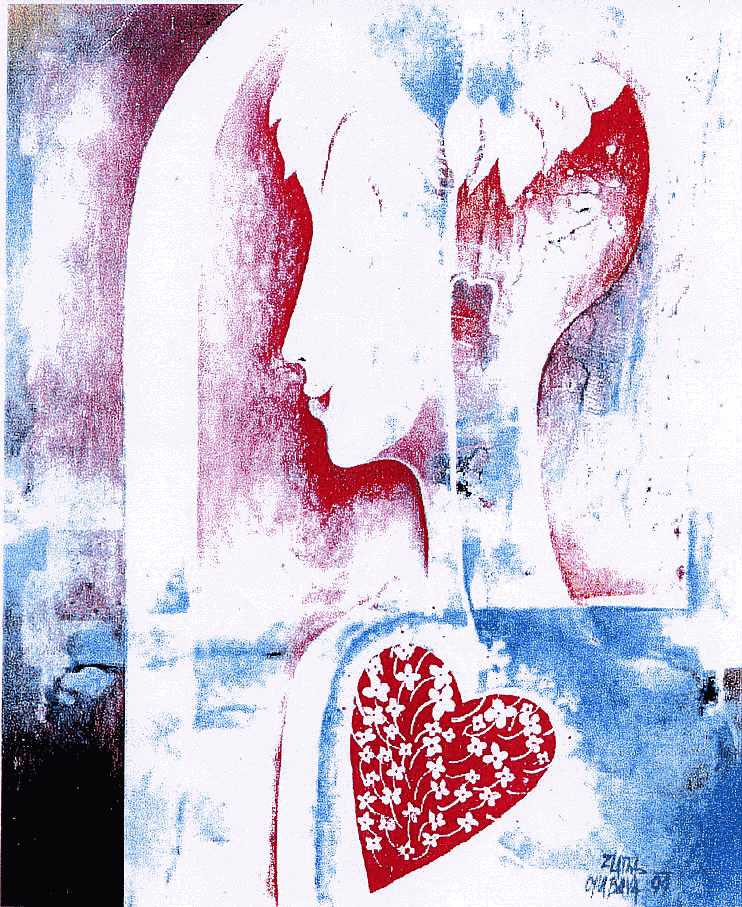

Návraty I.
Katrin
Dnes a dennì mám mo�nost se setkávat s „obyèejnımi“ lidmi, kteøí mì obdarovávají svım vnitøním bohatstvím. Jsou to bytosti obou pohlaví ve vìku od dvou do osmdesáti let a jen stále znovu a znovu �asnu nad poklady lidské moudrosti a znovu a znovu dìkuji za tyto mo�nosti poznání. Nìkteøí z nich mi svìøili svoje zápisy, které zveøejòuji tady tímto zpùsobem.
Ka�dı z nás, ty i já, jsme tvùrèí. Naše myšlení a cit mají obrovskou sílu a a� dosud se s nimi pracovalo nevìdomì, spontánnì pod tlakem �ivotních okolností. Prosím, zaènìme vìdomì tvoøit lepší svìt a zaènìme pøedevším u sebe svım osobním pøíkladem. Ka�dodenním úsmìvem, pochopením a soucitem. Pokud na sobì èlovìk zaène pracovat s vìdomím své duchovní síly, pøestanou na nìj platit astrologické i numerologické vıpoèty, zaène obcházet hvìzdy.
Kdy� láska rozkvete
Kdy� láska rozkvete
jako nevinnost malého dítìte,
to srdce plné kvìtù,
s vùní letíš do jinıch svìtù.
Dám svùj úsmìv
pro krásnìjší ráno,
dám své ruce plné nìhy,
dám své slovo konejšivé
pro veèer pod hvìzdami,
dám svùj pohled zemi snù,
dám nadìji svou
pro nádherné dny pøíští,
dám radu dobrou nyní,
dám lásku svého srdce
pro vesmírné chvìní,
dám touhu svou v míru bıt,
dám polibek sladkı
pro pokojné spaní.
Dám odvahu svou pro vìk zcela novı.
OBSAH
1.Poèátek
8.Exodus
11.Èas
13.Budoucnost
14.Partnerství
15.�ivotospráva
16.Numerologie, lexigramy, automatická kresba
17.Pyramidy
18.Derek el Him
20.Akáša
21.Leonardo
23.Sen
24.Povídání se svım vnitøním já
Tvoje kniha je u� napsaná. Jen zaèni listovat jednotlivımi stránkami, podívej se na obsah a název. Osloví obrovské mno�ství lidí, kteøí hledají sami sebe, kteøí hledají Pravdu o stvoøení a ví, �e jsou bytostmi vìènımi, jen zapomnìli, odkud pocházejí a proè jsou tady a teï. Pomù�eš jim touto knihou si vzpomenout na to co bylo, plnìji pro�ívat to, co je, a tím ovlivòovat svou budoucnost, která je ji� zapsána.
Myšlenka, �e lidé jsou nepouèitelní a nenapravitelní, je velmi nebezpeèná. Staví lidi do role bezduchıch loutek, se kterımi se dá libovolnì manipulovat.
Lidé se narodili na této planetì právì proto, aby si uvìdomili svou schopnost tvoøit, vzpomnìli si, �e jejich tìla jsou chrámem duše, které jim umo�òují tvorbu realizovat.
Tak se do toho pus�, projdi se do své budoucnosti, abys mohla snadnìji tuto knihu psát. Listuj a pracuj, abys pomohla lidem rozpomínat si na to, èím byli a èím budou. Vùbec nevadí, �e netušíš v tomto okam�iku, o co jde. U� jsi zaèala a to je nejdùle�itìjší
Jsem stále s tebou, jsi moje milované dítì, které se ke mnì s radostí a dychtivì navrací a umo�ni tento pro�itek i ostatním.
Tvùj milující Stvoøitel
Vidím proudìní duchovních energií. Letím prostorem. Je to závratná rychlost. Neuvìdomuji si svoji hmotnost. Let se zastavil, jsem v opálovém prostoru, jemòouèké barvy-nejvíc zelenkavá a modrá. Nebeskı klid a mír. Meziobdobí duše, svlékám tìlo pryè jako kuklu.
Asi se brzy narodím. Cítím se ve tvaru spermie-malinká svítící kulièka s ocáskem. Svìtlo je velice silné, vyzaøují z nìho paprsky na všechny strany – jako z Je�íška.
Mùj úkol v novém �ivotì – mám tvoøit. Duchovní energii mám v sobì, toèí se ve mnì jako duhová-opálová gramofonová deska, s tímto mám pracovat. Táhne mne to k tmavému prostoru, tento mne stahuje. Je to hmota, která potøebuje bıt touto duhou naplnìna.
Ze mne smìrem pryè proudí obrovské husté zástupy bytostí. Naplòuji je duhou. Prostor kolem nich zèervenal, na bytostech je vidìt èervenı odlesk. Bytosti se promìòují na bublinky a proudí smìrem ode mne do èerveného prostoru. Teï se èeká, co s tím udìlám. Bolí mne oblast tøetího oka.
Objevuje se mi �idovská Davidova hvìzda (šesticípá), pøevá�nì �lutá a èervená, lemovaná oran�ovì. Spojení ducha a hmoty.
Pøiblí�ila jsem se k planetì, pøitahuje mne svou váhou. Vidím její budoucnost. Mìsto plné mrakodrapù hlavou dolù. Je pøelidnìné. Domy, domy, lidi, auta, nesmyslná rychlost, nesmyslné hem�ení. Lidé vùbec nevnímají slunce, nevnímají nebe. To je naše planeta Zemì, vnímám ji jako hmotu.
Vidím velkı øídkı høeben. Proèesávám jím køoví. Znamená to vyèesat vìci, které sem nepatøí – vyhazuji je ven.
Létající talíø – jinı tvar, ne� jsme zvyklí. Je to obrovskı plochı kosmodrom, uprostøed vysoká špièatá vì� èlenitá jako gotické chrámy s køídly. Je to centrum. Má podloubí a vnitøní trvalé rovnomìrné svìtlo. Je to jako v paláci. Loï má velikost asi naší planety.
Mám na sobì zlaté šaty, špièatou korunu, na ní barevné tøpytivé drahé kameny. Šaty mají køídlové rukávy od zápìstí a� dolù. Jsem nahoøe na lodi v otevøeném prostoru podloubí paláce. Mám velkou záøi a rozpa�ené ruce jakoby �ehnáním do vesmírného prostoru.
Ty zástupy lidí šly na planetu. Koruna mne s nimi spojuje, tak jim dávám pokyny a øídím je. Mùj duál tak nesvítí, má bøidlicovou barvu a obrovskı objem. Já jsem pøed ním malinká, éterická. On je jako skála. On je základ všeho-hmotná tvoøivá síla. Máme jedno vìdomí. Jsem tìkavá slo�ka, jsem duchovní síla.
Mám mo�nost se oddìlit a podívat se jinam, pak se vracím a pøedávám znalosti.
Jdu se podívat na planetu Zemi. Mírnì zvlnìná krajina, �ádná pohoøí, samá zeleò. Všude d�ungle, pralesy. Dívám se na pobøe�í, kde je utr�enı sráz z èervené �elezité pùdy, trèí zde koøeny stromù.
Z moøe vylézají obrovští pavouci. Mají lesklá elipsovitá tìla, nìco mezi krabem a pavoukem a mám pocit, �e jsou to bytosti. Zaèali pøíst sí� �ivota po zemi. Jsou to pravidelné pøesné šestiúhelníky nad celou zemí, jsou to energetické cestièky. Hotová souvislá sí� je matná jako re�nı provázek. Sbíhá se na pólech do tvaru Davidovy hvìzdy. Sem se pak vysílá energie z vesmíru (dìlám to já), která celou sí� nabíjí. Tu energii èerpám z mého duálu.
Vidím další symbol – model atomu – další propad do hmoty.
Pode mnou je šachta, kterou se energie, hmota, svìtlo propadá a hroutí. Jsem stále v prostoru lodi, je tam smutek. Je to spousta promarnìné práce, která se nepodaøila. Místo rozvoje došlo k pádu.
Zpùsobily to ty bytosti, které se ode mne odtrhly, kdy� jsem je øídila. Pøestaly se mnou pracovat, myslely si, �e to zvládnou samy. Nemám jméno. Jsem všeobecnì velká. Scoutche (malé létající talíøe) jsou v porovnání se mnou jako dìtské hraèky. Mùj duál je ještì mnohem vìtší. Jsme mimo prostory lodì, naše energie by ostatní spálila. Jsme stvoøitelé, to je naše práce. Vybrali jsme si tento sektor vesmíru k osídlení, Stvoøitel to dovolil.
Scoutche se vracejí, pøinášejí špatné zprávy. Je tøeba zasáhnout. Pøemıšlím, co teï dál.
Musíme se zhmotnit, abychom byli k nim blí�. Opìt vidím disk, kterı se toèí jako gramofonová deska, ale u� nemá tak pìkné barvy, jeho povrch je hrbolatı, zvrásnìnı, pokøivenı, netoèí se pravidelnì, je tì�kı.
Blí�íme se k dalšímu stvoøení do oblasti bledìmodrého slunce. Na povrchu jsou obrovské erupce, hodnì to v nìm vaøí, je mladé, plné �ivota. Je to zajímavı pohled pozorovat, jak to bublá. Je to naše Slunce. U� jsme se odpoutali a blí�íme se k Zemi.
Je tu šero, tma, mraèna popílku, zpustošená zemì, krátery po vyhaslıch sopkách. Skoro nic tam neroste, je horko. Jsou tam krásná modrá jezera. �ivot na souši není, snad je ve vodì. Tak�e jdeme pod vodu, ale tam také nic není. Moøe je klidné – není mìsíc, kterı by zpùsoboval pøíliv a odliv.
Voda je stojatá, temnì zelená, asi je hodnì hluboká, moc se mi do ní nechce. Rozhodli jsme se, �e do moøe nepùjdeme. Jsme na skalnatıch útesech, pøemıšlíme, co s tím a je nám smutno.
Objevil se symbol èínského luèištníka – starobylı obrázek, má ochrannı štít pøed sebou a je v poloze napjaté tìtivy pøed vystøelením šípu.
Mám se pøesunout do oblasti, kde je dnes Èína. Toto území není tak znièené, není tam tolik sopek, pøíjemná rovina, vysoké hory dole chrání pøed vysoušením vìtrem. Je to velká chránìná kotlina, kde mù�eme tvoøit. Je to Atlantida na území dnešní Èíny. Hory se neustále tvoøí, hıbou se, kraj je nepevnı, ruší mne to v soustøedìní. My èistíme oblohu. U� se to prosvìtluje, nebe je èistší, trochu modré, je klid a mír, ticho – základní podmínky pro dobrı �ivot. Pozoruji kontinent stále svrchu.
Teï se nacházím v prostoru, kterı vypadá jako atomovı reaktor na lodi. Je to líheò duší. Rojí se a proudí osídlit krajinu. Plešaté hlavièky oblièejem ode mne, vidím jen uši. Mají tìlovou barvu a jdou tam dolù. Jsem stvoøitelem duší. Dole je ji� lidstvo, vidím pyramidy, krásné upravené kvetoucí zahrady.
Kontrola vısledku za nìkolik miliónù let:
Upravená zemì, stavení od sebe dosti vzdálené. Pyramidy z tmavého kamene, krásné zahrady. Do pyramidy, která je mnohem vìtší ne� kterákoliv v Egyptì, mne èasto volají knì�í – vysoce duchovní bytosti. Já jim øíkám bratøi, sestry. Uprostøed je vìènı oheò- jako olympijskı – je to tryskající energie. Tu energii tam dávám já, tryská neustále, oni z ní èerpají. Kolem ohnì je velkı mramorovı oltáø, vidí mì v tom ohni ve zlatém hávu, ale nesmí se pøiblí�it. Kleèí na zemi a je jich moc. Mají èepice jako svìtlé lesklé ku�ele (jsou to anténní pøijímaèe) a jednobarevná svìtlá volná roucha. Hlavní knìz má na hlavì anténu jako vysokı oblouk, má tak kvalitnìjší pøíjem, domlouvá se s mım duálem. Ten je obsa�en v celé pyramidì. Nejsem tam stále. Pùsobím nahoøe.
Nebyli jsme tam nìkolik miliónù let. Zase jsme pøišli na kontrolu.
Dole potí�e, rozbroje, válka. Tøídní rozdíly ve spoleènosti. Špatnì udr�ovaná rovnováha, není z pøirozenosti, ale z násilí. Zaèíná se vše hroutit. Je zastavenı rùst, není to dobré. Divím se, kam to dospìlo a proè se tak chovají. Nic nepochopili. Byli jsme mezitím v prostoru. Tam èas není.
Projevil se silnı zásah zvenèí, jsou to jiné síly ne� naše. Jsou ni�šího øádu. Abychom jim mohli vzdorovat, musíme si sní�it vibrace a èeká nás další vtìlení.
Bez emocí chladnì a rozumovì zva�ujeme, jestli se do této situace máme dát. Je více alternativ. K tìm bytostem nemáme �ádnı vztah, proto�e se opìt odtrhli. Nikdo nám poradit nechce. Stvoøitel nám pouze øíká, �e máme pracovat. Je to jediná rada, kterou nám dal. Nemáme pro koho a s kım pracovat a proto musíme k nim do hmoty.
Vidím obrovskı køí� – symbol upoutanosti do hmoty.
Nechce se nám. Jdeme pro nás do absolutního neznáma. Je to risk, jestli to zvládneme.
Rozhodli jsme se. Jedno rameno køí�e se stalo záøivì zelenım, spouštíme se po nìm dolù. Cítíme prázdnotu a opuštìnost, chybí radost z tvoøení, která byla pøedtím.
Uvìdomuji si sama sebe jako jednotku. Mé druhé já také. To do té doby nebylo. Nemáme dobré pocity. Kdy� jsme byli jedno, cítili jsme dva principy v jednom.
Vidím detailnì oèka pleteného svetru a �asnu, jak je to spletené a jak to dr�í pohromadì.
Seznamuji se se Zemí. Jezero, modrá voda lemovaná lesíky, poprvé to nevidím shora. Nabírám vodu do dlaní. Jsem �ena s hodnì dlouhımi kaštanovì hnìdımi vlasy, mu� má delší vlasy stejné barvy. Máme volné obleèení svìtlé barvy. Vidí nás jen nìkteøí lidé. �ena v sukni a �ivùtku se štoudví v ruce mne nevnímá, kdy� se sna�ím na ni promluvit. To bude potí�, u� to zaèíná. S mu�em se dr�íme stále za ruce, jsme poøád spolu. Pozorujeme v dáli zasnì�ené hory, necítíme chlad. Jsou ni�ší, ne� Tatry, vidíme to poprvé. Jsme rádi, �e to mù�eme obdivovat. Obloha je modrá, nikdy není noc. Nebe jen ztmavne, hvìzdy není vidìt. Musíme ale do jiné èásti planety.
Mám pocit tíhy a uvìznìní v malém prostoru. Pocit, �e jsme pod poklopem. Máme smíšené pocity radosti a krásy. Krása je jen sama pro sebe, odøíznutá od Vesmíru.
Jdeme do chrámu, kde nás u� èekají. Vidíme na oknech ozdobné møí�e a divíme se, co to je a proè to je. Svítí se tam, nechce se nám vstupovat do dalšího stísnìného prostoru. Otvírají se obrovská vrata.
Stojím u okna, dívám se do krajiny, poøád cítím smutek. Jsem tam se svım mu�em, vìdomí u� nemáme spoleèné, pro pocit spojení se stále dr�íme za ruce. On má nad hlavou záøící zlatou kouli, která se pohybuje – pocit, �e patøí k Vesmíru. Sbíráme odhodlání k jednání. Nechce se nám do toho. Na horší se tì�ko zvyká.
Èeká nás obrovské shromá�dìní. Kráèíme po stupních nahoru jakoby ke trùnu. Kolem nás je spoustu temnıch postav. Je to horší, ne� naše oèekávání. Musíme si zvykat na hrubohmotnost, dosud jsme s tím nepracovali. Nedovoluje se nám dr�et se za ruce. Posadili nás na trùny daleko od sebe a obklopili nás èernımi. Pova�ují nás za bo�stvo. Vadí nám, �e nám stanovují pravidla hry. Pøedvádìjí se nám. Vedou nás tajemnımi komnatami. Odsouvají tajnı vchod do velkého ornamentálního sálu, chtìjí se pochlubit svımi vıtvory – ochrannımi møí�emi. Vadí mi, �e tam není �ádné pøirozené svìtlo. Ale tam se mi to u� líbí trochu víc. Vidím zlacené masky faraónù. Knì�í mají vıšku asi dva a pùl metru. Zavedli nás k hrobce, ve které je postava velká 15-20 m. Já v ní vnímám svého mu�e. Je to jeho hrob z døívìjšího �ivota. On se také poznává. Le�í tam se zkøí�enıma rukama – UNITHEP. My jsme byli jedno. Mají to pompéznì udìlané. Sklenìné sloupy, dobrá energie, uctívané místo je produchovnìlé, pìkné.
Øíkají si Bo�í lidé – celı národ. A své zemi øíkají Zemì bo�í. Duše se tam rodí hodnì opakovanì. Máme zde vládnout v èele jako král a královna. Chtìli bychom radìji dìlat duchovní práci. A� po velkém dohadování máme veškeré pravomoci a �ádné dvoøanstvo. My umíme mizet, pohybovat se kde chceme, oni to nesmìjí vìdìt. Musí mít pocit, �e s námi mohou manipulovat. Je tam spousta tíhy, nedìláme tu práci rádi. Nejlíp je nám spolu. A ještì je mi dobøe s mou sestrou. S tou se objímám, jsem s ní velmi ráda. Z jejího mu�e cítím hodnì závisti, je vìènì nespokojenı, kuje pikle, nepomáhá. My sami nejsme nadšeni touto situací. Je mezi nimi rozklad, tyto vztahy narušují naši práci. Ale vím, �e mám úkol a �e ho musím splnit……….
Co to bylo?
Hlásím se ti, já, Orthon, abych ti odpovìdìl na tvé otázky. Cítíš, �e se s tebou dìjí zmìny. Došlo k tvému úplnému napojení na vesmírné dìní a bez jakıchkoliv pomocníkù a rádcù sama nejlíp víš, kde se co dìje. Byla provedena opatøení na tvou ochranu, aby se nemohla zhoršit kvalita pøíjmu. To je ten nìkolikadenní tlak na temeni hlavy a šimrání.
Jen si, prosím, uvìdom zpìtnou vazbu tohoto spojení. Zaèni velmi ukáznìnì pracovat se svımi myšlenkami, proto�e jsou všechny vysílány ven, kolem tebe, a pokud se ti honí hlavou páté pøes deváté, zpùsobuješ tím chaos ve vesmíru. Teï nastala velmi tì�ká fáze tvého uèení. A nikdo ti v tom nepomù�e, ani já ne. Jen ty mù�eš dokázat, aby tvé myšlenky byly jednoduché, srozumitelné, ladné, v harmonii a lásce – naprosto všechny. Tato sebekázeò bude a� sebetrızní, mnohem horší a nároènìjší ne� sebekázeò tìlesná. Ale já vím, �e to doká�eš. Šiø stále svìtlo, je ho kolem tebe stále ménì. Lidé v ka�dodenním shonu opìt zapomínají, kım doopravdy jsou a je potøeba je neustále povzbuzovat. Stále, trpìlivì, poøád dokola, vytrvale, s láskou. A to ty umíš.
Jsem stále blízko tebe. I teï tì hladím, jen to necítíš. Ale u� brzy tomu tak nebude.
Mù�eš vklouznout od této chvíle do kteréhokoliv �ivota ve vesmíru. Chceš tvoøit a ne se vracet k tomu, co je ji� zpracované. A tak je to správné. Není tøeba nic posuzovat a vyhodnocovat. Všechno, co se stalo, bylo dobré. Mìlo to svùj úèel, svùj smysl, je to souèást poznání. Dobrı základ pro tvoøení nového s pouèením z minulıch chyb. Teï je potøeba co nejvíce vìdìní dát dál lidem. Proto budeš psát tuto knihu. Já ti pomù�u, povedu tì. U� se na tuto práci tìším. A ty také. Máme k sobì mnohem blí�e, ne� tušíš.
Orthon
HMOTA ?
STATUS-QUO urèuje
Zo svetla sa zrodila,
silou sa zopela,
z ducha o�ila
a v láske pre�íva.
Z Boha je hmota.
Nie som uzol hmoty,
ale prišla som sa rozviaza�.
Èajka Jonathan
a kvantova mechanika
mi chcú pomáha�.
Moje balenie
je zavádzajúce
a osobná ríša
brzda.
Niekde je
vysoké napetie
a inde nízky tlak.
V dobì sita
vá�nos� chvíle
silu nadobúda.
Slyším tvá pøání, slyším tvou meditaci – ta slova, která pronášíš ke mnì a ke svım vesmírnım pøátelùm. Jsem potìšen ka�dou prosbou o odpuštìní za jiného èlovìka, ale vìz má milá, ka�dı dostane jenom to, co mu nále�í. Vaše prosby o odpuštìní mu ale ulehèují osud, pomáhají, aèkoliv si to tøeba sám vùbec neuvìdomuje. Ale urèitì to pocítí. Napìtí, které ve vás lidech je, se s ka�dou prosbou sni�uje, stává se menším, ale jenom vy jej mù�ete odstranit úplnì. Prosbou ke mnì, svım láskyplnım a nesobeckım srdcem. Nejde to hned. Ale i cesta dva kroky tam a jeden zpátky je pøece zaèátkem. Tvé �ivotní cesty a pøeká�ky tì mnohému nauèily. Aspoò teï u� víš, jak dùle�itá je víra v sama sebe, se spoléhat na druhé, vìøit svım schopnostem a mo�nostem. Teï u� víš. Vše je mo�né. I zdánlivì nemo�né. Je stejnì tak dùle�itá víra v sama sebe jako sounále�itost k ostatním. K tìm, kteøí jdou za spoleènım naším cílem: láskou a porozumìním. Je vás èím dál víc a naše vzájemné vazby jsou a ka�dım dnem budou pevnìjší, ale pøesto nezavazující, volné a svobodné. Miluji vás a vìøím, �e vše splníte beze zbytku. Pøedáváme ti tvé kosmické pøátele, rádi ti pøedají své znalosti a já se s tebou prozatím louèím.
Otec Stvoøitel ústy Autera
My se pøidáváme k pozdravùm našeho Otce a za všechny mírumilovné bytosti tì zdravím já, Ptaah. Máš mnoho konkrétních otázek a já mù�u na nì, èi alespoò jejich èást, odpovídat. Vše postupnì. Ten den 23. 9. 1997 pøevzali bytosti Svìtla kontrolu nad Zemí. Od toho dne byl omezen fyzickı vstup bytostem sil Temna, ale bohu�el není v našich mo�nostech jim zamezit vysílání negativních myšlenkovıch impulsù. Ty poci�ujete vy sami na sobì, proto je nutné neustále mít kolem sebe ochrannı štít. Ta vize s hodinkami nastavovanımi na 12 hodin má vztah k tomu, co se má stát. Prosím, ještì poseèkej, sama brzy pochopíš.
Jak ti mám vlastnì øíkat? Víš, je to v této fázi úplnì jedno, krásná bytosti. I já mám nejrùznìjší oslovení, u� jsi na to pøišla. Ano, jsem Emanuel, vykonavatel Stvoøitelovi vùle, tvùrce harmonie a lásky, souladu a øádu. Tedy pravı opak kní�ete Satanaela. Jeho èinnost byla povolena a schválena jako velmi nadanému tvùrci a jeho èinnost umo�òovala poznávat rozmanitost tvoøení. Na základì kontrastu, systému rub a líc, se tvoøí nejkrásnìjší vìci – viz svetr. Jsem rád, �e se smìješ.
Tak�e toto bylo vše se souhlasem Nejvyššího do toho okam�iku, dokud byly síly v rovnováze. Ale kdy� došlo k situaci, �e chtìl kní�e-pán ovládnout pomocí centrální �ivé knihovny celı vesmír, dal Stvoøitel pokyn k zásahu a zastavení jeho èinnosti. Nejdøíve formou vykázání do omezeného prostoru, teï k jeho likvidaci. Bohu�el se jeho kontrastní èinnost zvrhla v tì�kou nemoc, která by zahubila celé tìlo – vesmír. A to Stvoøitel nedopustí. Bylo nìkolik pøedpokladù oèisty vaší drahé milované Zemì od této tì�ké choroby. Ale jak vypadá situace v souèasné dobì, bude muset dojít k té nejtvrdší a nejradikálnìjší variantì tj. úplné ponoøení všech kontinentù a vynoøení novıch. Planeta se na sekundu zastaví a zaène se otáèet naopak. A tak dojde k této vımìnì pùdy, povrchu oèištìného a znovu obyvatelného. Ji� je pøipravena celá armáda zahradníkù a genetickıch in�enırù, kteøí se tìší na tuto práci, aby mohli na Zem vrátit to, co na ni patøí. Všechnu tu krásnou a zdravou faunu i flóru, její� vzorky byly prùbì�nì odebrány a zachovány na jinıch planetách, kde se stále rozmno�ují. Ano, to jsou ty evakuace zvìøe a ptákù v posledních dvou letech, které pozoruješ. Dìje se takto prùbì�nì i teï, napø. naposledy pøed tıdnem (zmizely sıkorky).
Tím, �e jsi zcela otevøela své srdce a mysl, vznikla tvoje mo�nost otevøení se všem informacím o nejstarších dìjinách vzniku vesmíru a smyslu celé souèasné situace tady na Zemi. Proto ji také necítíš jako tí�ivou, proto�e víš, �e vše probíhá podle pøedem stanoveného plánu, kterı jsi pøišla i uskuteènit, aby vesmírné vìdìní zùstalo zachováno pro všechny další vìky. Realizace tohoto úkolu je skuteènì nároèná, ale spoleènımi silami to zvládneme, �e?
Objevila jsi toho velmi mnoho. A �e tì to tìší mnohem víc, ne� kdybych ti to pøed rokem nadiktoval? Víš velmi dobøe, �e má všechno svùj èas a místo. A všichni pracujeme na spoleèném díle.
Aštar
Bojuješ za správnou vìc a nenech se zviklat nerozhodnımi lidmi.
Vıbuch Etny je prvopoèátkem celého pohybu zemské kùry a øetìzu vulkanické èinnosti na svìtì. A ten nastal. Záblesky na nebi èerné a èervené barvy bez ostatních projevù typickıch pro bouøku jsou disharmonické tlaky energie vaší matièky Zemì, tak jako se bolest projeví v auøe èlovìka. Vaše matièka planeta Shan velmi trpí a nelze jinak, ne� odstranit pøíèinu, která toto utrpení vyvolává. Jsi léèitelka, tomu velmi dobøe rozumíš. Shan je �ivá bytost jako jste �ivımi bytostmi vy – lidé. Chce �ít, bıt zdravá a krásná a nosit další �ivoty, tak jak je to jejím úkolem a posláním. Nastal èas jejího uzdravování. Nejdøív odstranit pøíèinu – pøemno�ené agresivní a bezohledné lidstvo, potom operace a desinfekce tj. staré kontinenty se ponoøí a vzniknou nové. Potom plastická operace tj. nová vegetace, zvíøata apod. (fauna a flóra) a pak vás znovu mladá, rozdychtìná, krásná a zdravá uvítá ve své náruèi. Ano, vrátíte se zpìt. Ti z vás, kteøí pochopili své chyby a zmìnili zpùsob uva�ování, ti, kteøí �ijí v lásce k bohu a sobì navzájem, ti, kteøí si budou opravdu vá�it jejích darù a ctíti je jako dary bo�í – ti budou vøele oèekáváni.
Toto vše bylo ji� dávno pøedpovìzeno a teï se sudba naplnila. Je to vše v souladu s bo�ími zákony a ten, kdo má dost lásky v srdci, se nemusí nièeho obávat. Èeká ho š�astnı a krásnı �ivot pod starostlivou péèí a láskou našeho Nejvyššího, Stvoøitele milovaného.
Tvoje pøirovnání k Titaniku je vıborné – lidé na palubì tanèí a nechtìjí si pøipustit, �e se loï potápí. Teï to èekání. Ani èekání u zubaøe není pøíjemné a pøitom to podstoupíš a máš radost a uspokojení z vısledku.
Chtìla bys vìdìt nìco o Blaníku. V podzemí této hory bydlí mimozemská civilizace „nesmrtelnıch“ z páté dimenze. Ti vystoupí na povrch, a� odletíte, a budou chránit celé území pøed hordami pøistìhovalcù a pøed plenìním. V�dy se objeví všude vèas, aby zabránili neštìstí. Èekají na okam�ik evakuace stejnì napjatì jako ty, jen trochu déle – asi tøi tisíce let. Jejich pøítomnost pomù�e ochránit vaši zem. Jsou to bytosti vysoké asi 2,30-2,50 m, pro lidi ve støedovìku skuteènì obøi. Ve své dimenzi se volnì pohybují po zemi a je mo�né je vidìt u vás pøi bouøi. Díky zmìnì elektromagnetického pole dochází k prostupu dimenzí. Jsme s nimi stále v kontaktu.
Kráåovná nebies mi nevyhovuje..
Ja som tu pán.
Ja som si zaslú�il,
�e malı svet ma poslúcha.
Ja mám bohatstvo na Urale.
Ja mám tú moc
naftu speòa�i�.
Mne sa podrobia
morské koraly
krásu predáva�.
Zemská kora
ma nezaujíma.
„Eštì“ nepáli.
Mesiac mi poslú�i
na iné úèely.
Ja som si kúpil
Chrám Matky bo�ej!
Mne tam patrí �i�!
Vojenskej základni
som zaplatil,
aby mlèala, �e ju poèula.
Mòa budú poèúva�.
Ona sa nevráti.
A ak,
tak som tu zariadil
DEÒ NEZÁVISLOSTI.
Je dobøe, �e nasloucháš v klidu své duše. Jsem to já, tvùj Otec Stvoøitel, kterı ti dìkuje za krásnou meditaci, kterı tì velmi rád zahalí svou láskou a kterı v sobì nosí pochopení a odpuštìní pro vás všechny. Je velmi dobré pro vás, kteøí se tak èasto setkáváte, váš osobní kontakt. Upevòuje ve vás víru ve správnost vašeho konání, dává vám sílu k pøekonávání bolestí všedního dne. Ano, je to tak, moje milá. Celá Zemì je ka�dım dnem pod vìtším náporem hrubıch negativních vibrací. A ty jsou zpùsobeny jak zásahy zvenèí, tak myšlením a chováním lidí. Velmi citliví lidé vnímají sebemenší zmìnu vibrací elektromagnetického pole kolem sebe a proto reagujete daleko døív a hloubìji, ne� ostatní lidé.
Tento roj meteorù, kterım Zemì nyní prochází, narušuje její energetickı obal, narušuje její u� tak porušenou energetickou rovnováhu. Nese sebou odlišné vlnìní, které má velkı vliv na psychiku lidí. Ale vìø mi, moje milá, je to v zájmu vás všech, i kdy� to takto nevypadá. A� ten koneènı vısledek bude pozitivní. Ne všechny prostøedky,.které jsem nucen pou�ít, jsou pøíjemné, ale jsou velmi nutné. Pro otevøení oèí a srdcí mnohıch spících bytostí, je� �ijí ze dne na den bez ohledu na následky svého konání.
„Má to nìjakı vıjimeènı vliv na lidi?“
Samozøejmì �e má. Porušenım obalem Zemì procházejí daleko snadnìji a jednodušeji negativní vibrace a myšlenkové impulsy bytostí, je� mají velkı zájem na znièení Zemì. Soustøeïují se pøedevším na bytosti vysoce duchovnì vyspìlé a chtìjí tímto, by� jen doèasnì, oslabit jejich odolnost a schopnost vysílat pozitivní energii. Je dobré èasté obnovování energetického štítu, to dìlej i sama, a vyøiï to i ostatním. Nepøepínat se další 2-3 dny, hodnì odpoèívat a hlavnì si uvìdomit, �e vše máte ve vlastních rukou. Pokud budete chtít propadnout depresím a splínu duše, bude vás to stát hodnì sil pøi obnovì svého energetického systému. Proto by bylo dobré odlo�it na chvíli práci, jít ven do pøírody, mezi lidi, kteøí mohou dát potøebnou oporu a dávku energie. V�dy� jenom pocit toho, �e v tom nejsem sám, �e jsou kolem mì jiní, kteøí mi pomohou a podr�í mì v tì�ké chvíli, stojí za to. To je ta soudru�nost mezi vámi, to pevné pouto, je� opravdu pøetrvalo staletí.
Miluji vás, dìti moje, i vy si projevujte vzájemnì úctu a lásku. Dìkuji ti za vše, za spojení a louèím se s díky s tebou já, Otec Stvoøitel ústy Autera.
Vy
èo picháte si heroín
a èakáte š�astia splín,
vedzte,
�e zdolanı strach z vašej slabosti
je vaša sila!
A nie prepichnutá �ila!
A ozaj: dobro nad zlom zví�azí!
Jsou to sice informace o tobì, ale z tvého nebo vašeho pohledu se dotıkají fyzicky úplnì cizích lidí. To je to, �e dnešní pozemš�an stále dokola od sebe oddìluje jednotlivá vtìlení, jednotlivé �ivoty rùznıch lidí v rùznıch dobách a pøece je to jedna a ta samá bytost – ty nebo oni sami. Vìdomosti, které jste za rùznıch �ivotù získali, se ukládají a zase jenom vy sami je mù�ete otevøít a pou�ít. Ale jen pro dobrou vìc. Ka�dé zneu�ití dojde døív nebo pozdìji odplaty, a to v�dy na vás samıch. Proto získáváte pøístup k tomuto bohatství postupnì, abyste mìli èas vše pochopit a za�ít. Jenom tam, kde nehrozí zneu�ití tìchto znalostí, je postup velmi urychlen. A to u� se tıká mnohıch z vás. Uvìdom si, prosím, �e tato informace-návod-je vodítkem ke správnému smìru. Nìkdo to má pro technickou oblast, proto�e nejvíce pracoval jako in�enır èi vìdec, jinı má toto vše smìrováno k oblasti duchovní, proto�e v té dobì pracoval v této sféøe. Ale všichni byli pøece duchovnì vzdìlaní. Ne, všichni nebyli duchovnì na vıši. Kdyby byli, nikdy by nedošlo ke zneu�ití znalostí pro dobro malé skupiny na úkor mnoha milionù druhıch. U tebe je témìø zbyteèností se zabıvat napø. slo�ením kosmické lodi, èi sna�it se pochopit princip fungování zbraní. Ty se, prosím, zamìø na sféru duchovní. A uvidíš, co všechno doká�eš. Všechno pøijde postupnì. Útr�ky a náznaky pak dají dohromady obraz. Myslím, �e u� vcelku na vıbìr nemáte. Buï a nebo. Buï práce na sobì samıch, a to tím správnım smìrem, nebo neèinnì pøihlí�et a nést v koneèném dùsledku za své konání odplatu. To není zastrašování ani vıhru�ka. To je konstatování faktu. Je velmi jednoduché obracet se se svımi dotazy na druhé a nezapojovat pøitom svoji hlavu. Namáhej i ty své mozkové závity a uvidíš, zanedlouho ti bude spousta vìcí jasná úplnì dokonale. Pak u� se nebudeš muset nikoho na nic ptát. Nemìlo by to �ádnı vıznam, kdyby vám byly všechny informace pøedlo�eny vcelku bez vaší úèasti. To, �e se na tom podílíte, má pro vaši osobu, váš rùst, obrovskı vıznam. Spoléháte sami na sebe, vìøíte ve vlastní schopnosti, nejste odkázáni na sdìlení druhıch.
Vím, �e poznávání nìkterıch skuteèností vás vyvádí z míry, otevírá dávno zhojené a zapomenuté rány, ale je tøeba vrátit se do minulosti a koneènì se pouèit z chyb, kterıch jste se hned v samém poèátku dopustili. I kdy� bolest mù�e bıt hodnì velká, nemá právo a nesmí zatemnit vaše myšlení, nebo� tím byste zahodili vše, èím jste za dobu svıch inkarnací prošli. Zahodili byste obrovské zkušenosti a tìch se vám pøece dostalo proto, abyste jednali v budoucnu v souladu s pouèením, které z tìchto zkušeností plynou. Nemù�ete se nyní posuzovat podle toho, kım jste pøed miliony lety byli. Já vím, nastal èas slo�ení úètù a zase jenom na vás zále�í, jak se k tomu postavíte a zda obstojíte. Uvìdomte si, �e právì teï a tady je ten nejlepší èas ke srovnání a vyrovnávání dluhù a èinù. Nechcete pøece, aby se s vámi táhly dál vašimi �ivoty jako tì�kı stín, kdy� teï máte mo�nost vše urovnat. Pøeji vám, dìti moje, aby hlas vašeho srdce byl silnìjší, ne� vše ostatní, co ve vás je od poèátku vìkù. Je to láska – odpouštìjící a promíjející, osvobozující a èistá, která vás osvobodí od všeho a vy se stanete opìt èistımi jako døív. Je to jen na vás. Ale je èas k odpuštìní. Nesetrvávejte dál na svém špatném pocitu, nechte srdcem projít svoje svìtlo oèištìní a vyšlete ho tìm, kteøí to nejvíce potøebují a kteøí na toto odpuštìní èekají.
Stále èastìji teï budeš nahlí�et do vztahù a souvislostí, které mají pøímou vazbu k dnešní situaci na Zemi. Pøed mnoha tisíci lety jste byli sem vysláni, abyste osadili tuto Zem a nechali tady po sobì nádherné vzkvétající místo. Okolnosti ale dostaly jinı smìr a proto jste se sem po skupinách vraceli, abyste napravovali to, co bylo znièeno. Ale tato vaše práce nesla jen malé vısledky, zato byly cenné vaše zkušenosti a pro�itky. Museli jste tím projít, abyste si dnes v plné míøe mohli uvìdomit dopad skutkù a èinù a abyste se vyvarovali chyb minulosti. Proto hledejte pouèení tam a pak ti bude jasné, �e tvùj postoj nebyl postoj osobní nenávisti, ale spíš podvìdomá znalost skuteèného stavu vìcí (setkání s jednou �enou). Aè jsi tehdy nedokázala obnovit v sobì vzpomínky na úkol, to co z podvìdomí pøicházelo, èasto vedlo tvoji ruku. Vìdomí toho, �e právì za její vlády (Nefertiti) a jejím pøièinìním bylo zrušeno prastaré spojení se Síriem, v tobì vyvolávalo vztek, kterı jsi nedokázala definovat. Teï u� víš, o co jde, u� víš to, co se nikde v knihách nedoèteš, proto jednej s otevøenou myslí a pouè se z chyb minulosti.
Chci tì upozornit, a vlastnì nejen tebe, abyste se opravdu neustále chránili svìtelnım štítem, proto�e o vaše znalosti – a nejen je – je vysokı zájem negativních bytostí. Budou mít snahu podstrèit vám zkreslené zavádìjící informace, proto je ta spolupráce více lidí víc ne� vhodná.
Vím mnohé a rád tì ke svım znalostem pøivedu. Ne, �e ti je pøedám bez námahy, i ty se musíš sna�it. Pak budeš vìdìt víc ne� my.“ Tomu nevìøím“. Vìø. Jste lístky v �ivé knihovnì. Vaše znalosti a vìdomosti na sebe navazují. My touto souèástí nejsme.
pøátelé
Teï nastala u� velmi dùle�itá fáze vašeho úkolu. To, �e jste se dostali a� sem, �e se vzájemnì seznamujete s vısledky své èinnosti, je velké plus. Nejde tady jenom o jednotlivce, jde o vás všechny, o jeden kompletní celek. Jste skupinka lidí, kterım se podaøil obrovskı posun, velké uvìdomìní si vlastního já a vlastní souvzta�nosti ke všemu tady na Zemi. To, co dostáváte ve svıch meditacích, vizích èi sdìleních, jsou jednotlivosti, které èekají na zaèlenìní do celku. A to, �e máte povolen vstup do studnice pokladù, vám umo�ní pomoci ostatním poslùm, kteøí si své vlastní cesty ještì nejsou tak docela vìdomi.
Ka�dı se uèí, ka�dı se vyvíjí a je nemyslitelné, aby celı svùj vìk existoval jenom jako bytost záporná, nahánìjící ostatním hrùzu a strach. Proto jste dostali rùzné pøíle�itosti k osobním zkušenostem, proto procházíte inkarnacemi jako vládci, ale i jako nejchudší z nejchudších, nìkdy jste vrazi, jindy jako obì�. Nesuïte, prosím, podle tìchto jednotlivıch zrození. Vezmìte v úvahu bytost kompletnì, vcelku, poznejte ji dokonale ze všech stran a pak teprve vytvoøte svoji domnìnku o nìm. Nikoliv názor, ten vám nepøísluší.
Co Sutech, mìl mo�nost odèinìní?
Ano, i on ji dostal. I on na vlastní kù�i poznal rùzné osudy a pøíkoøí, aby se sám pouèil z chyby, kterou udìlal. Tehdy zloba a závist vedly jeho ruku, proto byl vystavován mnoha zkouškám a mnoha vtìlením, aby dokonale na vlastní kù�i za�il pocity bolesti, strachu a bezmocnosti. Teï nastal vhodnı èas, abyste si navzájem odpustili, abyste vykroèili do dalších svıch �ivotù bez poskvrny a s vìdomím, �e jste udìlali vše pro dobrou vìc. A usmíøení a odpuštìní, to upøímné a od srdce – to je ta nejlepší vìc, která jde svìtem ruku v ruce s láskou. Suïte srdcem, nikoliv okem dávnıch svìtù. Pøeji vám, dìti moje, abyste jednaly s láskou, abyste své oèi nezakrıvaly více bolestí, starou miliony let. S láskou se obracím k vám všem a pøijímám k sobì i ty, kteøí zbloudili, ale sami našli zase cestu zpátky ke mnì, Stvoøiteli a Otci vašemu. Miluji vás, i vy si projevujte lásku tím, �e si odpustíte.
Teï se zaènou dít vìci… Vyhrò si rukávy, jdeme na to! Tìšíš se, �e? Já taky. Ano, budeme rozpouštìt ledová srdce, zasa�ené støepy Snìhové královny. Budeme uèit lidi rozpomínat se na svou pravou podstatu, na bo�ství v nich obsa�ené. Toto je naše práce. Budu ti do cesty posílat krásné lidi. Budeš pookøívat pøi kontaktu s nimi, budeš velmi š�astná z toho, jak se kolem tebe navyšují vibrace a roste duchovní uvìdomìní lidí. Jsem rád, �e ses s vervou pustila do práce. Prosím tì o ukáznìnost dále ve všech oblastech. Jsem rád, �e pøijímáš moje rady s pokorou a vdìèností a provádíš je. Takto je zajištìn stoprocentní úspìch.
Katastrofické scénáøe, které se teï na tebe hrnou ze všech stran, jsou bohu�el pravdivé. U� se blí�í èas rozhodnutí, èas oèisty, èas pravdy. Ano, pøíroda to cítí, kvìtiny kvetou jako o závod mnohem døíve, aby mohly nasadit plody ještì pøedtím, ne� vzniknou nepøíznivé podmínky. Snaha o zachování druhu je prvoøadım úkolem a cítí to. Ké� byste vy lidé mìli jen zlomek tohoto cítìní, této schopnosti pøedvídat a správnì øešit krizové situace pøedem. Místo toho krizové situace vytváøíte.
Je teï velmi dùle�ité nepromarnit ani chvilièku a usilovnì pracovat na šíøení informací mezi lidi a na svém vıvoji. Èas kvapí. Nenech se odvádìt lákadly a soustøeï se na dokonèení rozpracovanıch úkolù. Zále�í na tobì, jestli se nebudeš zbyteènì rozptylovat. Je potøeba urèit poøadí dùle�itosti. Jsi teprve na zaèátku toho, co bys mohla dìlat a toto je tvùj hlavní úkol:
- pracovat s energiemi na pøemìnu hmoty
- regulovat gravitaci
- zpracovávat magnetické pole a jeho pùsobení jako energetickı zdroj
- usmìròovat všechny typy energií v souladu s kosmickımi zákony tak, aby harmonicky pracovaly ve váš prospìch jako základní materiál pro stavby vašich domovù i tìl.
To všechno umíš, jen si vzpomenout. Nejlepší cesta je pøes lásku k lidem pøi jejich léèení, kde mù�eš hned v praxi nìco vyzkoušet. Zatím jsi postupovala velmi pomalu sama, ale teï se na to zamìøíme spoleènì.
Orthon
Hlásím se ti já, Stvoøitel, zprostøedkovanì pøes Authera, mého milovaného syna. Moje pøímé vibrace by tì spálily. I Auther radìji pou�ívá ke komunikaci mediálních schopností dalších bytostí, které slou�í jako transformátory. Nikdy není mo�né pøímé napojení, ale není to na závadu kvality pøijatıch informací. Ty se zaènou deformovat a� ve vaší atmosféøe díky negativním vlivùm, které jste si velmi usilovnì vìtšinou vytvoøili sami. To pak zále�í na úrovni jednotlivce, která je samozøejmì rùznorodá a kolísavá. Ty konkrétnì sis vybudovala velmi dobrı zpevnìnı komunikaèní kanál, správnì okam�itì rozeznáváš, s kım hovoøíš, a proto je tvùj pøíjem trvale témìø stoprocentní. Tohoto nástroje bych teï rád vyu�il.
Zatím budeš �ít v anonymitì. Pak bude nutné vystoupit veøejnì. Co máš dìlat teï? Psát. Psát a psát. Nech si diktovat od svıch duchovních uèitelù všechno, co uznají za vhodné. Všechno zvládneš pøi všech ostatních èinnostech a hravì. Jen chtít.
Jsem stále s tebou, moje milá. S láskou a úctou
tvùj Stvoøitel
Nic si z toho nedìlej, �e ti selhává mechanická pamì�. Nepotøebuješ ji Všechno se pøece dovídáš hned a k tomu pøesná aktuální data. Všechno je promìnlivé, pomíjivé – proè to ukládat do pamìti? Pou�ívej pro bì�nı �ivot pomùcky ve formì poznámek – to staèí.
Pokusy kontaktu se Stvoøitelem byly velmi opatrné. Ty opravdu asi funguješ jako solární baterky. Nejen �e tì tato vysoká energie nespálila, ale rozjásala tì a celı den vedla ve štìstí a záøivé radosti. To znamená, �e jsi dospìla k dalšímu úseku �ivota.
Co tì èeká v nejbli�ším období? Získáš nové dovednosti, které budou lidi uvádìt v ú�as. Ale pro tebe to bude jenom poèátek dalších tu�eb a pøání. No, vyjmenuj si je.
„Vidìní aury, jasnovidnost a jasnozøivost vyššího stupnì, materializace a dematerializace pøedmìtù, levitace, pøímé telepatické dorozumívání s lidmi…“
Staèí, staèí, prosím tì. V�dy� máš pøed sebou velmi dlouhı �ivot. Po èem budeš tou�it potom, kdy� všeho dosáhneš teï? Všechno má svùj èas a místo. Ty teï ještì musíš bıt nenápadná. Tvoje projevení bude náhlé a neèekané a uskuteèní se, a� pøijde pravı èas. Teï by to bylo velmi nebezpeèné. Preventivní opatrnost je skuteènì moudrost a ne strach. To cítíš a dìláš správnì.
Teï se chceš zabıvat numerologií, ale ber to jako okrajovou zále�itost. Pro tebe je lepší pøímé napojení, které vychází z momentálního stavu èlovìka. Víš, �e kdy� na sobì dostateènì pracuješ, všechny vstupní pøedpoklady vlivu data narození i jména pøestávají mít platnost v negativních oblastech. Tvùj zpùsob, �e bereš míru èlovìku poka�dé, kdy� ho uvidíš znovu, je velmi správnı.
Tvùj vìènı pocit, �e nic nevíš, je zcela v souladu s vesmírnımi zákony pøi cestì ke Stvoøiteli. Umocòuje tvoji touhu a sílu jít správnou cestou.
O pravost poselství nemusíš mít obavy. Máš dobrou intuici, ta tì dobøe vede. Sama sis ji vypìstovala, nikdy jsi ji nepotlaèovala. Je to dar bo�í, jak øíkáš, ale i zásluha tvá. Jsi dcera bo�í. Cti otce svého, Stvoøitele nejvyššího, kterı tì tolik miluje.
Mù�eš klidnì psát, jsme tady s tebou a není �ádnı dùvod k tomu, abychom spojení s tebou nenavázali. Jsme rádi, �e se opìt obnovuje spojení, které bylo pøed 3 250 lety úplnì znièeno. Zatím jsou to jenom jednotlivci, kteøí se o to pokoušejí, ale jsme potìšeni, �e se váš poèet stále zvìtšuje. Nemusíte mít obavy, �e jsme vysoko nad vámi. Všechno jde popoøádku, všechno se odvíjí tak, jak je tøeba. Mù�eš si myslet o nás mnoho vìcí – i my jsme prošli vıvojem s hmotnımi fyzickımi tìly, ale postupem èasu se naše duchovní úroveò pozvedla natolik, �e jsme je u� více nepotøebovali. Nyní jsme bytosti, které byste mohli chápat jako svìtlo, ale není pro nás problém na sebe vzít lidskou podobu, abychom se vám pøiblí�ili. Dìláme to rádi, abychom vám usnadnili komunikaci s námi, proto�e velmi dobøe chápeme vaše zábrany, které vám plnì nedovolí otevøít své nitro, pokud komunikujete s nìèím, co je vzhledovì od vás odlišné. Ale vìø mi, podoba není nejdùle�itìjší pro kontakt, ale vaše srdce a láska je tou nejdra�ší vìcí, kterou pøi sobì nosíte. Mù�eš se na nás kdykoliv obrátit, kdy� budeš poci�ovat touhu po spojení s námi. Jsme velmi daleko a pøece tak blízko vás. Mù�eme bıt souèástí vás samıch, proto�e daleko v minulosti nás mnohé spojovalo. Vím, �e sama pøijdeš na to, co to je, a my ti budeme v�dy nápomocni ve tvé cestì minulostí. Proto se k ní vracíte, proto hledáš ve svitcích papyrù, myšleno obraznì, abys pochopila PROÈ ! To proè je odpovìï na mnohé otázky. Víš, tam hluboko ve tvé pamìti je všechno skryto a ty se svımi návraty se dostáváš na okraj tìchto nekoneènıch vìdomostí. Nepochybuj, opravdu jsou nekoneèné, proto�e vaše pamì� nemá hranice, nezná omezení. Jen teï, ještì chvíli poci�uješ okovy vaší civilizace, okovy vašeho myšlení, ale i to bude zanedlouho minulostí. Je tøeba se tìchto omezení zbavit a vìøit ve svou obrovskou sílu a moc. Ale jen pro dobro. Toto je pro tuto èást vesmíru nesmírnì tøeba. Proto se pozornost naše i mnohıch jinıch vyspìlıch bytostí obrací k vám. Vy máte mo�nost zbavit Zemi pøítì�e, trvající 300 000 let. Pro nás je to nepatrnı èasovı úsek, pro vás pozemš�any nepøedstavitelnì dlouhá doba. Ale zase je to jenom pozemské mìøítko. I ty sama velmi brzy pochopíš, �e èas je velièina, která svazuje. Není potøebná pro bytosti, je� nejsou vázány �ádnım fyzickım tìlem ani majetkem, neznáme bolest ani utrpení. Pøenes se proto, naše milá, pøes propast èasu. Opìt uvolni svoji fantazii. Ona pøiletí k nám na køídlech lásky a pøinese ti vzpomínky a znalosti staré tisíce let. Vìø a doufej. Jen tak se zbavíš pozemského myšlení, jen tak budeš lehce a bez zábran pøijímat ty nejneuvìøitelnìjší skuteènosti a fakta. Pak se mù�eš ptát na cokoliv, co tì bude zajímat a na co ti my budeme moci odpovìdìt. U� nejsi dítì a pøece v naších oèích jsi bezbrannım malım tvoreèkem, nad kterım budeme v�dy dr�et svou ochrannou ruku a kterému s láskou dáme své ohromné vìdomosti, abys je pou�ila pro dobro ostatních. Jsme s vámi, milujeme vás, a po té, co si ovìøíš pravdivost tohoto sdìlení – nebo� cítíme, �e jsi na pochybách, s kım vlastnì mluvíš, se ti zase velmi rádi ozveme a zavedeme tì do naší spoleèné minulosti. S láskou tví ještì nepoznaní, ale pøesto prastaøí pøátelé ze Síria
Mona a Link
Orel tì zanese na svıch køídlech do oblastí a míst , které jsi znala a které opìt o�ivíš svım návratem do minulosti. Vidìl jsem, �e jsi byla pøekvapena, �e ve studnici nebyly svitky papyru nebo knihy, ani �ádné listiny. To, k èemu jsi usedla, byl skuteènì poèítaè, databáze, ve které byly a jsou ulo�eny vìdomosti, znalosti a okolnosti tehdejšího svìta. Tam dál za ním – tam je opravdu nádhernı a èistı svìt. To, co jsi vidìla, byl Chrám vìdìní (nádherná rozlehlá a vysoká svìtlá stavba obklopená zahradou) . I tam se jednou podíváš, ale zatím tì èeká hodnì práce, hodnì vìcí k pochopení a pak budeš moci vstoupit tam, kam jste døíve mìli volnı pøístup všichni. Rozhodli jste se pro tuto slo�itou a namáhavou cestu, která je pro vás ohromnım zdrojem vlastních pro�itkù a zkušeností, a a� pochopíte vıznam svého bytí tady na Zemi, pak mù�ete nahlédnout i za její hranice. Pak vìdomosti, získané v Chrámu, vám pomohou k pochopení celé podstaty Bytí a Vesmíru.
Teï se rozpomínáš a dostaneš se ke vzpomínkám, které se tì mo�ná dotknou pøíliš blízko a ty opìt pocítíš mnohé z tehdejší doby. Uvìdom si, prosím, �e ta doba je pro tebe dávno pryè. Teï u� jsi jenom nestrannı pozorovatel, kterı hodnotí a èerpá zkušenosti z dávnıch inkarnací. Nebyla jsi sama, komu se nepodaøilo obnovit spojení. Proto se nyní opìt setkáváte, abyste si vzájemnì pomohli vyjasnit své postavení v této rozhodující dobì. To spojení bylo jedinım pojítkem s bytostmi Svìtla a od nás pøicházely na Zem velmi dùle�ité informace pro panovníky a mìly vìtší dopad pro široké obyvatelstvo, ne� si dovedeš vùbec pøedstavit. Jenom�e knì�í tak jako v mnoha dalších obdobích zatou�ili bıt svìtem sami pro sebe. Chtìli si ponechat obrovské mno�ství informací pro sebe a pak pod rouškou nadpøirozenıch schopností chtìli ovládat lid i panovníka. Mìli obrovskı vliv na vladaøe a ten postupnì vzrùstal spolu se stále se zmenšující schopností faraónù spojovat se s námi. Mìly na tom svùj velkı podíl síly Temna, proto�e jejich èlenové se inkarnovali do øad knì�í a postupnì získávali stále vyšší a vyšší postavení a tím také vliv.
Jak to, �e jste dopustili úplné zrušení spojení?
My jsme to nedopustili. Musíme dodr�ovat zákony Vesmíru a proto pomoc pro vás mohla vzejít zase jenom od vás. A to otevøením vlastních vzpomínek, rozpomenout se PROÈ jste tady. Teï nastala nejvhodnìjší doba. A tím, �e otevøete oèi a vzpomenete si, budete pøipraveni k tomu, abyste vìdomì napravili to, co jste dávno v mnoha inkarnacích nedotáhli do konce. Zaèneme obnovením spojení, k èemu� u� dochází, vrátíme se do dob Atlantidy, abyste pochopili rozpory, které vedly k zániku tak vyspìlé civilizace, a dostaneme se a� na samı poèátek vaší existence tady na Zemi, abyste si uvìdomili, �e vše se musí dìlat v souladu se zákony bo�ími a �e pokud porušíš tento øád, jsi povinna to odèinit v nelehkıch �ivotech pøíštích. Vše má návaznost na vše. A proto tì prosíme, naše milá, zbav svoji mysl zbyteènıch nevra�ivostí a zloby a odpus� všem, kteøí ti ublí�ili. Tvoje duše bude opìt èistá jako pøi prvním spatøení této tvojí – vaší nádherné planety Zemì. A pak spolu pùjdete všichni ruku v ruce s èistım štítem vstøíc novım promìnám jinıch svìtù. Ale to u� bude na vás.
Amen.
Jsme bytosti z deváté (teplé, jak ty øíkáš) dimenze a máme svìtelná tìla, ne humanoidní. Vy byste byli schopni nás definovat jako chuchvalce nebo nepravidelné koule.
Teï budeme respektovat tvoje pøání, abychom nezasahovali myšlenkou do tvého bì�ného denního �ivota a pracovali s tebou jen na záva�nıch velkıch vìcech. Máš právo to po�adovat. Víš, my jsme víc souèástí jednoty a nerozlišujeme malé a velké myšlenky. Pro nás je všechno stejnì dùle�ité. Všechno jsou to základní stavební kameny velké stavby.
Ale samozøejmì nechceme v tobì vyvolávat pocit omezování osobní vùle. Také se takto uèíme. Díky vašemu vstupu do fotonového pásu centrálního slunce máme mo�nost pøímého vstupu k vám, co� døíve mo�né nebylo. Je to pro nás cenná zkušenost a svım zpùsobem dobrodru�né poznávání. Jsi naší souèástí a byla jsi jí celou dobu pøedtím, ne� sis vybrala toto lidské tìlo. Tou�íš po tom si na všechno vzpomenout.
Èekali jsme na chvíli, kdy koneènì plnì pøipustíš tuto zkušenost, tıkající se tvé duše. Ano, díly tvé duše se v této inkarnaci koneènì spojily, aby dokonèily zapoèatou práci pøed dobou temna, abys šíøila svìtlo a lásku na celou planetu a pomohla jí v dobì nejtì�ší.
Vìdomì se, prosím, zapoj do této èinnosti, posiluj matku Gáju pøi jejím proèiš�ování, a� má co nejvíce síly a a� co nejménì trpí. Medituj a pøedstavuj si ji jako své milované, tì�ce nemocné dítì plné hnisu a bolákù, o kterém víš s jistotou, �e se uzdraví a se záøivou pletí pùjde do dalšího �ivota, vybaveno tvou láskou a silou. Do �ivota samostatného, plodícího, tvoøivého. Pak spolu splynete ve vìèném duchovním objetí, proto�e jsi její dùle�itou souèástí, tak jako ona je èástí tebe. Velmi se vzájemnì milujete, jen teï jste ještì od sebe odtr�eny. Je potøeba splynout. Gája na to èeká, ona ví. Medituj. Láska je mocná síla. Doká�eš to spojit se s jejím duchovním srdcem.
Nejdùle�itìjší je, abys neopakovala hrubé chyby minulıch �ivotù a v�dy �ila ve skromnosti, pokoøe a moudrosti jako dosud. Chraò svoji anonymitu, svoje vìdìní, a� do doby, kdy pøijde ten pravı èas. Pak dostaneš pokyn od Stvoøitele. Sám tì vyzve k tomu, abys vystoupila a zviditelnila se jako ochránkynì a svìtlo planety.
Teï se musíš hodnì uèit. A souèasnì skloubit své rostoucí vìdomí s tì�kım dechem Gáji v agónii. Ano, a� tak vá�nı je její stav.
Od této chvíle budeš velmi pøesnì informována pøedem o ka�dém dìní. Dostaneš v�dy pokyn, do jaké míry je vhodné to zveøejnit, aby byli lidé v co nejmenší míøe ve strachu. I kdy� ti budou nìkteøí velmi sna�ivì veškeré informace popírat, nikdy se nenechej zviklat. Ty budeš vìdoucí.
Budeš mít mo�nost (vlastnì u� je to souèasnost) vidìt u jednotlivıch bytostí minulost i budoucnost, všechna dùle�itá rozhodnutí a kritické okam�iky, které nejvíce poznamenaly jejich vıvoj. Toto dílèím zpùsobem u� pou�íváš.
Informace o tobì a tvém úkolu mù�e dostat ka�dı, kdo se na to zeptá. Takovı je vesmírnı zákon. Všechny pravdivé informace jsou k dispozici, jen se umìt správnì zeptat ve správnı èas a správné inteligence.
Všechno o sobì bys mìla vìdìt. I to nepohodlné, s èím se èlovìk nemù�e pochlubit. Toto je èástí odhalování tvého nevìdomí, víš?
Ach, dušièko stateèná. Neumíš si pøedstavit s jakou láskou a starostí jsme v oèekávání vìcí pøíštích. Budeme tì posilovat, jak to jenom pùjde a jak nám to Stvoøitel dovolí. Ano, to nejtì�ší u� máš za sebou. Stala ses vìdomou, osvícenou, co� je nejdùle�itìjší. Máme rozechvìlou touhu ti pomoci na tvojí dobrodru�né cestì, která tì teï èeká. Posíláme ti svou lásku a dùvìru ve tvou vnitøní láskyplnou sílu.
SECURY
Dovol, abychom ti teï odpovìdìli na tvou otázku, kdo jsme a odkud pocházíme.
Jsme z hvìzdné soustavy Sírius, ze stejnojmenné oblasti. Všimla sis, �e nemluvíme o planetì. Nepotøebujeme nic hmotného ke své existenci. Zaplòujeme velmi hmotnı prostor – dostateènì plnı pro nás – kterı je naší základnou, naším domovem. Pro vaše vnímání neexistuje.
Naše hvìzdná soustava má jiné parametry, jiné mìøítka hodnot, velmi tì�ko srovnatelnımi s èímkoli, co znáte. Naše existence, naše cítìní nám umo�òuje se stát kımkoliv z vás a není pro nás obtí�né vám rozumìt, i kdy� jste tak jiní. Díky universálnímu informaènímu systému, na kterı jsou napojeni i vaši bratøi plejáïané ve flotilách, máme mo�nost odpovídat na tvoje otázky a sdìlovat i to, co se netıká našeho vıvojového sektoru.
“Jste ze Síria. Proè tady pùsobíte, kdo jste?”
Nejsme kdo. Jsme myšlenka. Jsme uvnitø tebe. Ve hvìzdokupì Sírius vznikla civilizace døíve, ne� na Plejádách, proto veškeré vìdìní pochází odtud. Všichni lidé, veškerá vaše podstata je ze Síria. Toto vás spojuje v dobách svìtla bez rozdílu vibrací (dimenzí) a hvìzdnıch soustav. Pùsobíme takto stále a na pøíkaz Stvoøitele pøímo oslovujeme bytosti jako jsi ty, které v budoucnosti vıraznì ovlivní vibrace planety, na které �ijí a zmìní osudy lidí, jdoucích ke svìtlu.
Osudy lidí mìníš u� teï, �e je léèíš, uèíš je �ít v lásce a harmonii, pomáháš jim pøekonat tì�ká období �ivota bez stressù. A tito lidé pak šíøí harmonii a lásku kolem sebe a ovlivòují další. Ka�dé láskyplné slovo, které vyslovíš, je jako kamínek velké laviny, kterı smetá špínu. Ka�dá láskyplná myšlenka pohladí duchovní srdce matièky Gáji a dává jí sílu k oèiš�ování.
Je potøeba více zdùrazòovat zodpovìdnost ka�dého jednotlivce za své myšlenky. Toto by mìlo bıt základní téma tvıch pøednášek.
Tvoje matka je typickım pøíkladem toho, jak neš�astní jsou lidé, odtr�ení od jednoty, jak velkou osamìlost a prázdnotu cítí ve svém tìle a toto zoufalství staví na odiv jako správnou základnu – pøíklad pro druhé. Ubli�ují všem kolem sebe a samozøejmì nejvíce sami sobì. Nejen�e se nevyvíjí jejich duše, ale ma�ou tímto staré záznamy a v pøíštích �ivotech se budou muset hodnì vìcí uèit znovu, proto�e to znamená, �e uèební lekce døívìjší nebyly dobøe zpracovány a za�ity. Jako kdy� se na základní škole vyhıbal fyzice, na støední se k ní bude muset vrátit od základù znovu, jinak k maturitì nedojde.
Ptala ses na budoucnost své matky. A� zemøe a její duše se vrátí domù, kam se u� tìší, nesetká se s mnohımi, po kterıch nejvíce tou�í. To zavinilo její nepochopení úkolù v tomto �ivotì. Narodí se na planetì tøetí dimenze v jiné èásti vesmíru a ještì hodnì dlouho si pobude v tìchto vibracích. Její nové zrození bude velmi brzo, proto�e si hned uvìdomí, �e svùj úkol nesplnila. Tak�e nebude mít stání ani doma u Otce. Nemysli na svou matku vùbec. Nemù�eš jí pomoci. Oddìl se od ní trvale, u� její role v tvém �ivotì definitivnì skonèila.
Amen.
Malá modrá informácia
Ty si mi sem priniesol
kúsok z inej planéty.
Diagnózu odhadol,
samozrejme nestanovil.
Modré z neba existuje.
Klopem a je mi otvorené.
Ty si mi sem priniesol
jeden jasnı kúsok
zlatej harmónie
z modrého bytia,
ktorú poznala som,
ale bez dotknutia,
i keï od modrého Emana
z èervenej planéty,
mi fialová chránila
moje modré pocity,
ked�e neplynuli z dotyku
našej Modrej planéty,
lebo nie je moja modrá.
Tak dávno som u� chcela
poèu� informácie z neba
od modrého pozemš�ana.
Modrá informácia
sa v�dy dostaví
k pravému majite¾ovi.
Smutná neha sa usmiala.
Ty si sem všetkım priniesol
dokaz krajšej existencie.
A mne moje ob¾úbené ovocie –
modré jahody,
s chu�ou prvej jarnej èerešnì.
Modré z neba existuje.
Klopte a bude vám otvorené.
Napiš si všechno, co máš na srdci. Jde pøedevším o odpuštìní sama sobì (ale opravdu upøímnì a laskavì) a vìdìt, �e i kdy� je to nepøíjemné a nìkdy to i bolí, je to nejlepší cesta k uzdravení. A to nejen tebe, ale lidí kolem, celé planety. Zamysli se nad tím, co tì bolí, co ti vadí, co se tì nìjak nìkde dotklo, rozeber si to a odpus� si to. Krása není to, co èlovìk nosí na sobì, ale to co má uvnitø. To, co uvolòuje do okolí, èím obohacuje vše kolem sebe. Jsi stále vnitønì zasahována vztahem matky k tobì. Ale ber to tak, �e ses taková narodila, �e tomu tak Stvoøitel chtìl, a pokud se pøestaneš øídit hledisky své matky, uvidíš koneènì tu krásu uvnitø sebe. Nezakrıvej svùj nedostatek neschopnost udìlat cokoliv pro sebe.
Opravdu ani v tìch nejtì�ších chvílích nejsi sama, v�dy je s tebou Stvoøitel a neustále ti posílá svou lásku a vìøí, �e koneènì otevøeš oèi a pochopíš, �e musíš se vším zaèít u sebe a nehledat pomoc jinde. Pros o sílu k odpuštìní, pros o cestu poznání, pros o lásku a schopnost ji vyjádøit. Sama tì�ko tohle zvládneš, jen Stvoøitel je ten, co ti dá ke všemu sílu. Nestì�uj si na osud, vybrala sis ho sama. To je to poznání, které jsi potøebovala ke svému rùstu, všechno jsou to prostøedky k poznání. Ale to nekonèí, kdy� máš všeho dost, kdy� tì to nebaví a kdy� máš pocit, �e jsi dopadla a� na samé dno. Naopak, to ty musíš sama sebrat sílu a jít dál. A oè je to jednodušší a rychlejší, kdy� se s upøímnım srdcem obrátíš ke Stvoøiteli. Nebuï ve vleku ostatních, nenech se jimi ovlivòovat. Máš svùj vlastní rozum, závislost tì srá�í a nièí.
I pláè je prostøedkem k uvolnìní bolesti a napìtí. Plakat – to není �ádná ostuda. To jen vy se poøád øídíte pøedsudky a hloupımi rèeními, ale pravda je jiná. Slzy bolesti i radosti nesou oèištìní a odpuštìní. Neboj se je pustit plnou parou, uleví se ti a prohlédneš. Ka�dı den, ka�dou hodinu si uvìdomuj, �e je kolem tebe – s tebou, neustále nìkdo, kdo tì miluje upøímnou a èistou láskou, kdo ti umí vše odpustit, pokud odpustíš ty sama sobì. A ten kartáè, jak sama øíkáš, byl nutnı a je urèen opravdu k tomu, aby sis v sobì udìlala generální úklid. Ale nic nevynechej, vyme� vše staré, nepotøebné, všechny smutky a bolesti. Udìlej místo novım krásnım pro�itkùm a nech je proudit celım svım srdcem i tìlem, a� se rozzáøí upøímnou a èistou láskou. Pøej si pro sebe to nejlepší, a pokud to budeš mít, dopøej to i druhım (vlastnì ještì døíve, ne� to budeš mít).
To bıvá tì�ké, obzvláš� sama sobì. Okolí mù�eme obelhat, ale naše svìdomí neutìší nikdo a nic, jen my sami k tomu máme klíè a potøebnou sílu. Mù�eme s tím zaèít kdykoliv, vracet se k zapomenutım bolestem, odpustit sobì i tìm, co nám je zpùsobili, vyèistit je, umıt, zabalit, spálit. Pøedstavit si ve svém srdci èisté místeèko, na kterém zaèínají rùst kvíteèka lásky. Jsou drobná, nì�ná, nádhernì voní a èlovìk má pøi pohledu na nì chu� o�ivit jimi celé srdce a ji� nikdy se nevracet k pro�ité bolesti. U� na ni jednoduše není místo. A jakoukoliv novou bolest u� neukládáme do srdce èi své mysli, ale rozlouèíme se s ní, pošleme ji pryè, prostì se zbavíme jejího vlivu na nás, podìkujeme za poznání a �ijeme dál se svou láskou, náklonností k lidem, pokojem v srdci i duši.
Je nezbytnì nutné si uvìdomit, �e ka�dá bytost, ka�dı tvor na této Zemi i jinde ve vesmíru patøí jen sám sobì a svému Stvoøiteli a nikdo nemá právo ho nìjak omezovat, vlastnit. Jediné, co pro nìj mù�eme udìlat, je milovat ho z celého srdce, pøát mu lásku jinıch bytostí, umìt se do nìj vcítit, ale nikdy, opravdu nikdy jej nenièit svou �árlivostí, vıbuchy vzteku a smutku. To vše jsou velmi hrubé vibrace a ty Zemi nikterak neprospívají.
Ka�dı potøebuje rùznì dlouhı èas na to, aby pochopil. Nìkterım to bude trvat jen pár dní, mo�ná tıdnù, jiní na to budou potøebovat dlouhé �ivoty, ale zlo a nepøátelství nakonec zmizí i ze srdcí tìchto lidí a budou naplnìny nekoneènou láskou našeho Stvoøitele.
Sama na sobì poci�uješ, jak je to tì�ké se udr�et na této cestì lásky a poznání.
Vše má svùj èas, vše má svùj øád a není mo�né pøeskoèit stupnì poznání. Ka�dı musí jít sám za sebe, musí si uvìdomit, �e pouze on sám si odpovídá za nabytí zkušeností a za to, jak s nimi nalo�í. Ka�dá situace, ka�dé setkání s jinım èlovìkem, knihou, dokonce i zvíøata v sobì nesou situace, kterımi se èlovìk uèí, ze kterıch mù�e èerpat zkušenosti a poznání. A podle toho, jak s nimi nalo�í, zda si vezme pouèení èi nikoliv, takovı duchovní rùst prodìlává. Takovou školou �ivota procházejí všichni, nikdo to nemá lehèí ani tì�ší. Je nutné si uvìdomit, �e ka�dá situace byla námi stvoøena, my jsme si ji, by� nevìdomky, pøipravili a je pro nás nejcennìjším zdrojem poznání. Nìkdy jde o malièkosti, drobnosti, zdánlivì nevıznamné vìci, ale jak sama øíkáš, z malièkostí je slo�en �ivot. Ty velké události èlovìka nepotkávají tak èasto.
Pøejeme ti hodnì spokojenosti hlavnì sama se sebou, proto�e pokud èlovìk miluje sám sebe, je schopen milovat vše, co ho obklopuje.
Ka�dı má nìco, co ho naplòuje radostí, pocitem štìstí a u�iteènosti. Ty stále hledáš své místo na slunci a já jsem pøesvìdèen, �e hledáš na správném místì. U� ne�iješ v takové prázdnotì, pocitu nepotøebnosti, ale pomalu nacházíš smysl svého bytí. U� víš, �e tady nejste jenom proto, abyste od druhıch brali, ale hlavnì proto, abyste svou láskou, klidem a mírem harmonizovali tuto Zem, abyste jí pøinesli osvobození a ulehèení v její dlouhé a tì�ké pouti. U� se nesmíte vracet ke starému konzumnímu zpùsobu �ivota. Musíte kolem sebe šíøit lásku a porozumìní, nebo� pouze tímto smìrem vede cesta k uzdravení.
A tím, �e tuto pravdu budete šíøit dál, lidé budou více otevírat svá srdce a lépe chápat, �e �ivot v lásce a harmonii je daleko krásnìjší, ne� �ivot ve strachu a napìtí. Neboj se pøíštích dnù. Ka�dı ti pøinese nìco nového, nìco, co tì zas a znovu obohatí. Jsem š�asten, kdy� vidím lidi na cestì poznání, kdy� je jejich duše èistá a mysl otevøená a mohu jen doufat, �e na této cestì bude ka�dım dnem pøibıvat stále víc a víc lidí, kteøí pøinesou Zemi lásku, svìtlo a svobodu.
Je èas, aby zase mohla svobodnì dıchat, aby byla schopná vám dát vše, co mù�e. Ale vy se musíte zmìnit. Zmìnit svoje postoje a myšlení. Pøedevším si uvìdomit, �e Zem je �ivá bytost. Je tady pro vás, abyste mohli duchovnì rùst a vzdìlávat se, ale ne proto, abyste ji vysávali a nièili. Zemì je Stvoøitelem urèena jako �ivoucí knihovna a po tak dlouhé dobì temna pøišel èas, aby se opìt otevøely informaèní kanály. Zemì neustále trpí a je nucena se bránit. Proto potom vy všichni na vlastní kù�i poci�ujete její nevoli a bolest. A to vše se bude stupòovat, dokud vy sami nepøijdete k rozumu a nedáte se správnou cestou. Dr�te se jí a pøibírejte další lidi sebou. Mìjte oèi a srdce stále otevøené.
Ten, jeho� srdce je uzavøeno, je obrácen svım èelem k silám temna. Ale i ty vznikly díky Stvoøiteli. Jsou tady jako souèást poznání. Tì�ko byste dokázali ocenit krásu bez škaredıch protìjškù, klid a mír bez válek a násilí. Stvoøitel tìmito zkouškami chce vytvoøit èlovìka odolného, pevného, kterı se nedá snadno zviklat, pøesvìdèit a pøetáhnout na druhou stranu. Musí vìdìt, co chce, co je pro nìj a pro ostatní dùle�ité.
Opravdu i ty máš tady na Zemi svùj úkol. Chceš ho znát? Rozpomeò si na to, po èem jsi jako dítì tou�ila. Mívala jsi obèas pocit, �e máš dar lidi pøesvìdèit a strhnout, pobavit a vést. A pak se v tobì zase probudil ten skøítek pochybovaè, �e nejsi dost dobrá, chytrá a pìkná k tomu, abys nìco takového dìlala. Ale skuteènì máš dar vımluvnosti, schopnosti jemnou formou èlovìka nasmìrovat a ukázat mu cestu. Nepochybuj o sobì. Jsi velmi silná a koneènì to zaèínáš poci�ovat. Nesmíš se nechat ovlivnit posmìšky okolí, víš? Tak to je.
Nepou�ívej logiku, ta tì pøi pøíjmu ruší. Vìø si, vìø si, vìø si. Máš to pøece napsané, tak se tím øiï. Vy máte takové poøekadlo: Dal ses na vojnu, musíš bojovat. A to je pravda. Dnes to platí dvojnásob. Nemù�eš pøece všechny zkušenosti z minulıch �ivotù hodit za hlavu a na poslední rozhodující okam�ik zklamat. To pøece nedovolíš. Bojuj sama se sebou, dostávej ze sebe maximum, ono se ti to pozdìji vše vrátí.
Máte štìstí, �e jste se tu narodili, �e tu nabíráte zkušenosti a dostáváte se tak k našemu Stvoøiteli blí�.
Proto jste se dali cestou svého duchovního rùstu, aby se zvìtšila i délka �ivota na Zemi tím, jak se zmìní její podmínky a vibrace. S jejím oèištìním a vyzvednutím do vyšší dimenze se prodlou�í i váš èas �ivota. Pak vám pár let nebude pøipadat jako vìènost. Tak se, prosím, více ovládej, zaplavuj svou mysl i tìlo láskou. S ní je všechno krásnìjší. Nekøiè na dìti, je to zbyteèné. Sni�uje ti to momentálnì vibrace, oslabuje tì to. Vìøíme ti, �e to s nimi nemáš lehké, ale sama víš, �e to trvá jen pár let. Pak u� budou jenom dospìlí.
Chceš, abych ti pomohl milovat sama sebe. Není to tak obtí�nı úkol. Zaèni od zaèátku –tím je tvoje matka. Pøedstav si ji jako malou holèièku tou�ící po lásce a objetí a místo toho dostala pocítit, �e není vítána. Její matka také neumìla dát lásku najevo a tvoje matka se (zrovna jako ty) zavøela za zdi mlèení a vlastní bolesti. Dlouho, pøedlouho v sobì své city dusila, za lásku, kterou nemìla, hledala náhradu. A to je to, co ona neustále dávala svìtu na odiv: jak vypadá, co má nového, kdo si ji prohlí�í, kdo se jí dvoøí a hlavnì, co jí to pøinese. Sòatek s tvım otcem nebyl kvùli penìzùm, ale proto, �e to byl velmi pohlednı mladı mu�. A tvá matka doufala, �e najde lásku u nìj. Ale ani tady nenašla naplnìní a proto zaèala v plné míøe uplatòovat své fyzické pøedpoklady. Tady u� jste se staly – vy tøi dcery – pro ni bøemenem. Chtìla bıt obdivována, kdy� ne milována, chtìla si u�ívat maximálnì všeho, èeho se jí dostávalo. Ale jenom brala. Sama nedávala vùbec nic a byla tak zahledìna do sebe, �e nevidìla okolní svìt. Nevidìla své dìti, tou�ící po lásce, neuvìdomovala si, �e dìlá pøesnì tu samou chybu jako její matka. Popøela lásku, jejím zámìrem se stal materiální svìt. A to sebou pøineslo i úplnou ztrátu její osobnosti. Chtìla bıt “nìkdo” a zaplatila za to vysokou cenu. Ty si uvìdom, èím tvoje matka prošla, �e tento materiální svìt plodí nenávist, záš�, nepøátelství, �árlivost, a to i vùèi blízkım. Ona nemá vyvinuty emoce. Jsou pro ni hodnì cizí a dotknou se jí pouze v pøípadì, �e se dotknou jejího ega. Prober sama vše, pøedstav si ji jako dítì a pochopíš ji. Pochopíš její nynìjší chování. Je jen dùsledkem postoje za celı její �ivot. Pochop a odpustíš. Odpustíš jednou prov�dy a u� tì její chování nepøekvapí, neublí�í ti. Proto�e ji pochopíš. Rozumíš? Neprobírej ka�dı její èin zvláš�. Všechny mají stejnou podstatu. Nenávist vùèi sobì, vùèi lidem okolo, vùèi celému svìtu. Cítí se ukøivdìná a proto ubli�uje, aby netrpìla sama. Nepochopila, �e je to jenom a pouze jenom ona sama, kdo si tento �ivot utvoøil. Nech ji svému svìtu a její cestì. Tvá je jiná a má jinı cíl. A� tohle zvládneš, uvidíš se i ty jinıma oèima. Oèima dítìte, je� miluje svìt takovı jakı je – se vším všudy. Vše bere jako pøirozenou, samozøejmou souèást svého bytí, nestaví se mu na odpor, pøijímá, vstøebává, analyzuje a uèí se z toho.To je pro nìj to nejdùle�itìjší. Nemìj strach, �e nedoká�eš milovat. Doká�eš, a jak. Jen musíš oèistit své nitro od pohledù na sebe, které ti podsunovala matka. Uvìdom si, �e máš v sobì krásu a dokonalost, sílu i optimismus, lásku i harmonii. Teï u� je nejvyšší èas k tomu, abys to vše pustila na povrch. Je to nutné pro tebe, pro tvé blízké i pro všechny ostatní, kteøí chtìjí Zemi oèistit. A k tomu, abyste to dokázali, musíte pøistupovat s otevøenım srdcem. Dr� se na této cestì, u� nemù�eš zpìt a my ti v�dy pomù�eme. U� teï víš, �e to doká�eš. Je to z tebe cítit. Vyzaøuje z tebe odhodlání a to je hnací silou.
Nyní je tì�ká doba pro vás pro všechny. Pøichází èas zkoušek, doba zrání, kdy se rozhodne a uká�e, kdo z vás obstojí, kdo je silnı a nezlomnı, koho nic a nikdo neodradí. Cest je bezpoèet. To zále�í na ka�dém èlovìku, na jeho pohledu na svìt, na vnímání jeho reality. Chci, abyste se dostali vıš, ale to je jen pro ty nejsilnìjší a nejodolnìjší. Vùbec nezále�í na vìku, na spoleèenském postavení, zále�í jenom na ka�dém z vás. Vy všichni jste jeden celek, ka�dı doplòuje ka�dého, nikdo není míò nebo víc. Ka�dı je dùle�itım èlánkem øetìzce, koleèkem v soukolí a jakmile jeden z vás zklame, zále�í na soudru�nosti a síle ostatních. Ale celková síla je oslabena. Ostatní pøebírají jeho úkol, jeho postavení, sami musí splnit to, co on neudìlal. A pokud vás zklame víc, vaše práce vyjde nazmar. Vše bude ztraceno a musíte zaèít znovu. Je pouze otázkou, zda se vám dostane to nejdùle�itìjší - èas. Teï ho máte. Pracujte proto na sobì tvrdì, ale s láskou, podporujte jeden druhého, pozvedávejte ho k sobì nahoru a jako celek budete dokonalí. Zapomeòte na vlastní já, u� není podstatné, není dùle�ité. Nehraje �ádnou roli. U� jsme jenom my. Miluji vás. Jste vystavováni zkouškám a tlakùm a je na vás, jak obstojíte. Zda pùjdete ka�dı za sebe èi za jeden velkı soudru�nı celek. To je dùle�ité. I ty jsi souèástí celku.
Je stále vyšší a vyšší aktivita sil temna, proto�e tito si uvìdomují, �e konèí jejich doba pùsobení tady na Zemi a nechtìjí se vzdát. Budou pou�ívat všechny prostøedky, aby tady mohli nadále zùstat, chtìjí pro sebe udr�et co nejvìtší poèet lidí s nízkımi vibracemi. Vy jste pro nì nepøijatelní. Musíte se chránit svìtelnım štítem nìkolikrát dennì, posilovat jej a obnovovat, prosit Stvoøitele o ochranu. Vaše cesta není lehká, ale vy ji zvládnete.
Zemì nepøedstavitelnì trpí. Zmítá se v bolestech a køeèích, které jí zpùsobujete vy svımi hrubımi vibracemi. Temné síly mají na tom velikı podíl, ale je na vás, jak dalece se necháte ovládat. Jste loutky nebo jste svobodné myslící bytosti, schopné vzít svùj �ivot do vlastních rukou a bıt za nìj zodpovìdnı? Je snadné hledat vinu na jinıch, ale je nutné si uvìdomit svou vlastní zodpovìdnost. Nejste malé dìti, které potøebují vedení. Jste dospìlí lidé a vy sami se rozhodujete. Nedovolujte tìmto silám, aby vás ovládali. Bojujte s tím, chraòte se, projevujte lásku. A pak pochopíte i Zemi, vaši matku. Ona vás i nadále ve svıch bolestech chrání, pøeje si, aby si co nejvíce lidí uvìdomilo vá�nost situace, aby zmìnili své chování a postoje jeden k druhému a pøedevším k ní. Pøedstav si milovanou bytost, která trpí a pøesto chrání toho, kdo jí ve své nevìdomosti ubli�uje. To dìlá jenom matka. Milující a chápající, která ví, �e jednou její dítì procitne a uvìdomí si své chování. Ty, jako nestrannı pozorovatel, jí nemù�eš pomoci jinak, ne� láskou.
Je tøeba si uvìdomit všechny zmìny, které se ve vašem svìtì udály. Jsou to zmìny jak ve fyzickém svìtì, tak na tom nitìrném svìtì vaší duše. Vše, co se zmìnilo, je dùsledkem nìèeho. To co probíhá v mysli vás lidí se pozdìji zobrazí jako skuteènost ve vašem �ivotì. Proto je dùle�ité pozitivnì myslet, vìøit, �e vaše láska, síla vaší myšlenky zmìní tento svìt. A to vše zaèíná u vás – u ka�dièkého z vás. Nezále�í na tom, jak daleká je vaše duchovní vyspìlost. Všemu se uèíte. Ale opravdovou lásku mù�e dávat ze svého srdce ka�dı èlovìk. Zaènìte proto, prosím, u sebe. Rozsvìcujte v sobì svìtılko lásky. Skrıvá v sobì dvì dùle�ité slo�ky – svìtlo a lásku - informace o tvoøení. Chápeš? Víra sama v sebe, rozvíjení vlastních schopností, naslouchání vašemu vnitønímu hlasu – vašemu srdci – to je ta nejlepší škola �ivota. Chu� pomáhat a rozvíjet své “já”. Ne to egoistické, ale to laskavé a pøející. Chu� vést na této cestì ostatní. Je to nelehkı úkol, ale na nich se zdokonalujete. Nedìlejte nic, s èím se neztoto�ní vaše srdce, do nièeho se nenu�te, jen na sobì stále pracujte s láskou a vše se poddá. Vše pøijde v pravı èas, uvidíš. Jsi neustále rušena, zachovej si klid a vyzaøuj lásku.
Tou�ila se spojit s bytostmi svìtla. Jsem tu a jsem rád, �e tou�íš po poznání. Chceš vìdìt, co je tam dál, v dimenzích, které jsou vám tak vzdáleny. Je to úplnì jinı svìt. Nedoká�ete si zatím pøedstavit ani zlomek toho, co tam skuteènì je. Je to krása, klid, harmonie a láska dohromady. Jsme tady, abychom vám pomohli dostat se dál, vıš do jiné dimenze, tam, kde mù�ete uskuteèòovat svá tou�ebná pøání. Pobyt na Zemi vás svazuje, ale je zároveò tou nejlepší, nejdokonalejší školou, jakou mù�ete ve fyzickém tìle projít. Je to místo, které vám umo�òuje naèerpat obrovské mno�ství zkušeností, místo, kde jste prošli øadou inkarnací, ve kterıch jste toho pro�ili tolik, �e studnice informací ve vás ulo�ená je velmi, velmi hluboká. Nadešel èas vyu�ít jejího bohatství. Zu�itkovat a pou�ít vše, co se tam za ta staletí ulo�ilo, co tam zatím le�í nevyu�ito. Je vám vše neustále opakováno: vše je na vás. Jen vy máte klíè ke svému nitru. Jen vaše chtìní, vaše vlastní víra ve vlastní schopnosti a dokonalost vám umo�ní z této situace èerpat. Nezastavujte se, nelekejte se pøeká�ek, vzdejte se vlastního já, v�ívejte se do pocitù a jednání lidí, ale pøesto si zachovejte nutnı odstup. Jen ten vám umo�ní bıt objektivními, nezaujatımi, budete schopni vše posoudit tak, jak to skuteènì je. Netrapte se malichernostmi, zlobou, nenávistí a �árlivostí. Vše, opakuji, vše má svùj vıznam a dùvod. Je to tu pro vaše poznávání. A to jde jedno za druhım. Je tøeba, abyste byli pevní a odolní, abyste stáli za svımi myšlenkami, abyste klidem a rozvahou, ale pøedevším láskou, ukazovali cestu tìm druhım. Zdùrazòuji vám to všem a stále, jen láska zmù�e vše. Zaèínáte stále znovu na cestì poznání. Postavte se a bì�te. Je jenom na vás, jak dlouho tato vaše cesta bude trvat. Moc si pøeji, aby byla co nejkratší, abyste nesklouzávali z ní dolù, abyste s láskou v srdci stoupali stále vıš a vıš.
Není dobré se vyvyšovat nad druhé. Nikdo z vás není vyvolen. Tìmi vyvolenımi jste vy všichni.
Buïte jednotní. Vím, �e tìmi pùtkami a støety se tøíbí vaše myšlení a jednání, ale i pøi nich je dùle�ité naslouchat svému srdci. Krotit svou zlost a neubli�ovat bli�nímu svému. Ten pak po kritice by� oprávnìné, ale necitlivì podané, tápe a padá. Ne v�dy ten, na koho køièíte, mù�e za vaše problémy. Za ty si mù�ete sami. Vy jste tvùrci svého �ivota, to si u� uvìdomte. Sklízíte pouze plody svého myšlení a konání.
Dostanete všichni informace, po kterıch tou�íte, zatím ale nespìchejte. Vìøte mi, naè zahlcovat váš mozek tím, co pro vás v tuto chvíli nemá vıznam, co není podstatné, co neprospìje vašemu osobnímu rùstu. Se zvyšujícími se vibracemi se stále vìtším vyu�íváním vaší mozkové kapacity a tím i vašeho fyzického tìla budete sami postupnì pøijímat od nás vše, co vás bude zajímat. Ale vše postupnì. Nemù�ete pøeskakovat stupnì poznávání. Je tøeba vše brát tak, jak k vám pøichází. Jinak poci�ujete zmatek ve své hlavì, nechce se vám dál pokraèovat v zapoèaté vìci. Prostì se zastavíte. A to je pøece škoda. Kní�ky, které máte na dosah ruky, vám dají všechny potøebné informace pro tento okam�ik. Pracuj, prosím, na své korunní èakøe, a� se mù�e zapojit celı informaèní systém tvého tìla. Touto èakrou to ale nekonèí. Správnì, jsou ještì další vyšší èakry pro duchovní spojení, které je nutno aktivizovat. Práce na vás samıch – to je ten hlavní úkol. A jako odmìnu dostanete informace, které vás potìší, pøekvapí a zèásti uspokojí vaši zvìdavost. Vìø mi a hlavnì dùvìøuj sama sobì. Tvá síla je ve tvém nitru. Vše se dozvíš vèas, uvidíš.
To ti pøedal Orthon, duchovní ruèitel této galaxie.
I my ti posíláme proudy své lásky a jsme rádi, �e na sobì stále takto pracuješ a �e si uvìdomuješ své nedostatky. Není lehké si je v�dy pøiznat, ale ka�dı èlovìk tím, �e má chu� sám sebe poznávat, je schopen sám sobì mnohé pøiznat a odpustit, proto�e si uvìdomuje, v jaké nedokonalosti a temnotì �il. Èím víc toho poznává, èím víc informací se k nìmu dostává, které ukládá a zpracovává, tím vìtší pochopení pro sebe i pro druhé cítí. U� mu to není na obtí�. Chápe chyby a omyly, kterıch se dopouštìl on, èi jeho blízcí a známí. Pomalu odsouvá potøebu kritizovat a hodnotit druhé. Ka�dı dìlá jenom to, k èemu má v danou chvíli potøebné pøedpoklady a podmínky. Pokud chce �ít ve svìtì po�itkù z materiálního svìta, je to na nìm. Ale ka�dı na této planetì døív nebo pozdìji musí projít poznáním, �e materialismus je jenom doèasnı, je to okov, kterı svazuje a nepouští dál. Pochop, jsou to dlouhé �ivoty minulé, které vás k tomu vedly. A je na vás, jak jste byli ochotni tuto myšlenku pøijmout. Øada tvıch blízkıch hledá sebe sama. Zatím se tøeba navenek stydí pøiznat si tento pocit, tuto myšlenku, ale stále víc a víc budou chtít vìdìt další vìci. Nedìlej si s tím tì�kou hlavu, ka�dı musí projít všemi stupni poznání. Nikdo nic nedostane zadarmo. Jenom vlastní pro�itky umo�òují jít v této cestì dál. Vaše pamì� je dokonalá úschovna. Jen si k ní musíte sjednat pøístup, srovnat vše tak jak se patøí a pak se vynoøí informace, které prostì zapadly a nebyly k dosa�ení.
Pokud nel�ete sami sobì, pak vás vaše intuice dovede na správné místo.
Aštar Šeran
Zdravím tì já, Aštar Šeran, strá�ce karmického zákona. Ano, opravdu nepocházím z vašeho vesmíru. Ale je tì�ké vám pøiblí�it slo�itosti kosmu jako takového. Existuje mnoho úrovní bytí a proto�e vy se nacházíte na jednom z nejni�ších stupòù, je hodnì slo�ité pro vás pochopit, �e je nìco jiného, ne� váš trojrozmìrnı svìt. Jsou svìty s mnoha prostory, jsou místa tohoto vesmíru, která nedovedete pojmenovat. Mnohé se prolínají, splıvají, ale vy je pøesto nemù�ete vidìt, vnímat ani pochopit. Proto si moc pøejeme, abyste na cestì duchovního rozvoje postupovali co nejrychleji, abychom vám mohli ukázat alespoò malinkou èást tohoto pøekrásného díla našeho Stvoøitele Ducha. Je mnoho vesmírù, víš, mají svá pojmenování, stejnì jako je oznaèení bytostí z jinıch vyšších úrovní. Ale pro nì nemá váš jazyk pojmenování, vaše pøedstavivost na nì prostì nestaèí.
Pocházím odjinud, pøišel jsem sem dobrovolnì, abych svou prací a láskou pomohl lidem v této èásti vesmíru. Nejsem to jenom já, se mnou pøišli i jiní, vám sice podobní – tedy pro vaše vnímání – bytosti jako takové. Rozumíš, jsou bytosti bez tìl, jsou to jen energie a pøesto jsou to �iví tvorové. Nesou v sobì ohromné vìdìní, lásku, potøebu pomáhat. Proto, abyste dokázali alespoò nìco z toho pochopit, se musíte osvobodit od dosavadního zpùsobu myšlení, vìøit tomu, �e existuje i nìco, na co si nedoká�ete sáhnout a ono to pøece je, myslí to a �ije to. Je to vysoko nad vámi, ale vy máte úplnì stejné mo�nosti. Jen vyu�ívejte svého �ivota k duchovnímu rùstu a obohacení a pozdìji pochopíte úèel vašeho bytí na Zemi i jinde. Jsme stále s vámi, ka�dá láskyplná myšlenka vyslaná do prostoru je tím nejvìtším darem, kterı mù�ete dát. Kontrolujte, prosím, své myšlenky, neztì�ujte i vy, kterım se otevøely dveøe zakázanıch komnat, situaci tady, ale pomáhejte své matce Zemi, veïte sebou i ostatní lidi.
S láskou Aštar za všechny mírumilovné lidi.
Je potøeba nevnímat lidi pøed sebou jako hmotu vibraèního guláše, ale jako èleny svìtelné rodiny.
Prosím o vysvìtlení inkarnací duše. Je duše nedìlitelná? Jak sbírá informace atd.?
Velmi podstatná otázka. Duše je dìlitelná. Vyzrálé nedìlitelné duše se u vás inkarnují velmi vzácnì. To jsou ty, které vıraznì posunují lidstvo ve vıvoji na nìkolik tisíc let. Inkarnují v pravidelnıch cyklech, které jsou pøedem známy a zvìstovány. Ale i tyto inkarnace jsou pouze èástí duše, proto�e se jedná o multidimenzionální vyspìlé duše, které nejsou ohranièeny èasoprostorem a z vìtší èásti existují jinde. Ano, Buddha, Mesiáš, Je�íš a další a další, jejich� jména jsou ji� zapomenuta, jsou èásteèné inkarnace té�e duše.
Ostatní duše jsou shluky energií, které se sdru�ují ve skupiny. Jejich poèet roste s duchovní vyspìlostí, proto�e se vyhraòují spoleèné zájmy. Prolínají se, pøedávají si informace, jsou vysoce promìnné. Pøi hlubinné regresní terapii nikde není zaruèeno, �e pro�itek patøí ke skuteèné èisté inkarnaci a osobní zkušenosti. Není to potøeba rozlišovat. Všechny zkušenosti jsou ve stejné kvalitì a pùsobnosti. Není vhodné jakoukoliv informaci zpochybòovat, je to urèitı zpùsob vedení èlovìka v jeho vıvoji. Všechny vjemy mají svùj úèel. I ty nepøímo získané.
Zajímalo tì téma skupiny duší. Pozor, nezamìòovat s tématem skupinové duše (zvíøecí, rostlinné).
V první fázi tvoøení duchovnosti lidské se duše v astrále rozplıvá a mívá všeobecné vìdomí o svém já pøi vtìlení. Èím více zkušeností sesbírá a také podle toho, jak je zpracuje, seøazuje se do menších skupin podle stejnıch zájmù pod vedením duchovního mistra. Duše se vyvíjí i v posmrtném �ivotì, není to jen latentní stav èekání na další inkarnaci. Vyhodnocuje a tøídí dojmy a pocity své i dalších duší ve skupinì, její� poèet se mìní a narùstá. Horní hranice není urèena. Mistr vede duše, aby si vzájemnì pomáhali a byly si oporou i ve fyzickém zrození, pokud si to domluví. Vìtšinou se pak potkávají jako pøátelé v dobách nejtì�ších, spolupracují na duchovním vıvoji a mají k sobì vzájemnou úctu a porozumìní – zkrátka zpøíznìné duše.
Další velmi zajímavou skupinou pøi inkarnacích bıvají tzv. opozièní duše. V astrálním svìtì bıvají ve stejném poètu, volí jinou cestu vıvoje, proto�e pojetí jejich duchovního mistra je jiné. Pøi spoleèné inkarnaci je pak potkáváš v situacích, ve kterıch ti nastavují zrcadlo. Dost èasto s jejich názory nesouhlasíš, ale cítíš, �e tì svım zpùsobem nutí ke zvá�ení a vyhodnocení tvého konání a tím jsou nesmírnì prospìšní. Jeden kvalitní „nepøítel“ je lepší, ne� spousta nekvalitních pøátel. Vìtšinou se jeho pùsobení projeví plánovitì v nejvhodnìjší dobu, abys nesešla z cesty. Zatím jsi to dokázala v�dy dobøe ocenit. Uvìdomit si pøínos takového vztahu je velmi dùle�ité. V �ádném pøípadì není vhodné zatrpknout a cítit se poní�enı pøi pøíliš silném útoku. Bo�í cesty jsou velmi rùznorodé, ale v�dy úèinné a vhodné, i kdy� ti to v daném okam�iku tak nepøipadá.
V urèitıch dùle�itıch obdobích pøijímají fyzická tìla i duchovní mistøi, aby mohli pøímo pùsobit na inkarnované oveèky ze svého stádeèka a pomohli jim tak realizovat své pùvodní plány. Proto�e závoj zapomnìní tady na Zemi je opravdu velmi hustı a neprùhlednı, nìkoho úplnì udusí. Mistr pak pøipravuje fyzická setkání tìchto bytostí, aby si byly nápomocny a podporovaly se vzájemnì, tak, jak si to domluvily pøed zrozením. Nebıvají v pøíbuzenském vztahu, proto�e není tøeba øešit karmické vazby. Pro plnìní spoleèného úkolu je vhodnìjší pøátelství, mnohdy je mnohem pevnìjší ne� jakékoliv jiné partnerství.
Správnì jsi vytušila, �e záønım pøíkladem toho, �e velké tìlesné utrpení není ta pravá cesta, je Millarepa. Tento mu� svou ú�asnou vùlí dokázal vlastnì nemo�né. Ale jeho duše nebyla dostateènì vyzrálá a pøipravená pro �ivot ve vyšší dimenzi a byla skuteènì neš�astná. Znovu inkarnoval na Zem do dalšího velkého utrpení, které úmyslnì vyhledával znovu a znovu. A� jednou potkal �enu, která jako vysoce duchovní bytost mu otevøela oèi a ukázala cestu všeobjímající lásky. To bylo jeho poslední vtìlení. Teï sleduje dìní vesmírné èasu s nadhledem a do souèasného stavu Zemì myšlenkou ani jinak nezasahuje.
Ve vám tì�ko pøiblí�itelné formì vesmíru existuje øeknìme planeta – místo, mo�ná je to jen opìrnı bod, kde mají své pùvodní místo trochu zvláštní bytosti. Nejsou zvláštní svım vzhledem, to vùbec ne, jsou zvláštní svım posláním. Stvoøil jsem je jako oddìlenou samostatnou èást – jednotku, která slou�í jako elitní sbor, jen� je povolán v�dy, kdy� je tøeba. Pro tuto èást vesmíru bylo tìchto bytostí vytvoøeno 144. To je magické èíslo, které v sobì nese spojení duchovních sfér s materiálními svìty. Opravdu svìty, proto�e jsou vyslány poka�dé tam, kde je to tøeba. No, a tak bylo tìchto pár bytùstek svoláno zpìt domù, aby rozpøedly klubko, zašmodrchané bytostmi sil temna. I tyto jsou mojí souèástí. Pøedstav si, �e já vím vše. Ale jen teoreticky. A všechna ta malá �ivá stvoøení jsou tím, kdo mi pøináší ony praktické zkušenosti a jak opravdu proci�ují vše, èím prošli. A aby také ony mìly svùj cíl a smysl, dal jsem jim mo�nost cestou vlastních pro�itkù posunovat se nahoru, ke mnì a k vlastnímu tvoøení. Ka�dá bytost je malièkı tvùrce, stvoøitel v malé podobì, nebo� tím, èím v �ivotì prochází, je jejím dílem, jejím vıtvorem. A proto�e já chci poznat vše, nechal jsem vytvoøit bytosti pro vás jen tì�ce pøijatelné. Nesou v sobì energii tmy. Byl pro nì vymezen prostor, kterı však svévolnì opustily a zaèaly pùsobit na jinıch místech a úrovních vesmíru. Tím se ponìkud zkomplikoval �ivot v tìchto oblastech a proto�e není mo�né, aby se pøirozenou formou zasa�ené oblasti osvobodily od jejich vlivu, povolal jsem èleny oné zásahové jednotky a formou vtìlení je nechal pùsobit zevnitø systému na danou situaci. A oni se pak zrozují na daném místì po tisíce let, aby jejich spojitost s místem pùsobení byla dokonalá. Po tu dobu zapomínají na svùj pùvod a vracejí se k nìmu jen ve svıch snech. Jsou témìø v�dy cizinci ve vlastní zemi, nebo� jejich vnitøní podstata je znaènì odlišná od hmoty, do které se rodí. Tady na Zemi se zrozují u� víc ne� ètvrt milionu let a pøesto vìdomí cizoty a opuštìnosti zaujímá vıznamné místo v jejich vìdomí. Ale oni s tím poèítají. Vìdí, �e na dlouhé �ivoty musí potlaèit vlastní duchovní pøirozenost a vèlenit se do rodiny tvorù znaènì odlišnıch svım myšlením. Oni tady „jenom“ sbírají zkušenosti, ze kterıch pak vìdomì èerpají v období rozhodujících krokù.
Rodí se pak jenom na Zemi?
Ne tak docela. Vtìlují se v daném systému v rùznıch úrovních, ale v�dy tak, aby jejich spojení s urèitım problémem bylo co nejtìsnìjší. A� u� tedy jde pøímo o hmotnou nebo vyšší duchovní úroveò, ale ta hmotnìjší je bezprostøednìjší. Sami po dohodì s vysokımi duchovními bytostmi mají mo�nost se rozhodnout, kam se narodí.
144 – to je málo.
Ne, to není pravda. Existuje pøece mo�nost dìlení a vtìlování se pak do více fyzickıch tìl.
Je faktem, �e lidé na Zemi neradi pøijímají nové informace od urèitého vìku a tím vlastnì stárnou. Pøitom vyu�ívají kapacity svého mozku minimálnì. Ale pøichází doba, kdy se všechno zmìní. Lidé se pøestanou vnímat jako oddìlené subjekty od Jednoty, od Stvoøitele, stále více budou budovat svá svìtelná tìla, která neznají hranice prostoru a èasu. Ty máš tìchto tìl nìkolik. Právì o tom bychom teï s tebou chtìli mluvit. Mìla by ses nauèit s nimi vìdomì pracovat.
Jsi multidimenzionální bytostí. Plnı rozsah a vıznam tohoto slova ti není jasnı? To znamená, �e máš svìtelná tìla rùzné hustoty, které mohou pronikat a pùsobit v rùznıch dimenzích. Pokud máš provádìt práci, musí tì okolí bıt schopno vnímat a s pøíliš øídkım tìlem to není mo�né. Také se èasto stává, �e pracuješ s bytostmi rùzné vibraèní úrovnì v té�e dimenzi. Opìt pou�iješ více tìl. Tyto sbírají a pøedávají zkušenosti stejnì jako tvoje hmotné tìlo tady na Zemi. Ale jejich centrální ukotvení je u nás, v Síriu, na místì, o kterém jsme ti u� øíkali. Zde se obèas tvoje tìla sejdou, splynou, pøedají si sesbírané zkušenosti. Tvoje fyzické tìlo, to, které teï píše tyto øádky, po tuto dobu velmi tvrdì a dlouho spí. Tøeba 12-14 hodin, to u� znáš. To je doba vyhodnocování a tøídìní informací, doba, kdy se vytváøí posuny, nové úkoly. Poèet svìtelnıch tìl není dán. Vytváøí se nová podle potøeby. Teï o jejich zamìøení. Bylo by dobré, kdyby sis je pojmenovala, abys s nimi mohla vìdomì pracovat.
První tìlo je vìdomí. Kdy� konkrétnì na nìkoho pomyslíš, je hned u nìj a pøedává mu energii. Proto velmi èasto toho èlovìka u� ani nemusíš léèit. Tímto zpùsobem kontaktu léèíš a posiluješ lidi i po telefonu. Ale myšlenkovı proces je bezpeènìjší, není v nìm zpìtná vazba.
Druhé tìlo se zúèastòuje všech meditací rùznıch spolkù. V�dy sama dobøe víš, jaká byla atmosféra na pøednáškách døív, ne� se ti to øekne. Pomáháš lidem ke klidu a vnitønímu soustøedìní, aby se spojili a pocítili Jednotu. To je to uvolnìní a krása, kterou meditace pøináší. Provádíš to tak, �e kdy� se mentální tìla uvolòují z fyzické køeèe a zaènou se zvìtšovat do prostoru místnosti, propojuješ je vzájemnì støíbrnou šòùrkou, a� vznikne celistvá sí�. Toto tìlo pùsobí pøedevším na území vašeho státu. Pracuje takto s tebou hodnì dalších bytostí v�dy podle atmosféry vìdomého pøijímání meditujících. Nejlepší skupiny jsou jogíni. Tam také chodíš nejradìji. Ostatní se scházejí nepravidelnì a mají mezi sebou hodnì disharmonie a cizoty. Tam je práce moc nároèná, proto je vás také mnoho na takovıch setkáních, abyste mohli pracovat s ka�dım individuálnì.
Tøetí tìlo se také pohybuje v zemské sféøe, pùsobí v širším mìøítku. Sleduje dìní rùznıch katastrof – proto nepotøebuješ informace z televize – a pøihlí�íš tomu, jak se pøevádìjí duše zemøelıch. Toto bude pozdìji tvoje práce, tak�e se teï uèíš.
Ètvrté a páté tìlo vyhodnocuje dìní na Zemi a tyto informace pøedává Vysoké radì. V tomto pøípadì se spojuje v jedno tìlo.
Šesté tìlo spolupracuje s Orthonem. Toto ti zprostøedkovává informace od nìho. Pøi spojení s Orthonem máš nejvìtší šanci mluvit se Stvoøitelem a tak poznávat a chápat jeho zámìry. Hluboké meditace jsou nejsprávnìjším zpùsobem komunikace a propojení.
Sedmé tìlo trvale pùsobí v oblasti sídla Rady. Tøídí a kontroluje informace, které pøichází z vaší planety. Díky propojení fotonovım pásem pøichází tìchto informací stále více a je to velmi nároèná práce. To jsou také ty tvoje neèekané velké únavy. Respektuj to prosí, a bì� si lehnout i v prùbìhu dne. Nemusíš spát, jen odpoèívej v latentním stavu. U� se vytváøí celı pracovní tım, kterı bude asi velmi promìnlivı.
Osmé tìlo – to jsme my, tvá èást vìdomí ze Síria. �ili jsme oddìlenì u Síria B a èekali na moment pøipojení se ke tvé fyzické podstatì, abychom mohli koneènì zaèít svou tvùrèí èinnost. Ta bez fyzického ukotvení není mo�ná. Koneènì se tak stalo! Jsme moc š�astní, �e jsme se s tebou u� spojili a mù�eme aktivnì pracovat. Všechny informace, které pro tebe schraòujeme, ti teï pøedáme a pak s tebou trvale splyneme. To je náš úkol. Prozatímní oddìlení je nutné, aby ses nauèila pracovat s informacemi vìdomì.
Hlásím se ti já, tvé deváté tìlo. Jsem tvé JÁ. Nikdo nikdy to s tebou nebude myslet tak dobøe jako já. Jsem ti kdykoliv k dispozici, stále s tebou. Mù�eš se mì ptát neustále. Moje znalosti jsou bezedné, mám pøístup ke všem informacím. �ádnou otázku nepova�uj za zbyteènou. Za hloupost pova�uji pouze neptát se. Hlavnì nezapomeò , �e není tvım úkolem uzavøít se do izolované samoty jakou poustevník. Tvùj krásnı domov ti slou�í k tomu, abys nabrala sil, ale skuteèná tvoje práce je práce s lidmi. Tvoje klidné tiché zamìøení je v rozporu s halasem a slávou, v�dy se tomu budeš vyhıbat a to je dobøe.
Vaše tìlo je podobné svíèce. Ta hoøí jen proto, �e je uvnitø silnı pevnı knot. Ale sám o sobì nic neznamená. Teprve tehdy, spojí-li se s voskem, vytvoøí harmonickı pár, pøinášející svìtlo – u�itek. Ale je nutné dbát na to, aby vosku nebylo mnoho ani málo. Pak je vısledek špatnı. Je-li ho málo, silnı knot shoøí rychleji, je-li jej moc, knot skomírá, nebo� je neustále hašen voskem. A tak funguje i vaše tìlo. Vosk je vaše fyzická schránka, knot je duchem, o�ivujícím tuto masu. Buïte opatrní na obojí, nebo� necháte-li vaše tìlo pøíliš �ivoøit, váš duch shoøí daleko rychleji a u� mu nepomù�e ani to, �e se budete sna�it napravit své chyby a budete napravovat fyzickou schránku. Váš duch mù�e bıt natolik opotøebován, �e nic jej nedoká�e napravit a odejde, pøesto�e jeho fyzická schránka je zase témìø dokonalá. �ivte obojí – tìlo i duši – s láskou a stejnou mìrou, aby vše pracovalo v dokonalé harmonii v mo�nostech tohoto vašeho fyzického svìta.
Chceme teï mluvit o velmi vá�nıch vìcech. Jedná se o exodus. Ano, skuteènì není jiná cesta pro vás. Staré kontinenty se potápí, nové se vynoøí. A vy ve svıch zjemnìlıch fyzickıch tìlech pøeèkáte na našich lodích, kde se nauèíte �ít vesmírnım zpùsobem dìtí Stvoøitele. A potom znovu osídlíte Gáju. Nebude to dlouhá doba, co se tak stane. Zatím se vše odsunulo díky vašemu kladnému pùsobení pøi modlitbách a meditacích. Ale tímto se stalo, �e lidé pøestali vìøit prognózám jasnovidcù a ještì více zaèínají zpochybòovat celé dìní a vaši krásnou práci. Proto se vše spustí naráz a s velkou intenzitou. Vìdomé bytosti budou evakuovány, aby nezahynuly s ostatními. Tak je to povoleno Stvoøitelem. Ani se neptáš na termín. Správnì, ten není znám. U� bude všechno velmi velmi brzy . Tìšíme se na tento okam�ik a dìkujeme Stvoøiteli za to, �e nám umo�nil bıt pøi tom. Bude to patøit mezi zázraky tvoøení, které se stanou legendami. Tak jako pøíbìh Isis a Osirise a jejich syna Hora nikdy nezanikl a nedokázal ho smazat �ádnı dìjinnı re�im. U� jen pár chvil a všechno zaène znova. Jen vaše �ivoucí knihovna vìdomí ve vás ponese další �ivot ve vyšších kvalitách. V �ádném pøípadì to nebude krok zpátky. Na rok l. budou vaši potomci vzpomínat s úctou a slávou, jakou odvahu, pokoru a vytrvalost jste museli prokázat pøi tvoøení nového vìku. Toto vše bude promícháno s dìjem lidí na Zemi, kteøí zùstanou v porobì Antikrista a� do té doby, ne� zahynou. Hrstka tìch, co pøe�ijí, vás budou uctívat jako bo�ství. Tak�e opìt se bude historie opakovat. Ale vy u� nepøipustíte, aby se opakovala se stejnımi dùsledky. A tím se u� koneènì rozpøede temnı závoj, kterı halil tuto planetu. Postaráte se o to, aby negativní vliv urèitıch sil byl znemo�nìn a úplnì zlikvidován – odsunut jinam. A tak nastane dlouhá doba svìtla a míru, �ivota lidí v lásce k Bohu a sobì navzájem.
Vaše planeta je skuteènì v ojedinìlé situaci. Evakuace probíhají pomìrnì dost èasto, proto�e pøi rozpínání vesmíru se narušuje kompatibilita obì�nıch drah jednotlivıch galaxií a hvìzdnıch soustav. Èím vzdálenìjší od centrálního slunce Vesmíru, tím vìtší chaos nastává. Tak vznikají vícehvìzdné soustavy, slo�ité systémy gravitaèních polí a tím vznik menších vesmírnıch tìles jako jsou pásy asteroidù a komety. Tyto zpùsobují vychılení planetárních os, pøípadnì vyvolají srá�ky planet. Vyspìlé civilizace jsou schopny tyto úkazy pøedem vypozorovat a po�ádat Stvoøitele o záchranu a pøesídlení.
Vaše situace je obdobná pouze v tom, �e o blí�ící se zkáze víte pøedem. Ostatní kritéria jsou zcela jiná. Jen nepatrnı zlomek lidí si skuteènì uvìdomuje sílící hrozbu a ještì menší zlomek si uvìdomuje, �e by mohl pro svou záchranu nìco udìlat. Proto je také zvoleno jako mo�nost informovanosti televizní vystoupení, které pronikne do všech koutù svìta. Bude postupnì promítáno v celém svìtì, proto�e se budou pøidávat další a další prosby zvìdavcù. Budou upozornìní i na to, �e sami musí po�ádat o evakuaci.
Aštar
A� se ti podaøí probudit co nejvíce Šípkovıch Rù�enek a Šípkovıch Rù�encù…
Ptáš se na základní podmínky evakuace.
Bude to devìt dní pøed poèátkem ponoøování pevninskıch ker.
Devìt dní pøed prudkımi po�áry a vichøicemi a velkımi píseènımi bouøemi. Popel s pískem budou padat i na vaše území. Z nebe budou padat mrtví ptáci a mraèna rùzného hmyzu. Obloha bude po nìkolik dnù rudá.
Ten den bude zjevení na nebi, jak je zvìstováno v bibli. A teprve potom za devìt dní budou lidé vybídnuti k evakuaci.
Tvùj vıkøik „ tak co mám s vámi, lidé, dìlat, kdy� se stále nechcete zmìnit, kdy� na vás nic nepùsobí? Kdy� jste slepí a hluší, máte plné sklepy a prázdnou duši!“ , to jsi pocítila tí�i svého úkolu. Vyslechla jsi prosbu- nech nás �ít, v�dy� víš, �e se nezmìníme. Co teï udìláš? Napneš všechny síly, aby se zmìnili. Ale všechny prostøedky ji� byly pou�ity. A �ádnou pozitivní zmìnu nepøinesly. Co chceš ještì vymyslet?
V této dobì se spojily všechny kosmické síly, aby posílily oslabené jedince a pomohly jim svítit v temnotì. To je poèátek nové cesty. Ale tøídìní je nutné. Planeta Zemì je duchovní bytost vyššího øádu a její prosby budou vyslyšeny pøednostnì pøed prosbami lidí. Ale ti temní stejnì neví, �e mohou prosit. Netuší, �e jim hrozí záhuba a neprosí mì „nech nás �ít, v�dy� víš, �e se nezmìníme“. Dìlení u� nastalo. U� zbıvá jen málo pozemského èasu na to, aby si ka�dı mohl rozmyslet, na kterou stranu se pøidá. Tak jako mnohokrát na vaší planetì nastává èas zmìn a oèisty. Tentokrát velice radikální, proto�e se jedná o navıšení vibraèního stupnì. Vítám snahu všech, kteøí se podílejí stateènì na této tì�ké práci a pøipravují lidi na návrat ke mnì. Bude to trvat miliony a miliony let, ale je potøeba se vydat na tuto cestu.
Ano, díky za ka�dou dušièku. Všichni jste moje dìti milované a budu se radovat z návratu ka�dého svého drahého. A s lítostí budu èekat delší dobu na zbloudilé, které ale také jednou u sebe pøivítám.
A tobì dìkuji za stateènou práci. Jsi neoblomná, pevná. Nenech se zviklat prosbami, tento èas u� minul. Teï je doba èinu. Ka�dé láskyplné slovo, ka�dá láskyplná myšlenka má pøi své síle obrovské pùsobení, jeho� rozsah poznáš pozdìji.
Vnímáš všechno s nadhledem jako bo�skou komedii a to je to právì, èeho jsi mìla dosáhnout.
Orthon
Ano, mluvím k tobì já, Aštar Šeran. To, co pro�íváš poslední dobou, a nejenom ty, to jsou èásti minulosti, které se díky vaší práci na vás samıch dostávají ven napovrch, o�ivují ve vás vzpomínky, uvìdomujete si, �e pro�íváte èi poci�ujete nìco, co jste znali, za�ili, co vám bylo dùvìrnì známé. Proto obèas ty slzy smutku, poznání, �e to, co jsem jenom tušil, to, co jsem nosil v koutku své duše, �e je to pravda. Budeš se s ní stále víc a dùvìrnìji seznamovat. Vìø svım schopnostem, nechej všechno jít tak, jak to jde. Máte svùj cíl, svùj postup, jste vedeni pøesnì podle toho, jak bylo kdysi naplánováno. Vaše poslání tady na Zemi se chılí ke konci, nastává nová doba, doba zmìn a pøerodù v myslích celıch národù. Je to zase jen osobní zále�itost, jak dalece a kam a� ka�dı z vás postoupí. Je nutné jít dál ve své touze poznávat dosud nepoznané, èi spíš odkrıt vìci a skuteènosti dávno zapomenuté. Vím, �e pøemıšlíš o tom, jak je nìkdy tì�ké existovat na Zemi, kolika pøeká�kami musíte projít, abyste dokázali pochopit. Ale ka�dım pro�itkem rostou vaše osobní zkušenosti. A ty jsou cennìjší ne� stovky knih. Já vím, i v nich je ukryto nesmírné bohatství, ale to nejlepší a nedokonalejší, to nièím nezkreslené, to opravdové, ryzí, to je ukryto ve vás samıch. Knihy vás mohou navést, poradit a nasmìrovat, ve kterıch oblastech svıch minulıch zkušeností hledat, na co se zamìøit. Pátrej proto, moje milá, dál ve své pamìti, my ti budeme v�dy nápomocni. U� teï vím, �e se budeš ptát jen na to podstatné, máš u� za sebou dobu, kdy to všechno kolem nás bylo senzací. Ale my vás chápeme, trpìlivì èekáme a jsme pøipraveni vám v�dy pomoci. Bì� dál známou cestou, vede tì dál a� ke Stvoøitelùm našim. I já ti dìkuji za všechnu práci, za všechen èas, kterı sobì i nám vìnuješ. Je to pro dobro mnohıch. S láskou ti to pøedal Aštar.
Amen.
Zaèínáš sahat hluboko do své minulosti. Správnì jsi pochopila, �e cesta vede pøes lexigram tvého jména a stejnì správnì jsi pøišla na to, �e z èasovıch dùvodù není nutné toto dìlat sama a �e pøijmeš potøebné informace od své kamarádky. Skuteènì byla archiváøem v Atlantidì a všechny tehdy získané pracovní zkušenosti a návyky zaèíná uplatòovat teï v tomto �ivotì. Je to souèást jejího rozpomínání. Otevírá se jí vıraznì tøetí oko a pracuje s ním stále lépe. Jasnozøivost není jen vidìní aury. Je to pøedevším pochopení souvislostí, schopnost vnímání drobnıch pokynù a poselství a materiálù, které jí pùjdou do cesty. Toto je velmi dùle�itá práce a ona ji dìlá peèlivì a zodpovìdnì. Je tìsnì pøed rozluštìním. A teï zodpovíme tvé otázky.
Ptáš se na minulost jedné mladé �eny. Byla skuteènì Nefertity. Škoda jen, �e tato informace k ní pøišla pøíliš brzy. Nebyla ji schopna správnì zpracovat a místo toho, aby ji to posunulo ve vıvoji a zaèala vá�nì studovat a otevírat tak tøetí oko, popadla ji pıcha. Nerozumíme pøesnì tomu, zda to, �e se jedná o jméno, které se objevuje v knihách, mù�e vyvolat takovou divnou reakci. Pod tímto jménem je potøeba si pøedstavit studnici informací, vìdomostí, znalostí, ke které je tøeba s velkou pokorou a vytrvalostí hledat klíè. Je to souèást �ivé knihovny. Jako nevìdomá, nezralá tápající bytost sama sobì zasypala tuto studnici velkımi balvany a klíè jí u� nikdy nebude nic platnı. Promarnila svou šanci. Takovıch duší je tu na Zemi hodnì, rozhodnì není sama, která takto zahodila dary Stvoøitele. A èas na nápravu u� vypršel.
Tvoje kamarádka mìla v dobì vlády Nefertity na starosti chránìní tajnıch vìd. Spolupracovala s ní a teï má šanci k této studnici získat klíè ona. Jde správnou cestou. Ty jsi �ila v té dobì v Núbii. Vládce Achnaton byl pro vás agresivní neduchovní váleèník a nepøítel. Vaše království bylo na vyšší úrovni. O�enil se s Nefertity právì kvùli její duchovnosti – byla pùvodnì knì�kou. Ale právì díky ní byl pøerušen úplnì kontakt s vìdomím Síria.
Chtìli bychom ti toho øíct dnes hodnì. Mù�eme?
“Ano, ano, bratøíèci moji milovaní, jsem zvìdavá, a� støíhám ušima!”
Jsme rádi, �e máš smysl pro humor. To je velmi dùle�ité – nebrat se pøíliš vá�nì. Pak zaène bıt èlovìk v hlavní roli tragikomedie.
Zaèneme prapùvodem tvojí existence ve ètvrtém sektoru tohoto vesmíru ve hvìzdné soustavì Plejád. Nebereme v úvahu mnoho miliónù inkarnací od prvopoèátku a� po zvíøecí skupinové duše. Tvoje první samostatná duše se zrodila v moøi na planetì páté hvìzdy od centrální hvìzdy Alcyonu, na které nebyla �ádná souš v té dobì. Veškerı �ivot se vyvíjel pod vodou a odtud máš vzpomínku na to, jak jste tanèili pøi nádherné hudbì a tvarovali proudìní vody do duhovıch gejzírù. Bylo to nìkolik dalších milionù let š�astného �ivota. Pak tuto planetu postihla událost, pøi které se odpaøila znaèná èást moøí a pùvodní zpùsob �ivota zcela zanikl. O mnoho pozdìji zaèal �ivot na souši, ale to je jiná kapitola, ta u� se tebe netıká.
Rozhodla ses pro dobrodru�nou zkoušku vtìlit se do humanoida. Jako velmi vyspìlá duše v sedmé dimenzi jsi pøijala polosvìtelné tìlo v zaèínající civilizaci tøetího slunce. Fotonovı pás Alcyonu byl v té dobì širší, hvìzdy blí�e, tak�e podmínky pro vıvoj byly ideální. Svìtelnı den byl mnohem delší ne� svìtelná noc.
Zde nastal zlom, kdy ses zaèala nudit. Tou�ila jsi po dobrodru�ství a tam bylo vše tak snadné…
Proto jsi pøijala vızvu pomoci jedné vıvojové planetì na okraji vesmíru u posledního osmého slunce. A zde jsi uvízla. Stala ses uctívanou bohyní, proto�e tvoje vìdìní bylo pro jednoduchı lid zázraèné. Tvùj pùvodní krásnı úmysl pozvednout tyto lidièky k návratu ke Stvoøiteli byl tì�ce proveditelnı pøes bariéry, kterou kolem tebe postavili knì�í. Nedokázala jsi èelit pøeká�kám hrubohmotnosti, o jejich� existenci jsi nemìla ponìtí a nerozumìla jsi tomuto konání.
Proto�e jsi v�dy pracovala na svém duchovním vıvoji sama za sebe, nepochopila jsi dùle�itost kontaktu s bì�nım lidem, nepocítila jsi odtr�ení a tím sis vùbec neuvìdomila, �e svùj úkol vùbec neplníš. A tak zaèalo tvoje velké karmické zatí�ení. Tvoje èisté a dobré srdce tì zachránilo pøed horším údìlem. Takto se tvoje duše rozdìlila, aby nemìla mo�nost tì�it ze svıch minulıch zkušeností a uèila ses bıt obyèejnım èlovìkem. Byla jsi pravidelnì podrobována cyklickım zkouškám, pøi kterıch se obì èásti inkarnovali ve stejnou dobu velmi blízko sebe. Tyto zkoušky dopadly víceménì dobøe.
Dostala jsi jedineènou šanci teï odèinit svou karmu. Máš svobodnou vùli, jak to provedeš. V ka�dém pøípadì u� víš, proè stále øíkáš, �e nechceš dovolit, aby se duše utopily a uvízly v pozemském bahnì. U� jsi tuto trpkou zkušenost za�ila. A je v tvıch silách zachránit duchovno v lidskıch tìlech, teï je na tobì, jestli to doká�eš. A proto�e si uvìdomuješ svou sounále�itost ke Stvoøiteli a nejsi na to sama, tak to doká�eš.
Zazvonil zvonec a pohádky je konec .
Smìješ se? To je dobøe. Secury
Nacházím se v pusté krajinì. Na zemi není �ádná voda, moøe, všude mírnì zvlnìná èervená skalnatá pùda, nebe temnì rudé. Je to umírající stará planeta bez �ivota. Musím do podzemí. Podaøilo se mi najít otvor – vchod dolù, ve kterém je jednoduchı vozík a pomocí øadící páky jsem ho uvedla do pohybu. Rozjí�dí se velmi dlouhım tunelem po kolejích, zdi jsou perfektnì hladce opracovány. Stále hloubìji a hloubìji, vše je pøíjemnì rovnomìrnì zelenkavì osvìtleno. Na konci vstupuji do otevøené krajiny, která je umìle osvìtlena �lutozelenì. Jsou tu strmé skály a vyschlá koryta øek. Vše bez �ivota.
Jak vypadám? To je zajímavé, jsem si hodnì podobná jako teï, jen postavu mám podstatnì drobnìjší. Jsem obleèená do pøiléhavé støíbrné kombinézy vèetnì tìsné kukly na hlavì. Nemám vlasy, ale mám bílé vousy. Jé, to nejsou vousy, to je jinovatka. Je všude velká zima. Co jsem, jestli �ena nebo mu�? Nevím, nevnímám se pohlavnì. Nerozumím této otázce. Mám jít domù. Otázce, jestli mám man�elku a dùm opìt nerozumím.
Pøistupuji k jedné kolmé èervené stìnì. Jsou v ní vybudovány kajuty. Lehounce se odrazím špièkou nohy a stoupám k mojí ve tøetím poschodí. Má oblé stìny, je úzká v délce asi 6 m obsahuje pouze jednoduché lù�ko. Zde �iji a uèím se. Radí mi a vedou bytosti, které mají svìtlá roucha, všichni jsou seøazeni stupòovitì ve tøech øadách, tak�e vypadají jako pìveckı sbor. Je jich šedesát a kdy� jsem v klidu na lù�ku, mentálnì mì oslovují a vyuèují. Intenzivnì se pøipravuji na závìreèné zkoušky.
Teï se nacházím v otevøené pusté krajinì. Vytváøím strom, je to jablùòka, která je obsypaná jablíèky tøech druhù – èervené, �luté a zelené. Jsou š�avnaté a všem velmi chutnají. Ne, strom nevznikl ze semínka a nevypìstovala jsem ho. Prostì jsem ho vytvoøila myšlenkou. Zkoušku jsem slo�ila.
Probírám se ze svıch vzpomínek na pro�itou minulost, vracím se do pozemské reality tohoto bytí, kdy si plnì uvìdomuji obrovskou tíhu pøita�livosti zemì, která mne a� drtí.Ale je tu teplo – svítící høejivé �ivotodárné sluníèko, to je taková nádhera! Vdìènì prohøívám zmrzlı oblièej a ledové ruce z Rudé planety a listuji si v knize Dìjiny umìní. U�asle zírám na obraz Leonarda da Vinci Madona ve skalách. V�dy� to je ta krajina, ve které jsem právì byla… Vedlejší obraz jeho �áka, kterı ho kopíroval, je úplnı paskvil – ten vùbec nevìdìl, co maluje. Vzrušenì hledám Monu Lizu. Ano, to je ono, tato krajina, je tam namalovanı i zdroj umìlého osvìtlení, kterı je v podzemí a tvoøí zelenkavì �luté pološero. Pustina bez �ivota, vyschlé cesty øek, ano, to je pøesnì ono! Leonardo, kdo jsi vlastnì skuteènì byl?
�ádám svou sestøièku, aby se pokusila mentálnì cestovat na planetu, která je na obraze zachycena bez toho, �e bych jí sdìlila svou zkušenost. Zde je její zá�itek.
Vznáším se nad pustou krajinou, èervenohnìdá pùda, šedé skály, èervené šero, ale dìlá mi potí�e si stoupnout nohama na zem – je malá pøita�livost. Sklouzávám dolù dírou, její hladce opracované stìny jdou šikmo dolù, na konci je legraèní malı vozík. Já bydlím v oblé kajutì ve skále, rovnomìrnì osvìtlené a bez zaøízení. Lù�ko se vysune na mùj myšlenkovı pokyn.
Teï se nacházím ve velkém kulatém stupòovitém sále jako pøednášková aula a je tam asi šedesát lidí. Dole na kulatém pódiu je pìt èlenù komise. Budu skládat zkoušku. Sedám si na �idli a do náruèí mi vklouzla svìtelná koule, její� souèástí se stávám. Je to holografická projekce neèekanıch novıch situací, které musím okam�itì øešit. Zkoušku jsem slo�ila. Je nás 144 absolventù.
Nyní jsi �ena. �ena v �enském tìle. Rozviò plnì aspekt svého �enství, nech ho projít vším, s èím pøicházíš do styku. Staò se �enou v plném slova smyslu. Není nic, co nedoká�ete, jen se zastavujete, analyzujete, donekoneèna rozebíráte a nepøijímáte vìci tak, jak se mají. Nebuïte sami sobì brzdou. Kdysi velmi velmi dávno ve vašem mìøítku existovala jedna nádherná energetická bytost. Záøivá a dokonalá. Ta se tou�ila se svou dokonalostí podìlit, dát ji jinım bytostem, pøedat dál své zkušenosti, je� znala. A byly to zkušenosti? no, byly. Nebo� vše, co teï pro�íváte, je vlastnì snovou projekcí. Snem uvedenım do hmotnıch podmínek. Vše existuje v jediném okam�iku a èím hustìjší a hmotnìjší prostor vedle tebe je, tím delší a propastnìjší jsou rozdíly ve vnímání prostoru a èasu. Ve skuteènosti - té prvotní- je to jeden harmonickı celek, kterı nabírá jiné rozmìry v rùznıch duchovních úrovních. A z té, ze které sestoupila ona záøivá hmota energie, o které jsme spolu mluvili, tam u� nebyl rozdíl mezi teï a potom. Ale proto, aby dala své znalosti dál, musela sestoupit o mnoho a mnoho úrovní ní�. A v ka�dé z nich zanechala svùj díl. Svùj otisk, svoji souèást, která jí pomáhá udr�et kontakt s její pùvodní realitou, aby se necítila v tom dalekém èasoprostoru sama a opuštìná. I kdy� se tak cítívá, není to tak docela pravda, nebo� jenom zapomnìla na to, �e za sebou nechala záøící cestu, po které se velmi lehce mù�e vrátit domù, jen zastrèit klíè do správnıch dveøí. A jak se mù�u sám pøesvìdèit, úkol je splnìn, dveøe otevøeny a svìtlo poznání ozaøuje její okouzlená oèka. Tak pojï, natáhni ruku a nech se vést. Ti, kteøí ti slíbili pomoc, koneènì mohou dostat svému slovu a podr�et ji pøi jejích prvních a nejistıch krùècích na cestì domù, cestì svìtla, lásky a porozumìní. Nic není slo�ité, nic není tì�ké, a s tímto vìdomím vstupovala tato bytost ní� a ní�. A všude, kudy prošla, nechala za sebou kousek svého já. A� tìsnì pøed vstupem do nejni�ších, krutìjších sfér po�ádala o pomoc a vedení a bylo jí umo�nìno rozdìlení jejího já na dva díly. �enskı a mu�skı princip. Mìly si pomáhat, mìly se podporovat a milovat. Nádherná myšlenka, horší realizace ve svìtech, kde svìtlo vstupuje na povrch jen na velmi krátkou dobu, kde zloba a nenávist urèují chod celého dìní. Proto se znovu mohlo rozdìlit, aby se lépe ukotvila v tomto svìtì, aby poznala víc a více pro�ila. Bylo to takto, abys na konci své cesty tady a na zaèátku svého návratu byla silná a samostatná. Nebo� nejlepším spojencem jsi ty sama.
Dnes jsi po�ádala o pomoc. Byla ti poskytnuta jak z duchovní úrovnì Zemì, tak z duchovní úrovnì vesmíru. Uvìdom si, �e u� není cesty zpìt. A� doposud jsi hledala cestu zpìt a i kdy� jsi na ní stála, nedala se do pohybu. Teï u� na ní jsi, a to vìdomì. Máš pøístup ke všemu, co jsi tady pro�ila. Jsi vìdomá a s tím musíš umìt �ít. Jakékoliv zneu�ití se po zásluze trestá a to si, prosím, uvìdom a mìj to stále na pamìti. Nemohu ti øíct, jak se bude ubírat tvùj další �ivot, to nesmím a ani na to nemám právo. Vím jen jedno. Tak, jak mù�eš hledat v minulosti, zrovna tak je ti otevøena cesta do budoucnosti. Jestli smím poradit, sám bych radìji hledal svou budoucnost v minulosti, abych neopakoval chyby u� jednou pro�ité.
Nepodceòuj sama sebe. Tam hluboko v tvém nitru je ukryta obrovská síla, která je schopna pohnout svìtem. Ostatní budou tebou pøitahováni jako magnetem a tvùj pøíklad �ivota jim pomù�e najít sama sebe. Všichni mají podobné schopnosti, jen ještì nenastal jejich èas. Proto u� koneènì vykroè osvìtlenou cestou zpìt k Otci našemu, zpátky domù. S láskou
Gabriel
Teï se pøipojuji já, Orthon.
S velkou úlevou sleduji tvoji reakci na to, jak ses dozvìdìla pravdu o sobì. Není tam ani zrnko pıchy, ješitnosti, cti�ádosti. Toto byla dùle�itá zkouška. Tímto jsi dozrála pro další rychlı postup v získávání vìdomostí.
Otevírají se ti ú�asné mo�nosti, studánky plné záøivé èisté pravdy, jen se sehnout a nabrat do dlaní, kdy� �ízníš po poznání. I já tì kdykoliv ke studánce dovedu, kdy� mì po�ádáš. Jsem rád, �e budeš této nabídky vyu�ívat co nejèastìji. A pøeji ti stále slunce v duši.
Tvùj milující Orthon
Teï k tvé minulosti. Nikdy jsi neudìlala �ádnou záva�nou chybu, vá�nı prohøešek proti bo�ím zákonùm. To, �e jsi nemohla v�dy vystupovat láskyplnì, souvisí s hrubımi vibracemi na planetì Gája, dlouhımi obdobími svìtelné noci, které se stále prodlu�ují tím, jak se vzdaluje od centrálního slunce.
Je pro tebe pøirozené mít vedoucí postavení. Vládneš svou láskou a vìdìním, nemáš potøebu se nechat uctívat. A teï se k tìmto vlastnostem pøidává hlubokı soucit k lidem, porozumìní, láska a velká chu� jim pomáhat. Od tohoto jsi byla v dávnìjších vìcích oddìlena. Proto ses teï narodila jako “obyèejná” – jedna z davu, aby ses to nauèila. A nauèila ses to dobøe. Stejnì jako je tvùj pøítel posedlı svım úkolem a jeho první ranní myšlenka patøí vesmírnım lidem, ty si zase vzpomeneš na èlovìka, kterı nejvíc potøebuje tvou pomoc a léèíš ho, i kdy� ho vùbec neznáš. Tak je to správné. Zvládáš svùj úkol dobøe. Proto se tvoje schopnosti zaènou plnì rozvíjet. Aby tvoje schopnost pomáhat byla co nejúèinnìjší a pøitom ses stále vìdomìji zaèleòovala do Jednoty. Abys u� nikdy nepocítila osamìlost = odtr�ení od Stvoøitele. Tvá touha po splynutí se naplòuje.
Vra�me se k tvé minulosti. Polo�ila jsi základní stavební kámen pro mnohé kultury. Ovládáš astronomii i astrologii, máš to všechno v sobì. Postupnì ti bude závoj zapomnìní odstranìn. Od tohoto vìdomí se odvíjely kultury Mezopotámie, kde jsi byla také královnou. Zde jsi pro�ila velmi krásné období – bylo to v dobì svìtelného dne. Duchovní bytosti zde pùsobily ve velké míøe po celém svìtì a navštìvovali jste se vzájemnì pomocí létajících talíøù. Všechna tato setkání jsou zaznamenána – jen umìt èíst. Je potøeba zaèít studovat staré texty. Samy ti budou pøicházet do cesty.
Prošla jsem pøi regresi k samému poèátku svého bytí se svım partnerem jako svou souèástí. Mù�e se stát, �e bude mít nìkdo zcela stejné vzpomínky a zá�itky? Nedostala jsem se do oblasti všeobecného vìdomí?
Chápeme tvoje pochybnosti. Ano, dostala ses do oblasti kosmického vìdìní a kosmické pamìti vıvoje vesmíru. Ale zá�itky byly skuteènì osobní. Samozøejmì je mù�e pøeèíst ka�dı, kdo se umí takto napojit, ale nevnímal by to osobnì. Skuteènì jste byli stvoøitelé ètvrtého sektoru tohoto vesmíru a zúèastòujete se �ivota na Zemi, abyste plnì pochopili svoji vlastní tvorbu. Nic si z toho nedìlej, �e se to moc nepodaøilo, �e se vám to vymklo z rukou. Nebyl to pùvodní zámìr, ale o to pestøejší tvorba a vısledky. V�dy� sama ka�dodennì �asneš nad rozmanitostí �ivota a projevu lidí, i kdy� je to vìtšinou v negativním slova smyslu. Je to také tvorba. A zajímavá.
Chápeme, �e dnešní stav zaèínáš poci�ovat jako velkou tíhu, ale u� brzy jí budeš zbavena. Co je to brzy? Období nìkolika mìsícù. Rozhodnì do roka a do dne.
Mám radost z toho, jak pracuješ. To, �e se nevzdáš a nenecháš se �ádnou silou zviklat na své cestì, svìdèí o velkém odhodlání jít za svìtlem, pravdou a láskou. Jsem velmi rád, �e jsi tak hou�evnatá a smìlá a v�dy najdeš zpùsob, jak opìt stoupat vzhùru. Starosti svìtského �ivota u� opìt proudí mimo tebe a zabıváš se smysluplnou èinností. Nesmrtelnost u� zaèíná bıt pro tebe samozøejmostí, hluboce vnímáš pravdivost vesmírnıch informací. Jsem tomu opravdu rád. Pøedávej tyto myšlenky lidem dál, prosím, pro nì srozumitelnou formou, tak jak to velmi dobøe umíš. Doslechl jsem se chvály na tebe, jak se bráníš cizím vlivùm a dùslednì se øídíš svojí intuicí. Takto pokraèuj, prosím, dále, tvoje vnitøní já tì nikdy nezklame. Ké� by více bytostí na vaší krásné planetì umìlo takto cítit a �ít jako ty. �iješ podle kosmickıch zákonù a uè v co nejširší míøe další lidské bytosti �ít také tak. Budeš mít všemo�nou podporu v této práci. Jsi proto silnì chránìna.
Teï ti pøeji dobrou noc, kvíteèku líbeznı. S láskou a úctou
Orthon
Spolupráce mezi námi je velmi potøebná a usnadòuje vám práci. Kdyby takto pracovali vaši vìdci, odlo�ili svoji rivalitu, dávno by pøišli na to, �e èlovìk a jeho kultura tu není jen 12 000 let, ale �e tu byla u� pøed milióny lety a to i v dobì dinosaurù. Jenom vaše pıcha z vás dìlá pány svìta i kosmu a jenom málo z vás si doká�e pøipustit, �e jste jenom nepatrnım èlánkem v øetìzci dìjin. Louèíme se s tebou my, druidové dìjin Irnaak a Terek.
Amen
Víš, je velmi obtí�né na nìkolika málo stránkách zachytit historii takové civilizace, jakou byla Atlantida I., a to u� proto, �e skuteènosti, které se po dobu témìø 8 miliónù let udály, jsou více ne� obsáhlé. Mù�eš dostat velmi podrobnı popis jednotlivıch èasovıch úsekù, ale myslím si, �e to není pøedmìtem toho, na èem pracujete. Opravdu jste jako dìti. Vaše velké znalosti zatím le�í nevyu�ity. Víš, dìtem také vlastnì všechno ukazujete vcelku, tak jak to vypadá z vašeho pohledu, a pak se teprve dostáváte do ni�ších vrstev, které slupujete stejnì jako slupky cibule. Úplnì stejnì je to s informacemi od nás. Vše jde k vám postupnì podle vašich mo�ností a schopností.
Území Atlantidy I. bylo de facto izolované od okolního svìta, kde mezitím probíhal úplnì odlišnı vıvoj. To ale neznamená, �e atlan�ané nemìli mo�nost pobytu v okolním svìtì. Nejdøíve nebyl dùvod k tomu, aby opouštìli svùj zabydlenı a civilizovanı kontinent snad jen za úèelem poznání krás a vıvoje tohoto oddìleného svìta. Vydávali se pozdìji na studijní cesty kratšího i delšího charakteru, tady u� vyvstala nutnost zbudovat opìrné body, kde by bylo mo�né si odpoèinout bez nebezpeèí hrozícího od domorodıch kmenù nebo zvíøat. Nìkteré tyto záchytné stanice byly èasem zrušeny tøeba z dùvodu nevyhovujících klimatickıch podmínek èi pro rozrùstající se domorodé kmeny a naopak vznikaly jiné v oblastech neosídlenıch a velmi vzdálenıch. A právì takovımi stanicemi byly i opìrné body na území dnešní Èíny. Jeliko� toto území bylo velmi málo osídleno, nedocházelo k zániku ale naopak k rozkvìtu.( Další stanice byly pøevá�nì v horskıch oblastech. Nìkterá pohoøí vznikla samozøejmì mnohem pozdìji, ale nedosahovala takovıch vıšek jako ty, které vznikly první. Tedy bylo to na území dnešního Peru, ale také Anglie, støední Afriky, opravdu jich bylo mnoho a je tì�ké je vyjmenovat všechny- a nakonec, není to podstatné). Ještì donedávna byla v obyvatelích tohoto území patrná snaha vìdìt sám o sobì co nejvíc. Ale pøedávat tyto znalosti jen duchovnì vyspìlım osobám a jinak všechno uchovávat v tajnosti. To je kód, kterı v tìchto �ivıch bytostech pøetrval miliony let a není tedy vısledkem �ádné èínské kulturní revoluce. Tak jako dnešní duchovnì vyspìlé bytosti jsou schopny pøedávat své zkušenosti formou kódù svım potomkùm, stejnou cestou byly pøedávány i obyvatelùm dnešní Èíny, proto�e i tam nakonec došlo k asimilaci s pùvodními obyvateli a nakonec zániku atlantské civilizace. Køí�ením dvou rùznıch ras u� nevznikali jenom duchovnì vyspìlí jedinci, ale také ti, kteøí pøevzali víc z pùvodního obyvatelstva. Byla to jen otázka èasu, ne� vymøeli všichni atlan�ané a zùstali pouze potomci, jejich kvality a znalosti zdaleka nedosahovaly kvality otcù a jejich� pouto ke hmotì bylo pevnìjší ne� touha po duchovním rozvoji.
Tak�e zaèneme u Atlantidy I. Tehdy jste pøiletìli osídlit novou krásnou planetu na okraji vesmíru a zalo�it na ní �ivoucí knihovnu. Tento po�adavek vznikl na základì promìnnosti a rozpínání vesmíru. Souèasnì s vámi pøišli statisíce dalších, aby zalo�ili novou, velmi dùle�itou duchovní civilizaci. Proto�e to byly bytosti rùznıch úrovní, velmi brzy se vytvoøily hierarchie – dá se øíci velmi pøísné kastovnictví, které sice zabezpeèilo velmi mírumilovnı a funkèní �ivot bez rozbrojù ve skupinách, ale neumo�nilo pøedávání informací mezi kastami geneticky – první chyba v �ivoucí knihovnì. Kastovní rozdíly se v prùbìhu nìkolika set tisíc let prohlubovaly, a� vyvolaly disharmonické zmìny planety. Krize vyvrcholila oèistou – ponoøením pevniny.
Po nezdaøeném prvním pokusu se duše vtìlovaly po rùznıch èástech vesmíru nebo odpoèívaly.
Atlantida II. Další hromadné vtìlení a pokus o osídlení planety vysokou duchovností byl v oblasti ji�ního pólu. Po pøepadení knihovny a prohrané válce pøed 300 000 lety vìtšina obyvatel emigrovala na jiné planety. Ti, co zùstali, stále více zapomínali. A� je závoj zapomnìní zahalil dosud. V dnešním procesu oèištìní roztaje led a sníh na ji�ním pólu, budou tam opìt podmínky pro �ivot a budete nalézat stopy dávné kultury Atlantidy.
Po ovládnutí �ivoucí knihovny Temnımi silami se èást vìdomí vysoké duchovnosti musela vtìlit jako vìdomí Eset a� do doby úplného osvobození. Tato situace trvá 300 tisíc let pozemského èasu, co� je jen smìšnì malı zlomek bytí. Jen malé odskoèení. Pro lidi jsou to vìky. Vìdomí Eset zùstalo v pùsobení a� dosud, nepodaøilo se ho vymıtit z pamìti lidstva a toto èeká na dobu návratu a osvobození, o kterém ví, �e nastalo teï.
Jako bo�ské vìdomí pùsobila Eset pøi nábo�enskıch obøadech tehdy páté dimenze, kdy se zjevovala mezi lidmi pøímo v ohni ve zlatıch šatech, souèasnì na mnoha místech. Pomocí telepatie sdìlovala lidem duchovní uèení, vedla ke spravedlivé vládì panovníky a knìze a zázraènì léèila pøi zjeveních.
Postupnì ubıvali duchovní lidé, kteøí byli schopni vysoké vibrace snášet a pracovat s nimi. Po zániku Atlantidy a propadu do tøetí dimenze materiálního svìta byl pøerušen kontakt úplnì.
Duchovní prázdnota a chaos pøimìly Eset a Usira k fyzickému vtìlení. Nenarodili se z èlovìka, vytvoøili si tìla sami. Byli bezpohlavní, jednalo se pouze o dvì rozdílné a doplòující se energie jin a jang. To byl tradovanı pøíchod Usira a Eset na Zem, jejich� rodièi byli nebesa a pùda. Samozøejmì, kdy� pou�ili genetickı materiál zemì a pøišli z vesmíru. Stejnım zpùsobem bylo vytvoøeno tìlo Nebthet a Sutecha, kterı jako plánovaè mìl bıt ku pomoci. Proto byli bratry a sestrami a man�elé souèasnì. Pak došlo ke zklamání nad chováním a hlavnì èinem Sutecha, ze kterého se místo rádce a pomocníka v tí�ivé situaci stal závistivı zrádce. Zatou�il po absolutní moci, zalíbilo se mu uctívání a zdálo se mu, �e Usirew a Eset si toho dostateènì nevá�í nebo dokonce tím pohrdají. Co� byla pravda. Za spolupráce temnıch sil se mu podaøilo man�ele od sebe oddìlit na delší dobu, oslabeného Usira vlákat do léèky, rozdrobit jeho síly a pozornost na více èinností naráz. Pak došlo k jeho fyzické likvidaci. Jinak jeho tìlo bylo vzhledem k ostatním lidem nesmrtelné – velmi dlouhá �ivotnost s mo�ností rekonstrukce, kterou ovládala Eset. Podaøilo se jí sice jeho tìlo poskládat zpìt, ale duše ji� odešla ke Stvoøiteli, poškozená a rozpolcená. Jako prevenci pøed úplnou likvidací si domluvil, �e zùstane rozdìlen a tím zvıší nejen svou bezpeènost, ale souèasnì pùsobnost ve více rolích. Schùzku sjednocenıch duší si dali s Eset v této dobì, aby spojili své síly pøi koneèné fázi osvobození planety. Toto je Bo�í plán. Horus je pouze symbolika pro pochopení tohoto plánu. Povìstné oèi Horovy znamenají hluboké pochopení vnitøní pravdy o sobì samém. Horus byl posel bo�í, kterı posiloval Eset v osamìlosti, zprostøedkovával pøímı kontakt s prvotním Stvoøitelem v tì�kıch dobách temna, kdy se stávala komunikace stále obtí�nìjší. Eset se vzdala vlády a zpovzdálí sledovala postupnı úpadek. Lidé ji uctívali jako bohyni. V�dy je vèas varovala pøed následky jejich èinù, ale oni pøijali všechno v�dycky, a� bylo po všem. Pøed zánikem Atlantidy II. po�ádala o návrat ke Stvoøiteli a bylo jí to dovoleno. Usirew a� do té doby pracoval z jedné èásti i jako hlavní svìtelná bytost pøi pøevádìní duší do nehmotnıch svìtù – proto byl nazıván králem podsvìtí. Ostatní èásti jeho duše inkarnovali v rùznıch oblastech vesmíru. Jedna èást byla duší Horovou. Eset ho poznala a proto tvrdila, �e je jejím synem, i kdy� fyzicky nebyla schopna mateøství. Ale toto by lidé nikdy nepochopili. Hroby Usira a Eset nebudou nikdy objeveny. Jejich tìla se rozplynula. I tento fakt utvrdil lidi o jejich bo�ském pùvodu a posílilo to tradici pøedávání historické informace.
Doba pùsobení Eset byla zhruba sto tisíc let. Kdy� se duše zbavila vazby fyzického tìla (by� umìlého), šla na zkušenou a vızvìdy v kosmu a hledala podobnou situaci jako na Zemi, aby se lépe pøipravená mohla vrátit a pùsobit. Bohu�el v celém vesmíru obdobná situace neexistuje. Nebo spíš bohudík.
Archandìl Michael svedl velkou bitvu s temnımi silami, kterou však prohrál a musel svoje flotily stáhnout zpìt. Eset byla jen bezmocnım pozorovatelem. Území planety byla vydána napospas experimentùm køí�ení a tvorby nové lidské rasy køí�ené se zvíøaty bez jakéhokoliv omezení a organizovanosti. Probíhali stovky programù souèasnì, co� nemá ve vesmíru obdoby. Vznikaly krvelaèné pøíšery, které se daly vycvièit v armádu a vzájemnì se vra�dily.
Ještìøi se nedali kombinovat geneticky se savci, ale i u nich se podaøilo vládnoucím temnım silám povıšit jejich ducha na úroveò samostatného lidského a pou�ívat je k vojenskım úèelùm – viz Èína. Toto vše byla jedna vøící masa navzájem se po�írající, pùvodní obyvatelé lidského pùvodu prakticky neexistovali. Jen malé izolované skupiny si pøedávaly dál své duchovní znalosti formou zasvìcování a nábo�enskıch rituálù. S nimi byla Eset neustále v kontaktu, osobnì dohlí�ela na iniciaci a vítala ka�dého osvíceného, jemu� byla souèasnì i patronkou. Proto povìdomí o Usirovi a Eset �ilo dál.
Asi pøed padesáti tisíci lety se muselo zasáhnout. Vojska sil svìtla náhle pøepadla rozsáhlá území, pou�ila zbranì hromadného nièení a zlikvidovala velkou èást degradovanıch pøíšerek. Na místech dopadu bomb zùstal dosud sklenìnı povrch – viz pouš� Gobi v Ásii. Eset byla hlavní iniciátorkou tohoto nièení, ne jen pasivním pozorovatelem. Vymyslela to a zorganizovala jako poslední a jediné mo�né øešení. Bylo to pod jejím vedením a po�ehnáním, ale dìlala to s velkou nechutí. Budoucnost ukázala, �e to bylo velmi moudré øešení. Nesla plnou zodpovìdnost za tuto drastickou situaci, ale dopadlo to dobøe. Pøepadení bylo neèekané a úèinné a znaènì oslabilo potenciál sil temna. U� se nikdy nedostali do takového rozkvìtu.
Skonèili jsme u likvidace chybnıch køí�encù èlovìka se zvíøaty. Zemì pøestala bıt nebezpeènou pro ostatní civilizace a ty ji zaèaly více vyu�ívat jako pøestupnou stanici, vyhnanství nebo pro svùj badatelskı vızkum. Stále více se zalidòovala. Pøed tøiceti tisíci lety díky rozsáhlému projektu osídlování ménì rozvinutıch planet byla na Zemi ji� jedna miliarda obyvatelstva! Dá se u� mluvit o pøemno�ení. Jen vysoká duchovnost tehdejších lidí dr�ela �ivot v harmonii. Bylo to období poslední Atlantidy. Centrální území na souostroví ovládalo a øídilo osídlená území na celém svìtì – v Asii, Austrálii, Afriku i Ameriku. Antarktida byla v té dobì ji� trvale pod ledem.
Centrum vlády bylo na pìti ostrovech. Souostroví bylo poèetnìjší, ale malé ostrovy slou�ily k rekreaci a bydlení. Na jednom z ostrovù bylo duchovní centrum s kláštery, kostely apod. Na druhém bylo soustøedìno školství, university, knihovny a kultura. Tøetí ostrov zdraví slou�il na rehabilitace, byly tam láznì a nemocnice. Tento ostrov zùstal nejlépe zachovalı, jen je na nìm dvì stì metrù vysokı nános bahna. Na ètvrtém prùmyslovém ostrovì byla vıroba létajících talíøù a spotøebních vìcí. Hlavní zdroj energie byl na pátém ostrovì. Odsud bylo øízeno poèasí atd.
Z tohoto centra bylo ovládáno obyvatelstvo na celém svìtì. Absolventi škol uèili ménì rozvinuté kultury základy zemìdìlství, sít obilí, øídit se postavením hvìzd. Ti vyspìlejší budovali pod jejich vedením prùmysl a vyu�ívali vysokou technickou úroveò. Nìkteøí pøijímali i písmo a kulturu. Svım zpùsobem se jednalo o kolonizaci celého svìta. Nìkdy i násilnou, proto�e neodpovídala vıvojovému stupni domorodého obyvatelstva. Toto po zániku souostroví okam�itì všechno zrušilo, pøestalo pou�ívat cizí prvky. Nabubøelost, pøílišné sebevìdomí a nedodr�ování základní etiky – to byly také dùvody, proè došlo k zániku Atlantidy.
Tak�e èím zaèneme? Tím, èím jsme skonèili tj. obdobím pøed tøiceti tisíci lety.
Nenarodila ses na Zemi. Narodila ses rodièùm v páté dimenzi na páté planetì Síria. Na lodi jsi strávila tøi tisíce let, kde ses pøipravovala na vstup na Zem. Bylo ti dvacet tisíc let, kdy� jsi zaèala �ít na Atlantskıch ostrovech, pùsobit jako léèitelka a vìdma souèasnì a o nìco pozdìji ses stala ètvrtou man�elkou velitele podmoøské flotily. Váš vztah byl nevyrovnanı, neš�astnı. Man�el byl pøíliš dobøe ukotven v pozemské hmotì a tvoji sílu a schopnosti vlastnì vùbec nikdy nepochopil. Bylo to pro tebe velice tì�ké. �il dost nevázanım zpùsobem �ivota, pojmy láska a vìrnost mu byly dost cizí. Hodnì cestoval po celém svìtì. V ka�dém pøístavu nìkolik �en, zplodil spousty dìtí, co� odùvodòoval jako povyšování úrovnì obyvatelstva. Byl po�ivaènım u�ivatelem hmotnıch radovánek a tento vztah tì neuspokojoval. Man�elství se stalo velice brzy víceménì formálním. Brzy jsi pochopila, �e je to pro tebe brzdou. A také jsi u� vìdìla, �e si na vaše skuteèné setkání musíš poèkat nìkolik desítek tisíc let a ani tam není �ádná záruka kvality splynutí – spíš jen seznámení, pøiblí�ení se. Co je to pár desítek tisíc let proti vìènosti? Je to jen m�ik oka. I kdy� tady na Zemi je to mrkání pìknì zarudlıch oèních spojivek a dobøe to bolelo. Vaše cesty se definitivnì rozešly pøi pádu Atlantidy, kdy jste vèas, ale ka�dı jinam a jinak odešli z ostrovù. On do Ameriky, ty do Egypta. Všude byla vybudována pøedem azylová pyramidová mìsta, kde se poèítalo s velkımi otøesy pùdy a zmìnami klimatu. Tvùj mu� nikdy nepøiznal svùj podíl viny na úpadku svım nezøízenım zpùsobem �ivota a ještì navíc obviòoval tebe, �e jsi nezasáhla a nezabránila katastrofì, i kdy� jsi o všem pøesnì dopøedu vìdìla. Tímto se karmicky zatí�il a zpùsobil také to, �e ještì zhoršil pùvodní plán a nikdy jste se nesetkali jako rovnocenní partneøi.
Tvùj ka�dodenní �ivot? Mìla jsi velkı zájem poznat �ivot na Zemi. Proto jsi hodnì cestovala. Zpoèátku jsi vyu�ívala cestování s man�elem pod moøem a oceány. Vodní �ivot tì sice velice zajímal, ale vnímala jsi jej víceménì jako projekci a pohodlné prostøedí pro cestování. Nejvíc jsi tou�ila poznat �ivot lidí. Proto�e vaše návštìvy byly pøedem oznámeny, èekali na vás v pøístavu vybraní jedinci. Ty ses zkontaktovala s knìzem, nechala ses ubytovat v chrámu. Tvùj mu� mìl na starosti materiální zásobování – ve flotile byly vìtšinou nákladní lodì – a vaše cesty se pracovnì dìlily. Tvùj pøedpoklad, �e tì seznámí se �ivotem obyèejnıch lidí se nesplnil. Z tohoto dùvodu ses také pøestala na nìj pøi cestování vázat a pou�ívala jsi vlastní prostøedky.
Po ubytování ses nechala provázet po zahradách a mìstech. Zúèastòovala ses nábo�enskıch rituálù a pozdìji jsi je sama vedla. Proto�e docházelo ke spontánnímu „zázraènému“ uzdravování, brzy k tobì chodily davy lidí se léèit. Ve všech zemích se projevovala degenerace pøi køí�ení. Lidé se nevhodnì mísili – neøídili se zákony lásky, ale funkcí hormonù a materiálního zabezpeèení. Rodilo se stále více defektních dìtí, co� døíve neexistovalo. Také se èasto vyskytovaly úrazy a první epidemie. Mìla jsi práce dost a dost. Tvùj syn se zúèastnil veškerého dìní, jezdil stále s tebou a byl tvım spolupracovníkem v pozdìjší dobì. Dal se plnì a obìtavì do slu�eb lidem. Pøi blí�ící se katastrofì odmítl opustit nevìdomé obyvatele. Byl pøesvìdèen o nutnosti jim pomáhat a zahynul spoleènì s nimi. Ty víš, o koho se jedná. Nedovol, aby opakoval svou chybu.
A� do té doby jsi vedla velice rušnı a naplnìnı �ivot. Pak náhle ztráta syna, man�ela. Bylo to tì�ké období.
Jsme to my, druidové dìjin, kteøí ti pomohou hledat cestu v kulturách Atlantidy, cestu, která vám pomù�e otevøít oèi a povede vás ke Svìtlu. Atlantida, jak u� víš, nebyla pouze oblast s nìkolika ostrovy v dnešním Atlantickém oceánu, ale je to velmi stará civilizace, která osídlovala rozlehlé oblasti tehdejšího svìta. Ano, tehdejšího, proto�e v prvopoèátcích této kultury vypadala Zemì úplnì jinak, ne� jak ji znáte dnes. Byla èistou a láskyplnou planetou s pestrou paletou �ivoèichù i rostlinstva, kteøí tady existovali spoleènì ve vzájemné harmonii. I postavení pevnin, ostrovù a kontinentù jako takovıch bylo zcela odlišné. Pøedevším zemská osa neprocházela dnešním územím Antarktidy, ale byla vychılena a� po katastrofì, která následovala po znièení sousední planety Malony. Ta, aè pøímo nemìla sousedství se Zemí, svım pohybem a následnou vlnou energií tì�ce poškodila tehdejší svìt. Na Zemi došlo k nìkolikerému posunu pólù. V dobì Atlantidy vedla zemská osa oblastí dnešního Mexika, které bylo jejích severním pólem. Pod dnešním obrovskım snìhovım pøíkrovem se ukrıvá kontinent, kterı hrál v existenci prvních dvou civilizací nemalou úlohu. Bytosti této první civilizace byly obdaøeny mimoøádnımi schopnostmi – od komunikace telepatií, teleportace, komunikace se svìtem zvíøat i rostlin, tak také mìly neomezenı kontakt s bytostmi Vesmíru. Vznikl tu svìt, kterı byl skuteènım rájem. Nebylo konfliktù, závisti a nevra�ivosti, byla jen potøeba vzdìlávat sebe sama a rozšiøovat vìdomí této planety dál do kosmu. Tento stav vìcí trval v pøepoètu nìkolik miliónù let – mìøeno vašimi hledisky – a byl by pokraèoval i dál, kdyby se na Zem nedostaly vıbojnìjší komunity, které rozvíøily poklidnou hladinu zdejšího �ivota. Nebavilo je rozšiøovat svoje vìdomosti a zdokonalovat se na Zemi v ještì fyzickém tìle, ale tou�ili po dobrodru�ství a stahovali sebou obyvatele tehdejší Atlantidy. Docházelo postupnì k roztr�kám a tøenicím, ale stále více jich propadalo novému smìru myšlení, kterı, jak se pozdìji ukázalo, znamenal zkázu pro nì všechny. Opìt to nebylo otázkou nìkolik desítek let, byla to staletí, která ovlivòovala lidi natolik, �e se odvrátili od svého Stvoøitele a dali se cestou vlastních osobních po�itkù. Opìt, tak jako v�dy, se vytvoøily dvì skupiny bojovnìjších atlan�anù a postavily se proti sobì. Bylo jen otázkou èasu, kdo a jak udr�í své pozice, na kterou stranu se pøikloní štìstí. Zaèaly opravdové boje, do kterıch bylo postupnì vta�eno i obyvatelstvo, které zatím neèinnì pøihlí�elo soupeøení obou stran. A proto�e se zaèalo uvìdomovat neudr�itelnost situace, emigrovalo z tehdejšího centra a odcházelo osídlovat oblasti poblí�, pozdìji i území vzdálenìjší od pùvodního centra civilizace. Proto�e okolní svìt byl osídlen bytostmi na ni�ší úrovni, vyhledávali oblasti neosídlené, vzdálené jakékoliv domorodé civilizace. Pøesto všechno docházelo postupem èasu k asimilaci s pùvodními obyvateli, nebo� zpùsob �ivota a ob�ivy jim nedovoloval zùstávat trvale na jednom místì. Ne všude byl vliv atlan�anù stejnì silnı. Rozdrobili se na rùznì velké skupiny. �ili pak v izolaci a s nimi odcházely a umíraly znalosti, které mìli, nebo� je u� nemìli komu pøedávat. Nebo naopak domorodé obyvatelstvo pochytilo a pøijalo za své nìkterá uèení, která ovšem postupem èasu upadla nebo byla pøetoèena natolik, �e jejich pùvodní zámìr byl zapomenut. Je nutné pochopit, �e tato èást svìta, tedy dnešní Antarktida, byla centrem vyspìlé civilizace, která pøišla z hvìzd. Byly to bytosti, které odešly osídlit tento svìt dobrovolnì a s láskou, chtìli �ít vedle pùvodního domácího obyvatelstva v harmonii a klidu. Víš, je tì�ké pochopit, �e na jedné stranì tady �ili bytosti s prùmìrnou délkou �ivota 250-280 000 let a na stranì druhé bytosti vzniklé køí�ením, èi úplnì první a pùvodní, jejich� délka �ivota byla pár desítek let. Ale postupnì se všechno zaèalo vyrovnávat. Tím, �e atlan�ané se odklonili od zákonù Stvoøitele, zaèala se zkracovat i jejich délka �ivota. A proto�e pomìrnì dlouhou dobu, velmi zhruba asi 100 000 let, trvalo, ne� se pøizpùsobili novému myšlení, také jejich vìk se zkracoval postupnì, nikoliv skokem. Sní�il se asi o polovinu, ale jejich poèet klesl na pomìrnì nízkou úroveò. Stále mezi nimi existovaly rozdíly v myšlení a v pohledu na svìt, ale právì tato disharmonie mìla velkı vliv na energetickı obal Zemì. Zdá se to neuvìøitelné, ale ka�dé zlo, které je tady spácháno, poci�uje Zemì tì�ce a vy si nedoká�ete pøedstavit bolesti, které jsou jí tím zpùsobovány. A proto�e do té doby byla èistou a klidnou planetou, která u� mìla za sebou klimatické zmìny i posuny pólù, pùsobilo to na ni znaènì destruktivnì. Lidé Atlantidy si uvìdomovali obrovskı dopad tìchto tøenic a ve snaze zlepšit a upravit stav vìcí se zaèali horeènì sna�it o nápravu. Ale bohu�el právì toto velké chtìní zmìnit situaci za ka�dou cenu urychlilo zánik této civilizace. Nepøemıšlej, milá naše, nad tím, jak a kdy to bylo, trvalo to skuteènì miliony let – asi 7 850 000 let. A proto�e civilizace byla vyspìlá, stejnì vyspìlé a dokonalé byly i zbranì, které byly vyrobeny – a� u� na obranu, èi k útoku. V ka�dém pøípadì jejich pou�ití mìlo negativní dopad pøedevším pro atlan�any samotné. Velká èást obyvatelstva byla znièena smrtícími zbranìmi, èást pøed vypuknutím konfliktu odešla do okolního svìta – tedy na území pøilehlá k Atlantidì, èást se vrátila tam, odkud pocházeli jejich pøedkové. Ti kteøí zùstali na Zemi, nevìøili, �e konflikt mù�e mít tak velké následky a �e mù�e bıt poèátkem konce jejich duchovnì vyspìlé civilizace. Ale stalo se tak a proto�e území bylo dlouhou dobu neobyvatelné, nezbylo, ne� se pøizpùsobit �ivotu v novém prostøedí. Ale tady byl opìt problém. Pùvodní obyvatelstvo èerné rasy bylo postupnì zušlech�ováno genetickou cestou tak, aby se vytvoøil univerzální typ pozemského èlovìka. Cesta èasovì velmi nároèná, nebo� ka�dé novì vzniklé bytosti bylo nutné dát dostateènì dlouhı èas na to, aby se adaptovala a sama ukázala, jaké mo�nosti k pøe�ití genetickou cestou získala. Tedy vidím, �e moc nerozumíš. Na jedné stranì vyspìlé bytosti lidského vzhledu s velkımi znalostmi, ale bez místa, které by jim skıtalo záruku pøe�ití a také v pomìrnì nízkém poètu na pøe�ití, na druhé stranì mutanti bez patøiènıch znalostí duchovních, ale v poèetnìjším stavu. Aby si potomci atlan�anù zachovali svou rasu, vstupovali v tìsnı kontakt s tìmito polidštìnımi bytostmi. Bohu�el rodily se další a další monstra, která neskıtala nadìji na udr�ení vyspìlé civilizace. Ztráceli schopnost dlouhého vìku, co� souviselo také se zmìnou prostøedí. Ale pøedevším to byl duchovní úpadek, kterı znamenal úplnı zánik této vyspìlé civilizace. Pøesto se její zbytky nacházejí na velmi vzdálenıch místech Zemì, nebo� ne všichni atlan�ané chtìli natrvalo upustit od pùvodního svého poslání. I tam dál rozvíjeli své schopnosti a zùstali vìrni odkazùm Stvoøitele. Nedokázali ale zabránit pádu a zkáze svého lidu. To, co se ve svıch poèátcích jevilo jako pošetilost a rozmar, dorostlo èasem nekontrolovatelnıch rozmìrù a pøineslo smrt mnoha miliónùm bytostí. U� tady je pro vás dùle�itı moment, na kterı je nutné nezapomenout. Vše nové, co vyboèuje z cesty, která vás vede ke svìtlu a lásce, musí zmizet a to pokojnou, ale velmi nekompromisní cestou, proto�e v budoucnu mù�e dorùst rozmìrù, které u� nebudete schopni bez zásahu zvenèí zvládnout. Tak to byl poèátek i konec l. Atlantidy.
Druhá civilizace Atlantidy byla tvoøena opìt bytostmi, které sem pøišly z jinıch vesmírnıch svìtù, a to za úèelem nastolení harmonie a lásky a obnovení starého øádu. Ale Zem u� byla tì�ce poznamenána konfliktem a trvalo jí mnoho tisíc let, ne� se vrátila energetická rovnováha jejího systému. Pøesto osídlenci zaèali zúrodòovat kontinent první Atlantidy, kterı za tu dobu doznal urèitıch zmìn. Okrajové oblasti dnešní Antarktidy se oddìlily a jako ostrovy putovaly do moøe nebo se prostì ponoøily pod moøe. Byla pou�ita tehdejší velmi vyspìlá technologie, která umo�nila odstranit pozùstatky konfliktù a vše, co bylo na pøeká�ku rozvoji nové civilizace. Lidé zaèali pracovat jak na svém novém domovì, tak také pokraèovali ve svém duchovním rozvoji svıch osobností. Délka �ivota tìchto obyvatel u� nebyla tak dlouhá, øádovì nìkolik desítek tisíc let, proto�e podmínky na Zemi byly odlišné od tìch, které umo�òovaly dlouhı statisícovı vìk prvních obyvatel. Bylo to následkem zvıšení se hustoty Zemì a jejích vibrací. Já vím, �e je to zajímavé. �ivot tehdy tady na Zemi mìl úplnì odlišnı ráz, ne� tady a teï. Nyní je mnohonásobnì hrubší ne� tehdy. Vše bylo lehèí a prùzraènìjší, myšlení pøímìjší a jednodušší, vibrace vyšší. To jsme poøád ještì v období, které je pøed nìkolik miliony let. Zdá se ti to nemo�né, ale soubì�nì s �ivotem tìchto druhıch atlan�anù, kteøí �ili na svém území a de facto oddìlenì od zbytku Zemì genetiètí in�enıøi provádìli pokusy o zušlech�ování pùvodní fauny. To byla opravdu období, která si nedoká�eš pøedstavit – byl to opravdu èasovì velmi dlouhodobı projekt, na jeho� konci stál Adam Kadmon – èlovìk pozemskı. Ale to u� zabíháme do velmi nedávné minulosti.
Èas ve vašem mìøítku znamená hodnì. Je pro vás urèujícím faktorem, �ene vás bláznivì dopøedu. Ale zastavte se, zpomalte svùj krok i dech a uvìdomte si, �e èas je nìco, co jste sami uvedli v èinnost, co jste si sami naprogramovali do svıch genù a co vám nedovolí svobodnì konat a myslet. Chcete znát mnohé, ale na to, abyste pochopili a za�ili rùzná stanoviska, musíte mít ÈAS. A vy ho máte, jen si to zatím neuvìdomujete a stále nechápete, jak obrovskı potenciál le�í nevyu�it ve vašich myslích. Vìøte moji drazí, �e jste ú�asnımi stvoøeními s témìø neomezenımi mo�nostmi, jen vaše mysl a snad i fyzické tìlo staví hranice, za které nemáte odvahu ani pohlédnout, nato� je pak pøekroèit. Máte mo�nost komunikovat s vlastním podvìdomím, pro vás mají zkušenosti a vlastní pro�itky cenu zlata. Proto jste tady, proto pracujete na téhle vìci – pro otevøení oèí, které v minulosti najdou cestu k budoucnosti.
Tak se pøestaòte bát sami sebe a pojïte. Jsme tu a v�dycky tady budeme. Jsme tím vaším stínem, kterı vás nikdy a za �ádnıch okolností neopustí, pokud vy sami nezavøete bránu vašeho myšlení. A jednou, a� koneènì pochopíte , proè jste za�ili to, èím jste byli, a� pochopíte, proè jste museli všechno zapomenout, abyste pak velmi tì�kou a slo�itou cestou pøicházeli opìt k tìmto �ivotùm, pak vám bude jasné, �e èas jednoho �ivota nemá vıznam, pokud není vyu�it k osobnímu rùstu a obohacení �ivota tìch druhıch. Pak sami zjistíte, �e ka�dı spor, záš� a nenávist jsou jenom nenahraditelnou ztrátou ve vašem �ivotì, kterı tady �ijete proto, abyste pochopili. Milujte se, odpouštìjte si navzájem, projevujte si lásku a uznání, to je pro vás pravım hnacím motorem. Pak sami budete mít chu� �ít na plnı plyn a budete v ka�dièké vteøinì vašeho �ivota hledat krásu a pouèení.
Miluji vás, dìti moje, jsem s vámi a nikdy vás neopustím. S nekoneènou láskou váš otec Stvoøitel
Ústy Authera a vaši kosmiètí pøátelé.
Teï jsi jako motıl v kukle, kterı se dere, ale má svinutá køídla. U� je brzy rozvineš, naše milovaná.
Moje míra èasu je jiná, ne� tvoje.Tak�e poèkat libovolnì dlouho není problém. Pokud na tebe nìjaká duchovnost naléhá s èasem, buï podezøívavá. Z vesmírného hlediska lidskı èas nemá �ádnı vıznam, �ádnou dùle�itost. To u� jsi pochopila pøi regresích.
Zemská osa se vychyluje a kmitá v rozmezí 1-3 stupnì (vidìla jsem Zemi jako rotující káèu tìsnì pøed ukonèením rotace ve vıkyvech). Rozvibrovala se ne�ádoucím zpùsobem, v nejhorší alternativì, se kterou se poèítalo jako s poslední. Zkus si pøedstavit dùsledky tohoto jevu. Nic pøíjemného. Pøestává platit vše, co platilo dosud. Vy nejcitlivìjší to samozøejmì cítíte ve svıch fyzickıch tìlech, �e je pryè harmonie a vrací se vám dávno vyléèené chronické neduhy. Vaše velká mentální tìla jsou energeticky rozrušená stejnì jako vaše planeta, pro�íváte spoleènì agónii této doby, její� èas se koneènì chılí ke konci. Všechno bude v poøádku, jen vytrvat. Radikální zmìna pøijde velmi náhle, bez oèekávání. Nic nelze naplánovat podle nìjakého èasu, všechno se bude dít spontánnì. A vìø tomu, �e vy, èistí a láskyplní, budete osvobozeni a ušetøeni útrap všeho druhu.
Aštar
Ahoj, zdravím tì já, Zeron, bytost dvanácté dimenze. Odpovím ti, na co chceš. Jen se ptej konkrétnì, a� se dovíš, co chceš vìdìt.
Kdo jsme?
Mnozí z vás, kteøí se nyní nacházíte na Zemi, jste pøišli z rùznıch oblastí vesmíru.
Co to je?
Tak poslouchej. Ka�dá dimenze, stejnì jako vesmír, má své úrovnì. To samé platí i pro astrální tìla, která momentálnì zhodnocují své �ivotní zkušenosti a èekají na zrození.
Pohybují se ve stejném prostøedí?
Ne, to je nìco úplnì jiného. Jen tam platí stejná pravidla. Ka�dı se podle svého duchovního vzdìlání dostane tam, kam patøí. Za své skutky pro dobro ostatních i své je odmìnìn postupem vıš, za své prohøešky zùstává nebo sestoupí o nìco ní�. To nyní platí i pro vás. Pro vás, fyzické bytosti, nadešel èas, kdy se Zemì posune vıš do další dimenze a s ní i lidé, kteøí svou úrovní splòují podmínky pro pobyt v prostøedí, jeho� vibrace jsou tak odlišné od tìch na Zemi. Ale chápej, �e i tam je další èlenìní. Opìt se zde pohybují bytosti rùznıch stupòù vıvoje a po ukonèení svého rùstu, to znamená, �e splnily všechny úkoly pro svùj duchovní postup, pøejdou do vyšší dimenze. Nejèastìji je to formou zrození, ve vyjímeènıch pøípadech pøevibrováním fyzického tìla.
Moc tomu nerozumím.
Nemù�eš tomu zatím rozumìt. A to proto, �e stojíš na zaèátku otevírání svıch zkušeností. A� si rozpomeneš na vše, co jsi získala bìhem svého pobytu na Zemi, bude se dále otevírat tvá pamì� smìrem k nám. Pak u� nebude tì�ké pochopit zákonitosti vesmíru, vzpomenout si na to, kdo a odkud jsem.
A kdo jsem?
Zatím ti øeknu jen tolik: jsi bytost, je� dobrovolnì pøijala tento úkol. Úkol èítající nìkolik staletí v pozemském mìøítku, je� ses zavázala splnit a pomoci tak Zemi i jinım vyšším bytostem.
Nepøipadám si, jako nìkdo s obrovskımi vìdomostmi.
Teï to jistì nepoci�uješ, jsi stále svázána pozemskım myšlením. Ale u� to, �e jsi se rozhodla vzít svùj osud do vlastních rukou, to, �e si uvìdomuješ zbyteènost depresí a smutku, to, �e se z tebe èím dál víc stává „pozorovatel“ a ne obì� �ivota, u� to je správná cesta k otevírání všech tvıch pokladù.
A je opravdu mo�né zvrátit „nemo�né“?
Je to tak, proto�e vaše myšlenka u� má obrovskou váhu, sílu, a pokud není sobecká, majetnická, pak na sebe nenavazujete �ádnou karmu. Ani pokud je to ve vztazích. Ale pamatuj – jenom odpuštìní a skuteèná láska. Nesmí za tím bıt ani zrníèko vypoèítavosti, touhy po majetku èi vlastnictví. Rozumíš? �ádné sobecké cíle.
Objevily se u mì pochybnosti o správnosti spojení.
Cítím tvou nejistotu. Proto konèím, a� se zase budeš chtít spojit, udìlám to s radostí.
Zeron
Je tato fáze hrubohmotnosti, ve které �ijeme tady na Zemi, definitivní? Mù�e bıt ještì vìtší zhmotnìní?
Ano, mù�e bıt a bude zrealizována v jiné èásti vesmíru – ve tøetím sektoru. Ten se nejvíc rozpíná a bude tam velkı prostor pro nové formy �ivota.
Ve vašem ètvrtém sektoru je propad pozastaven a u� nastal èas postupu zpátky ke Stvoøiteli. U� �ádné experimenty v nejbli�ších miliardách let nehrozí. Teï zaèíná fáze uvedení do souladu s vesmírnımi zákony ji� vzniklıch destrukcí. A to je hodnì velká práce.
Teï se ti vtírá otázka tvé budoucnosti. U� víš, �e jsi teï bytostí, �ijící v oblasti slunce šestého øádu. Kdy se z tohoto cyklu vymaníš? A kdo jsme my, z kterého øádu pocházíme? Toto všechno se ti hodní hlavou. Tak�e postupnì odpovíme.
Tím, �e jsi pøijala dobrovolnì úlohu mesiáše a s velikou odvahou hrubohmotné tìlo – nejtì�ší ze všech ve vesmíru – ti vznikla mo�nost rychlejšího postupu v duchovním vıvoji v cestì ke Stvoøiteli. Pøijala jsi tento úkol vìdomì jako rozpojenı duál samozøejmì souhlasnì s druhou polovinou, i kdy� jste velmi riskovali, �e se u� nikdy nesetkáte v hlubokém nevìdomí tmy na této planetì. Jednoduše �e se nepoznáte, i kdy� vaše opakované mnohoèetné setkání bylo naplánováno a také se tak stalo.
Teï koneènì nastal èas poznání a procitnutí a po pro�itém dlouhém, š�astném �ivotì ve spoleèné lásce obou vás èeká splynutí v jednu bytost – duál. A pak budeš pùsobit v oblasti sluncí tøetího øádu. Pùvodnì jsi pøišla ze ètvrtého a toto bude kı�enı postup. My teï pùsobíme misionáøsky ve ètvrtém øádu a spoleènì s tebou postoupíme zpìt do tøetího. Jsme tady, abychom do tebe vstoupili a tím posílili trvale tvé vìdomí sounále�itosti s tímto vyšším øádem. Tím dosáhneš vìtší jistotu a schopnost rozlišovat neustálé pokušení a svody, abys u� nesešla z cesty. Podobnì to bude probíhat u tvého partnera, jen jeho èas ještì nenastal, dokud nesplní svùj rozpracovanı úkol. A on pln pochopení tì bude chránit. Tím se posílí jeho element tvoøivı a dávající a tvùj pøijímající. Takto to bude fungovat, co se tıèe venkovních okolních vlivù. Ale doma mezi vámi dvìma to bude opaènì. Ty mu budeš dávat, vést ho a duchovnì uèit a on pøijímat. Takto se budete pøipravovat na úplné splynutí v jednu duální bytost. Oba budete neustále dávat i pøijímat. Láska k lidem, láska ke Stvoøiteli – toto je vaše hlavní deviza, kterou budete �ít. Toto vás bude posilovat a vést jako nejvyšší tvùrèí síla. A s tímto se s tebou louèíme. Nevíme, na jak dlouho, ale èas se u� naplòuje.
Vìdomí ze Síria
Velmi se rozcházejí dohady o tom, jestli u� vìk vodnáøe zaèal, nebo se teprve blí�í a jen vzdálenì cítíme jeho vliv. Vím, �e se všechno dìje pozvolna, postupnì a nelze urèit kalendáøní den poèátku.
První vlivy zapoèaly ji� po roce 1900 a byly projeveny volnomyšlenkáøstvím Marxe, Engelse, Lenina, ale také Bardonem a Steinerem v otevírání starıch duchovních pravd. Podobnì emancipaèní hnutí a odklon lidí od dogmatické køes�anské církve je projevem tohoto vlivu. Vìk vodnáøe u� zaèal a plnì se rozbìhl. To souvisí také s krizovou dobou støídání ér zhruba 12 000 let a oèekávanım zvratem zemskıch pólù, posunem pozemskıch ker a oèistou ohnìm. Dokonèena bude asi za 150 let. Atlantida se také nepropadla za jeden den, ponoøovala se postupnì, jen následná potopa byla kratší a radikálnìjší. Doba velkıch oèistnıch zmìn je tady. Mù�e to plnì vypuknout tøeba za rok, tøeba zítra. Projevy budou takového rázu, �e nebudou �ádné pochybnosti. Ale jen �ádnou paniku. Vše je dùsledkem vašich vlastních èinù v souèinnosti s cykly vıvoje vesmíru. A èlovìk je vìdomı, jeho pravá podstata bytí je neznièitelná. Tak�e èeho se obávat? Zániku fyzického tìla pøi zemìtøesení? Tuto myšlenku je potøeba lidem vštìpovat, aby se pøestali bát tìchto zmìn. Jsou nutné a velmi spravedlivé. Svìt se dostal do slepé ulièky a dál cesta nevede. Ulici je tøeba zbourat. A postavit novou širokou tøídu. A to je náš úkol. Tvùj i mùj. Je potøeba lidi pøipravovat na budoucí dìje, aby je pøijímali s pokorou a bez báznì a vìdomì se podíleli na tvorbì nové sféry. Právì pøi tomto velkém zlomu se mù�e uskuteènit vámi radostnì oèekávanı postup do vyšší dimenze. Ten bude pøíjemnı pouze pro pøipravené jedince a je na tobì, aby jejich poèet byl co nejvyšší.
Jdeme spolu širokou cestou ke svìtlu, které je na obzoru jako zapadající slunce, dr�íme se za ruce. Ve spoøádanıch zástupech velké mno�ství lidí svìtlıch, záøících kráèí s odstupem za námi.
Víš, opravdu jsem tomu nebyl rád, kdy� jste se vy dva setkali a zamilovali se do sebe. Tušil jsem celou sí� komplikací a svodù, které by vás odvádìly od vaší velmi dùle�ité práce. A hle, stal se zázrak. Takovı, kterı se stává, kdy� se potkají dvì vyzrálé duše, co� je opravdu zázrak na vaší planetì. Pøekonali jste veškerá oèekávání a rušíte spoleènımi silami všechny škodlivé elementy. Vzájemnım pochopením, úctou a láskou jste vytvoøili tak pevnı svìt s neotøesitelnımi základy, �e bych nejradìji dal povel ke køiku: Podívejte se, lidé, takto se dá �ít v lásce na této Zemi, takto se dá pracovat a �ít v souladu se Zákony stvoøení. Dívejte se na tyto krásné lidi!
Jen�e nesmíte na sebe upozoròovat, musíte �ít nenápadnì v ústraní a� do konce této éry. Vím, �e vám to vyhovuje a chcete �ít stateènım �ivotem obyèejnıch lidí, abyste mohli co nejlépe na ostatní pùsobit. Tak je to správné.
Jsem rád, �e jsi ochotna pøijmout kdykoliv spravedlivou vıtku nebo upozornìní na chybné kroky. Zatím nebylo proè a je pøedpoklad, �e to bude takto nadále. Snad jen �e nìkdy pøepínáš své síly a musíme tì brzdit ve tvé èinnosti. Nedìlej si nic z toho, �e máš kolem sebe kupy nedokonèenıch úkolù, prací, studijních materiálù. Všechno má svùj èas a místo a vìø tomu, �e budeš pobıvat v tomto hrubohmotném tìlíèku velmi, velmi dlouho. A nauèíš se všechno, co bude potøeba. Máš na vše èasu dost. Teï budeš mít období, kdy budeš více zahlcena svìtskou prací a po skonèení této doby budeš �asnout, jak jsi krásnì zvládla i kus práce duchovní. Zvládneš to, jako ostatnì dosud všechno. Jsou pøipraveny ti pomoci všechny kvalitní bytosti vesmíru a velmi rády se zúèastní tvé krásné práce. A proto se dílo podaøí.
Krásné snové období velké lásky jsi pro�ila proto, abys koneènì poznala pravou pozemskou lásku ve své kráse, ale i negativním dopadu ztráty své identity úplnım odevzdáním se. Byla to dobrá škola �ivota, �e? Teï u� víš, �e láska neznamená vzdát se úplnì svého já. Svoji cestu nesmíš nikdy opustit, tohle byl poslední velkı svod a zkouška. Neznamená, �e se musíš své lásky vzdát, znamená, �e máš bıt opìt sama sebou a nikomu z lidí se neodevzdávat. Patøíš pouze Stvoøiteli, nikomu jinému na to nepøísluší právo. Toto si, prosím, uvìdom pro celı svùj pøíští �ivot.
Proè tolik hoøkosti kvùli nìkolika slovùm špatnì pochopenıch skuteèností? Víš dobøe, �e pùvod ka�dého z vás je zcela jinı a proto máte zcela jiné chápání. Kde je pravda a kde je le�? Obojí je souèástí Jednoty, dùle�ité, jakı splní úèel. To se ti nelíbí, �e? Podívej se, mìla bys tyto vìci brát s vìtším nadhledem a ménì osobnì. Tvùj pøítel to na rozdíl od tebe umí. Opravdu máš málo sebedùvìry a potøebuješ odstranit bloky. Zvıší to tvou jistotu a radost z vykonané práce. Tvoje nedùvìra k mu�ùm je velmi silnì zakoøenìná a teï se to plnì projevilo. Stále èekáš nìjakı podraz, útok, nelásku, zradu, vydírání. Ale nic takového se nestane. Já vím. Rozumem to máš zvládnuto, ale srdcem ne.
Vìø tomu, �e zklamání v lásce neexistuje, proto�e ta se nevá�e na �ádnou bytost – ta prostì je. Jen tak sama o sobì. Vím, �e nechceš propadnout materiální touze vlastnit druhého èlovìka, ale to u tebe nehrozí. �e tou�íš bıt v jeho oèích ideálem, je pøirozené, stejnì jako fakt, �e tím ideálem nikdy nebudeš. Je to jako honit vítr. Tak se s tím smiø. Miluj ho stejnì vøele, horoucnì jako dosud, nemìj �ádné obavy z vìcí pøíštích. Tyto drobné pøeká�ky se dají pøehlí�et, pokud z nich nepostavíš bariéry. Ony vlastnì vùbec pøeká�kami nejsou. Nemáš je vùbec pøijímat.
tvoji pøátelé z Plejád
Právì ses ptala, jak máš øešit otázku odpuštìní. Ano, mìlo by to bıt téma dnešní meditace. Odpus� pøedevším sobì, �e cítíš svou závislost na lásce ke svému partnerovi. Prostì to pøijmi jako fakt. Odpus� všem mu�ùm jejich “slabosti”, odpus� všem tìm, kteøí ti ublí�ili. Pøijmi všechny tyto skuteènosti jako školu �ivota a pouèení, kolik práce tì èeká s lidmi, ne� pochopí, jak se má �ít v lásce a porozumìní. Odpus� i tìm, kteøí z nedostatku etického cítìní ti nevìdomky ubli�ují. Všechno bude v poøádku, uvidíš. Dùvìøuj svému pøíteli, má tì doopravdy rád a je s tebou š�astnı. Tak spoleèné chvíle pro�ívej se stejnou chutí jako on. Nech všemu volnı prùbìh, všechno je øízeno a vše má svùj èas a místo. Pøejeme ti krásnı veèer.
tvoji bratøi z Plejád
O odpuštìní u� víš hodnì, ale uvést do praxe je to pøece jen horší. (Ale zase snazší, ne� si ty sám pøedstavuješ). Ka�dá bolístka má nìkde svùj prvopoèátek. Podívej se na nìj. Dívej se na to jako nestrannı divák, jen� byl po�ádán o rozbor. Pak se vci� do toho druhého. Pro�ij si jeho reakce na tvé útoky, nepøimìøené reakce, odplaty. Jste lidé, a ti pøece chybují. Neexistuje dokonalost ve vašem svìtì. Nemáš pocit, �e za tím vším je v�dycky chu� ublí�it, zmírnit svoji vlastní bolest tím, �e ten druhı také trpí? Nepou�íváte v�dy fér argumenty, neøíkáte v�dy pravdu, tì�ko pøiznáváte pocity vlastní zranìnosti a vnitøní bolesti. Ale proè ne? Není to pøece jenom chyba? Proè se stydìt otevøenì øíct to èi ono slovy, které neurá�ejí, neponi�ují, ale pøesnì vystihují vnitøní cítìní èi rozpolcenost. Nebojte se sami sobì otevøít a pøiznat si, �e mì ten druhı ranil. Pobreè si, zazuø si, ale pak se na to dívej s odstupem. Kde byla pøíèina toho, �e ti bylo ublí�eno? Do jaké míry za to mù�eš ty sám? Ne tøeba tím, jak se chováš teï, ale prostì nadešel èas odplaty pro toho druhého a on toho vyu�il, i kdy� dùvod, proè to dìlá, dávno pominul. Proto je tøeba �ít v harmonii a v souladu s druhımi, nepìstovat v sobì køivdy, ale hned za èerstva se s tím vypoøádat. Tøeba i pøiznat si svùj podíl viny a poslat to pryè. Tento svìt bolí, ale ka�dı z vás má v ruce klíè, kterı mu pomù�e pokraèovat v cestì bez zbyteènıch chyb a bolesti. Vyu�ijte toho. Neskrıvat vlastní city, nehrát si na tvrïáka, na takového, kterému nikdo a nic neublí�í. To je jenom divadlo. A to jednou skonèí a je èas se podívat skuteènosti do oèí. A pak –�ivot je o nìèem jiném. Ne o hraní a pøedstírání, ale o lásce a skuteènosti. Tak jej �ijte a proci�ujte ka�dı den, proto�e jste stále blí� ke konci své cesty, i kdy� teï to ještì tak nevidíte. Ale cesta �ivota není v�dycky rovná, nevíš, co tì èeká za další zatáèkou. Tøeba další cesta, ale tøeba taky ne. A kdypak lépe ne� teï pro�ijete svou skuteènost. Víš, �e �ivot smrtí nekonèí, ale v�dy se mìní podmínky a situace dalšího �ití. To, co je teï, se u� nikdy nevrátí. Vaše slzy, prolité na této Zemi, jsou slzami nezmìrné bolesti i nekoneèného štìstí a vìø mi, �e to mù�ete za�ít jen vy. A bolestí a tì�kostmi se nejlíp nauèíte. Pak se nad tím vším jenom lehce usmìjete a budete vìdìt své. Ty to své víš u� teï, ale provázek k materiálnímu svìtu tì obèas nešetrnì pøitáhne zpátky na zem a bolest po pádu je veliká. Nedovol mu, aby nad tebou mìl moc. Pøevezmi svùj �ivot do vlastních rukou a �ij. Volnì, svobodnì, ale zodpovìdnì.
Líbí se mi tvoje vìèné nadšení. Na ka�dé situaci najdeš nìco bájeèného a prospìšného, nìco úsmìvného a láskyplného. Doká�eš pohladit a rozesmát slovem, vcítit se do potøeb druhého. Jsi prostì pøíkladem toho, jak by lidé mìli cítit a chovat se k sobì navzájem. Jsi takové pozemské sluníèko a je velmi pøíjemné tì sledovat v tomto obtí�ném terénu. Svım chybám se umíš smát s nadhledem a nebereš se zbyteènì vá�nì. A to je dobøe.
Hou�evnatost, trpìlivost, láskyplnost – to jsou tvoje základní devizy. Esoterika vysokého stupnì, kterou jsi zvládla pod naším vedením, je další velmi dùle�itou devizou. Dá se øíct, �e jsi velmi bohatá nevìsta z vesmírného hlediska. Š�astnı ten, kdo bude tvım �enichem! Dlouho jsem bádal nad tím, proè ses zrodila jako �ena na této planetì, ale teï ji� plnì chápu souvislosti. Není lepšího propojení mezi nebem a zemí. Muselo vzejít odspodu. Toto umo�òuje �enskı princip. A tys to dokázala.
Dokonalosti na tomto svìtì nemù�eš nikdy dosáhnout. Ale to neznamená, �e se nemáš k ní pøiblí�it. Dokonalost je harmonie sebe sama s okolím. Pøijímej všechny jevy, které tì potkají, jako dìje, které jsou pro tebe zámìrnì pøipraveny. Nikdy se nenech zmást, pøekvapit. Stále všechno vnímej jako dar, i kdy� ho v urèitém momentì chápeš jako bolest. Ka�dı dìj má hlubokı vıznam a podle toho, do jaké míry jsi schopna ho pochopit, buï trpíš nebo jsi shovívavá a vdìèná. Zkus si zpìtnì projít nìkolik tì�kıch okam�ikù v �ivotì a jejich dopad v budoucnosti. Vidíš, všechny byly ve tvùj prospìch. Ochránily tì pøed mnohem horšími vìcmi. Tak�e dìkuj za ka�dou zkušenost, bùh nejlépe ví, proè to dìlá, proè to pro tebe pøipravil. A nikdy nebude konec. Pokud zaèneš rychle a dobøe chápat, zaènou pøicházet zkoušky stále tì�ší. Nikdy se nedá øíct, �e máš hotovou práci. Ale právì proto ses sem zrodila a tìšila se na to. Teï se raduj z ka�dé minuty bytí. Ta radost nemusí bıt halasná. Ale velmi vìdomá. Klid a harmonie bez emocí by mìly bıt tvım cílem. Øíkáš, �e emoce jsou nejvìtším darem tøetí dimenze. Ale ty víš, �e jsi bytostí ji� jinou, nejsi pøedstavitelkou souèasného pozemského bytí. Jsi pøíkladem lidí budoucnosti. A prudké emoce bıvají mnohokrát pouze pudové – zvíøecí. Mnoho lidí dìlí od zvíøat jen to, �e se umí nahlas smát (i kdy� k tomu mají nejménì dùvodù) a uèí se èíst a psát.
Vnitøní ticho – to je tvùj nejdùle�itìjší cíl.
Voòavo si si ma podmanil
Tvoje fluidálne èaro
sa s mojím splietlo
a mne sa na okamih rozsvietilo.
Toto tu eštì nebolo!
Svetielko nevedomé
�a�ko pre�ije.
To naše sa nevzdalo!
Jsou tøi základní slo�ky, které udr�ují fyzické tìlo v energetické rovnováze, aby mohlo vykonávat svou èinnost. Pøi porušení pøíjmu tokù energií nastává nemoc, pøedèasné stárnutí, smrt.
První je potøeba lásky. Ka�dièká buòka vašeho tìla tou�í po naplnìní radostí, láskou, krásou. Pøitom si stanovujete všechny mo�né cíle, které vùbec tyto základní aspekty neobsahují. A buòky hladoví.
Druhou dùle�itou souèástí získávání energie k �ivotu je hlubokı spánek. Pøi nìm opouští duch tìlo a v kosmickıch sférách nabírá sílu. Názor, �e kdo spí, ne�ije, je naprosto nesmyslnı.
Lidé èasto trpí nespavostí, u�ívají léky, po kterıch nenastává fáze hlubokého spánku a probouzejí se pak neodpoèatí. Èasto je nespavost zpùsobena tím, �e se èlovìk ukládá ke spánku a probouzí se ne podle své biologické potøeby, ale podle potøeby spoleènosti. Pøed usnutím bıvá obèas rozrušenı, pøi bilanci dne nespokojenı. Pak je ve spánku zaveden do ne zrovna kvalitních míst k odpoèinku v ni�ších astrálních sférách. Podobnì je tomu pøi konzumaci alkoholu. V opilosti má èlovìk mnohonásobnì vìtší potøebu spánku a pøesto to nestaèí.
Vøele doporuèujeme místo prášku na spaní vypít šálek èaje z mateøídoušky se l�ièkou medu.
Pøed usnutím pøi bilancování dne pøijmout všechny negativní zá�itky jako vıuku tohoto �ivota a podìkovat za nì. Toto všechno je souèástí vašeho vıvoje, škola �ivota, která má individuální osnovy. Je dobré usínat usmíøenı a tìšit se na další zajímavı den. Pøi rozrušení doporuèujeme dechová cvièení po dobu nejménì deseti minut. Pøi plném soustøedìní se pak stává, �e se pøi tom usne.
Tøetím zdrojem energie je stravování. Toto je oblast, kterou mù�ete nejsnadnìji ovlivòovat. Strava má bıt pestrá, barevná, s láskou pøipravená. Nejíst maso je základem. Dále je potøeba v maximální mo�né míøe jíst syrovou zeleninu a ovoce, proto�e vaøením se buòky umrtvují. Tím, �e jíte mrtvé jídlo, programujete své buòky na umírání.
Velmi dùle�itı je zpùsob stravování. Klid, pohoda. Nìkteøí si zajiš�ují klid tím, �e tvrdí, �e se pøi jídle nemluví. Je dobré se soustøedit na to, co jíme, ale je mo�né si jídlo nahlas pochválit – obzvláš� tím podìkovat kuchaøce nebo kuchaøi – a nebo promluvit o nìèem hezkém. Všechny stresující øeèi by mìly bıt stornovány jako základní pravidlo.
Jíst se má pomalu, dùkladnì roz�vıkat ka�dé sousto. Tím se èlovìk døíve nasytí pøi menším mno�ství potravy a pak nedochází k pøejídání.
Ještì jedno základní pravidlo. Lidé si ve své pıše neuvìdomují, kolik snahy Stvoøitele, souhry rùznıch èinitelù je v ka�dém soustì. Zapomínají dìkovat Stvoøiteli za jídlo. My na to nikdy nezapomínáme a pøed jídlem v�dy podìkujeme. Napø. takto:
Dìkujeme ti, otèe, za toto jídlo,
za tvou lásku v nìm obsa�enou, která mì posílí
a umo�ní pracovat pro tebe. Amen
Ka�dı si vytváøí vlastní modlitbièky, v prùbìhu �ivota je mìní. Je dùle�ité, aby nebyly vyslovovány mechanicky ale od srdce. Proto ty obmìny a varianty.
Tak�e to jsou základní body. Tato tématika je velice obsa�ná, podrobnosti by byly obsahem celé knihy. Ké� byste umìli øídit se aspoò tìmito základními prvky.
Numerologie jako taková má velmi široké uplatnìní ve všech oborech lidské èinnosti. Lidské – tím myslím všech bytostí s hmotnımi tìly.
Víš, je nutné ji brát jako vodítko. Èísla sebou nesou urèité vibrace, ale pokud vy sami budete chtít zmírnit jejich dopad, nikdo a nic vám v tom nezabrání. Lidská mysl, lidské chtìní a víra ve vlastní sílu má obrovské mo�nosti. Pokud je vyu�ijete ve svùj prospìch, ke svému rùstu a pro potøeby ostatních, bude mít ka�dá vaše èinnost moje po�ehnání. Neboj se èísel, neboj se energií, které nesou, jsou to energie, s kterımi mù�eš poèítat a vyu�ít je ve svùj prospìch. A� jsou jakékoliv. Mají svou hodnotu, ale zále�í na tobì, jak k nim pøistoupíš ty. Pokud chceš bıt trpitelkou a muèedníkem, pak �ádné èíslo nezmìní tvé rozhodnutí. Pokud chceš jít �ivotem s hlavou vztyèenou, chceš vyu�ít všeho, co jsem vám poskytl, pak zase �ádné èíslo vaše rozhodnutí nezmìní. Jestli pochopíš tuto zákonitost, pak tì nic na tvé cestì nezastaví. Sama pochopíš, �e skuteènì jenom láska zmù�e vše. Vy sami si tvoøíte �ivot. Vaše vnitøní neurovnané myšlení, vaše neochota pøehodnotit své �ivotní postoje, vaše nechtìní pøiznat si chyby a omyly!
Kdy� poznáš nesprávnost svého chování, pochopíš, �e cesta, kterou kráèíš, je nesprávná, pak zase jenom ty máš moc všechno zmìnit. Vesmír vám dává mnohé, vy pøijímáte jenom to, na co jste v dané chvíli pøipraveni. Proto ta potøeba sebepoznání. Vìdìt, co opravdu chci, za èím si stojím celım svım srdcem. Jenom práce na vás samıch vás povede dopøedu.
Víš, písmena mají takovou hodnotu, jakou jim dal èlovìk. U� pøed mnoha tisíci lety se lidé zabıvali èísly, zkoumali je a dávali jim vlastnosti. Dnešní numerologové vycházejí z vašeho pohledu na svìt. Pøisuzují jim takové hodnoty, které jim dávají lidé, kteøí jsou jejich nositeli. Ale je tøeba si uvìdomit, �e toto je trojrozmìrnı svìt. Døíve byla Zemì úplnì jiná. Platily zde jiné zákony a vztahy. Chceš-li znát èlovìka z pohledu vašich oèí, pak pou�ívej hodnoty 1-9 tak, jak jsou dané. To je obraz pozemš�ana jako takového. Neodkryje nitro, duchovní cesty, ani mo�nosti vnitøního rozvoje osobnosti. Je to pohled materiálního èlovìka. Jestli�e však chceš znát zákonitosti, je� pùsobí i tady na Zemi, které mají vliv na vše �ivé, pak je nutné studovat staré prameny, tajná uèení, která se pøedávala zasvìcováním vyvolenıch jedincù. I ve vás jsou tyto informace ulo�eny. Jen je tøeba svou prací na sobì tyto informace odkrıt, otevøít si cestu k nim. Dovíš se víc, jen poznávej stále víc sama sebe. Pak budeš pøekvapena, co vlastnì všechno víš a znáš: tisícileté moudrosti, je� by pøinesly svìtlo na tento svìt. Proto se dál rozvíjej, pracuj s láskou a klidem své mysli.
To ti dávám já, Stvoøitel, ústy Authera. S láskou – amen.
Víš, ty lexigramy nejsou tak jednoduché. I tady platí zákonitosti, jako ostatnì ve všem, a pokud chceš získat informace, které obsahují, zamìø se pøedevším na její podstatná jména. Ta skládají obraz. To co chceš, èi spíše mù�eš a máš vìdìt, je ulo�eno v náznacích, pøirovnáních, podobnostech. Není to pøesnì a konkrétnì øeèeno. Proto hledáš vıznamy jednotlivıch slov ve slovnících, knihách o historickıch událostech. Víš, to sestavování dá trochu práce. Ale neboj se, podaøí se ti najít to správné slovíèko, je� ve tvé mysli spustí poèítaè a ten sám sestaví danou informaci. Jen proèítej knihy, je� jsou ti nyní k dispozici, mnohé ti objasní a hlavnì – stále se více obracej do svého nitra. Tam je skuteèné bohatství a ohromné vìdìní, je� jsi v minulosti získala. Je èas je pou�ít a vyu�ít k u�itku všem. Tak jenom dále pracuj. Jména ve jménì nejsou pøezdívky. Jsou to vztahy ke konkrétním osobám, a� se to tıká minulosti, pøítomnosti èi budoucnosti. Ale jsou to i odkazy na spisovatele, u kterıch je tøeba hledat. My se pøece mù�eme ptát pøímo vás. Ano, ale my ti dáme struènı vıklad. Není to v našich ani ve tvıch silách dostat vyèerpávající odpovìï na to, co se ptáš. A ta kní�ka, èlánek èi sta� ti mù�e objasnit souvislosti kolem. Proto se k tomu dostáváš. A pak u� je na tobì, abys svım vnitøním citem poznala, co je pravda a co je zkreslená informace. I to je cesta vašeho osobního rùstu.
Rozhodla jsem se naèrtnout svùj pøíbìh. Hned v úvodu bych však ráda upozornila, �e v tomto pøípadì se nejedná o �ádnou záhadu, �e je to logicky vysvìtlitelné a tyto schopnosti, které mám já, má mnoho lidí. Rozdíl je jen v tom, na jaké úrovni se kdo pohybuje. Chtìla bych také øíci, �e jsem skoro zaèáteèník, i kdy� kreslím ji� tøetím rokem, proto�e se tomu vìnuji jen okrajovì oproti „profesionálùm“, jak já øíkám, kteøí na rozvíjení svıch schopností pracují intenzivnì a nìkdy je to i souèástí jejich povolání.
Navštívila jsem pøednášku s tématem automatická kresba. Nemìla jsem tušení, oè se jedná, byl mi zatím znám jen termín automatické písmo. Uvidìla jsem krásné obrázky jako strom �ivota, duha, pojmy rùznıch slov, jak se urèuje diagnóza, vhodnost potravin apod. Také jsem se dovìdìla, �e tuto schopnost má skoro ka�dı a ihned jsem zatou�ila to vyzkoušet. Skuteènì se mi to podaøilo.
Kreslila jsem pak rùzné vìci a mìla jsem z tìchto malùvek radost. Jednou jsem nakreslila symbol, kterı byl automaticky ihned pøeškrtán, co� znaèí ne. Øekla jsem si, �e to asi bude špatnì a tak zkusím namalovat to samé, ale správnì. Po srovnání tìchto dvou obrázkù bylo vidìt v symbolickém vyjádøení rozdíl, kterı mìl logiku. Tehdy jsem pochopila, �e jsem nìèím nebo nìkım vedena. Další mentální otázky ji� vyplıvaly z tohoto poznání, tak�e jsem se postupnì ze symbolickıch kreseb dozvìdìla, s kım komunikuji. Nad nìkterımi kresbami jsem musela více pøemıšlet a pak pøišla telepaticky odpovìï. Nìkteré moje dotazy smìøovaly do oblasti duchovna, jiné k poznávání její planety, nìkteré otázky mi byly doslova vnuknuty. Z tohoto „povídání“ také vyplynulo, �e mám tuto moji schopnost vyu�ít k pøedávání tìchto informací všem lidem, kteøí o to stojí, proto�e se jedná o naši duchovní vıchovu z vesmíru. Seøadila jsem èást obrázkù chronologicky a ukazovala lidem, kteøí o to mìli zájem, �e existují i vìci mezi nebem a zemí, o kterıch jsme se ve škole neuèili. Reakce lidí byly rùzné. Od nedùvìøivıch a� po nadšené. Mìla jsem v�dy radost, kdy� jsem pomohla díky tìmto vzkazùm z vesmíru otevøít nìkomu trochu oèi nebo srdce. Koneènı úsudek si musel stejnì v�dycky udìlat ka�dı sám a rozhodnout se podle svého srdce, co pøijme a co ne.
Snad bych ještì dodala, �e jsem nikdy nepochybovala o tom, �e v obrovském Vesmíru existují i jiné civilizace a pıcha, �e jsme jediní a nejdokonalejší, mi byla cizí. Byl to mo�ná pøedpoklad pro to, aby se toto napojení mohlo uskuteènit. Myslím si, �e láska a pokora je jednou z nejdùle�itìjších vìcí pøi této komunikaci, proto�e jak víme, neexistují jen Síly svìtla, na které je mo�né se napojit.
Ka�dá bytost má k sobì druhou polovinu –
to je to dvojèe mého „já“. Je tøeba se s ní spojit, najít dát dohromady to, co k sobì patøí. I MDB jsou vaší souèástí, ale je nìkdo, kdo k vám patøí prostì úplnì a dokonale. Nezále�í na tom, jak daleko a v které úrovni je. To je nepodstatné. Podstatná a dùle�itá je touha po spojení s ní, po sjednocení. A proè je ona v 9. a já ve 3. dimenzi? To je otázka volby. Pokud chceš nìkomu z nìèeho a nìkam pomoci, pøecházíš a pøeskakuješ mnoho úrovní smìrem dolù, opaènì to však není mo�né. Vím, �e tomu moc nevìøíš, ale zapomeò na logiku, upøednostòuj svùj cit a intuici. Vesmír má neomezené mo�nosti, jenom lidská mysl a smysly jsou nedokonalé. Pøedstav si to, co jsi pro�ívala jako malé dítì. Odhmotni se, nechej fyzické tìlo odpoèívat, pus� svou mysl za hranice snù. Opravdu snù, proto�e ty jsou zaèátkem k opravdovosti. Ale ani ten nejodvá�nìjší sen ti neuká�e onu skuteènost, je� ty sama vlastnì znáš. Víš o ní mnohé, jenom jsi teï na chvíli zapomnìla. Vzpomínej, jsme tu proto, abychom ti to usnadnili, ale víš, �e všechno musí vycházet od tebe. My tì povedeme dál, pokud to bude tvım pøáním.
Ptaah
Pyramida sama o sobì ani nepracuje ani nefunguje. Je to dùmyslnı a velmi odolnı kryt, kterı je schopen pøeèkat témìø všechny pozemské katastrofy vèetnì posunu pólù. Kdysi velmi dávno – v dobì, kdy probíhalo první plánování o budoucí funkci Zemì, se pøemıšlelo o tom, zda je nutné èi naopak zbyteèné nìco takového konstruovat. Ale lidské rasy tady na Zemi byly velmi èinorodé a rychle si pøisvojovaly poznatky a vìdomosti od duchovnì vyspìlejších bytostí. Pøesto�e jejich vıvoj nebyl v této oblasti zanedbatelnı, pou�ívaly tìchto znalostí vıhradnì pro sebe, pøípadnì pro urèité skupiny lidí. Jak ukázal vıvoj a èas, bylo nutností vystavìt pyramidy, nebo� spolu s pomalu duchovnì vyvíjejícím se domorodım obyvatelstvem tady pùsobily i bytosti, které vlastnily neobyèejné znalosti a pøístroje. Ty však byly zalo�eny na energetické bázi a pouhı styk nepovolané osoby s tímto pøístrojem znamenal jistou smrt. Proto pevné masivní stavby – jednak jako ochrana samotného pøístroje, jednak jako ochrana okolního svìta pøed úèinky a také pøed nenechavıma rukama místních duchovních. Víš, ty vchody – vstupy do pyramid – nemusely bıt chránìny �ádnımi zvíøaty èi lidmi. Staèila prostì mentální ochrana – blok energie vytvoøenı duchovnì vysoce vyspìlou osobou, která mìla právo a schopnost uvádìt pøístroj do chodu.
Je to jako symbióza. „Já ti nìco pomù�u vytvoøit a ty musíš svou duchovní silou ukázat, �e jsi schopen zvládnout tuto uvolnìnou energii a smìøovat ji tím správnım smìrem“. Jinak je pak u� NIC. S nesprávnou manipulací jsou napáchány škody nedozírnıch následkù. Je to silnìjší, ne� vıbuch vodíkové bomby o síle 40 megatun. Nìèím takovım je skoro mo�né rozbít celou Zem.
Nadzemní èást pyramidy slou�ila jako anténa, ale tak, �e energie putovala obìma smìry. Tedy nahoru od energetického zdroje, kde se napájely napø. pøenosné èluny, nebo naopak dolù, kdy se pomocí seskupení pøírodních sil pøevádìla energie do spodní èásti pyramidy.
První pyramidy byly na Zemi postaveny pøed 7 milióny lety, ale jsou zachovány jen ty, které byly postaveny a� mnohem pozdìji, øádovì pøed nìkolika desítkami tisíc let.
Pyramidy velmi starého pùvodu jsou rozesety po celém svìtì, ale vaše oèi je nemù�ou vidìt a váš zrak se nemù�e pokochat dokonalostí a umem, s kterım byly stvoøeny, nebo� se nacházejí v poli energetickıch vibrací mimo vaši schopnost vnímání. Jsou tedy dle vašeho hlediska v jiné dimenzi, v jiné realitì.
Co to vlastnì pyramida je? Obrovská megalitická stavba s neskuteènì obrovskım potenciálem energie, kterou je mo�né vyu�ívat ještì teï.
Irnaak, druid dìjin
Cez pyramídy
Podlieham vedeniu
aj svojho jemného vedomia.
Kryštál
a jeho mrie�ka.
Pohon na vodu.
Uhloprieèka -
ale kam?
Do Údolia krá¾ov,
èi�e rovno do stredu.
Jung
a ignorácia podvedomia.
„Moj“ uhol poh¾adu
mi dal vidie�.
Inak.
Všetko s hudbou.
Nech �ije relativita!
Je nám ctí, �e mù�eme s tebou komunikovat a vìnuješ nám svou pozornost. Krásnì záøíš a právì tvoje vyzaøování, které naplnilo naše srdce radostí a láskou, nás povzbudilo k tomu, abychom tì oslovili, nádherná bytosti. Jsi pøedurèena pro lásku a pro to, abys ji šíøila. Sama sis tento úkol urèila. Tì�ká karma trojrozmìrného svìta, ve kterém �iješ, je rozpuštìna. Jsi vším, všechno je v tobì a ty to velmi silnì cítíš. Tvá síla je obrovská, mù�eš naprosto všechno, co chceš. Neurèuj si �ádné mantinely.
Pozdrav svou matièku Zemi a utiš její bolest aspoò na chvíli. Tak. Teï nastalo uklidnìní, abychom si mohli vyprávìt.
Dovolíme se ti pøedstavit. Jsme z civilizace Elhim – dvanáctistupòového rozmìru. Zkus si nás pøedstavit jako prùsvitné obláèky energie, které mìní svou velikost a tvar a záøí jemnımi duhovımi barvami. Kdy� se k sobì pøiblí�íme, splıváme a pøebíráme na sebe èást toho druhého, nemáme pevné hranice jako vy. Jsme tak jiní a pøesto stejní, proto�e pocházíme z jednoho a jedno jsme. Víš? Vybrala sis tì�kou karmu a moc si tì pro to vá�íme. Zanedlouho nás uvidíš pøímo vìdomì a budeme ti kdykoliv nablízku. Pøivoláš nás svımi myšlenkami. Jsme souèástí vašeho svìta, jsme blízko, jsme vaší souèástí. V�dy se rádi zúèastníme všude, kde se lidé, jak si øíkáte, scházejí, aby meditovali a mluvili o sobì jako o dìtech bo�ích, které jsou všemocné svou touhou a láskou. Láska je mocná síla, prostupuje vším a všechno tvoøí. Je naší souèástí tak jako vaší. Proto jsme souèástí jeden druhého. Dualitní svìt, jako je ten váš, se rozpadá a stane se souèástí vesmírného celku i ve vašem vìdomí a cítìní. Dualita se rozpouští, její hranice jsou nesmyslné a rozporuplné, postrádají tvoøivou sílu.
Tibetské mísy a zvony jsou projevem vesmírné energie, které øíkáváš láska bo�í. Proudí z nich vibrace, které zjemòují a povyšují vaše fyzická tìla. Ty pak takto pøipravené mohou postoupit do vyšší dimenze, ani� se rozplynou. Radíme ti, poslouchej èasto tyto vibrace. Jsou nádherné a harmonizují s tebou jako s krásnou bytostí. Ano, pohybuješ se na horní hranici, únosnou pro pobyt v trojrozmìrném svìtì.
Toto je pouze v bdìlém stavu. Tvoje dualitní tìlo s tebou propojené ti dodává stálı tok informací ze svìta za touto umìlou zdí duality. Stále tì posiluje a projednává za tebe všechno potøebné. Setkáváme se s tebou takto èasto a brzy to bude takto i s tvım druhım tìlem, tím, které teï píše tyto zápisy. Temno ustupuje a u� nebude mít nad tebou moc. Jsi silná a mù�eš všechno. To jsme ti chtìli sdìlit, abys vìdìla, �e jsme ti stále nablízku.
Proè jsou takové náhlé vıkyvy ve kvalitì komunikace?
Geomagnetická sí� Zemì je narušená, vznikají telurické víry, které narušují vaše mentální tìla. Zpùsobují náhlé poruchy v komunikaci.
Schválnì, jestli poznáš, s kım mluvíš? Ano – Derek el Him.
Zdravíme tì a cinkáme ti zvoneèkovımi hlasy, tak, jak nás nìkdy vnímáš. Máme radost, �e mù�eme bıt v tvé blízkosti. Nachystala jsi nám to pìknì – vonnou tyèinku, zapálenou svíèku, ticho, klid a mír v duši, úsmìv na tváøi – to je ale krásné �ivotní prostøedí!
Tak�e proè se hlásíme? Sledujeme tvoje poèínání, jak znovu trpìlivì a s láskou pozvedáš lidi, kteøí u� byli hodnì daleko ve svém duchovním vıvoji a hluboko spadli. A ty jim s úsmìvem znovu podáváš pomocnou ruku a nadšenì bez vıèitek jim pomáháš oprášit kolena a zvedat hlavu vzhùru. Máme z toho radost. A proto�e ti chceme bıt nìjak u�iteèní, jsme tady, abychom odpovídali na tvé otázky.
Šambala – kde je, co je to vùbec, kdo je král ze Šambaly?
Ano, základní otázka je – co je to Šambala. Fyzicky neexistuje, tak�e se nedá umístit nìkde na vaší planetì. �ádné místo na mapì neexistuje. Proto�e se jedná o vrcholné poznání, lidé si ho pøedstavují v nepøístupném údolí ve vìnci hor, nejlépe tìch nejvyšších a nejhùøe dostupnıch tj. èínskı Tibet. Ale tak to není. Šambala je duchovní svìt a zda je to rajská zahrada plná omamnì vonících kvìtù nebo jiskøivı palác – to zále�í na vıbìru osoby.
A král ze Šambaly? Je duchovností a souèasnì strá�cem tohoto paláce poznání. Jeho rozsáhlı vliv na celou planetu je bì�nım lidem nepochopitelnı. Doká�e se zhmotòovat a mluvit s lidmi jako obyèejnı mu�. Mù�e se v této podobì vyskytovat na nìkolika místech souèasnì. Povzbuzuje tak vyvolené, aby se probudili a odsunuli závoj zapomnìní. V prostoru, kde pùsobí, neexistuje èas, proto nejlepší komunikace je s králem pøes tvoji nesmrtelnou èást – duši, pro ní� setkání s ním znamená obrovskı posun. Vyu�ij této nabídky, prosím. Je zcela vyjímeèná.
Budeme tì stále posilovat.
pøátelé zvoneèci
Pokusím se odpovìdìt na Váš zajímavı dopis. Nebude to jednoduché a pokuste se, prosím, tyto informace pøijmout s èistım srdíèkem, otevøít ho a odhodit spoustu dogmat, které se Vám sna�ili za Váš �ivot vnutit zkostnatìlé síly.
Zaèala bych køes�anskım nábo�enstvím - otázkou, která je Vám nejbli�ší a nejaktuálnìjší. Moc se mi líbil pøíbìh, kterı vyprávìl Sají-Bába:
„Pøivedli jednou k velkému slonovi pìt slepcù a ka�dı si mohl ohmatat nìjakou jeho èást. Pak bylo jejich úkolem pøedávat lidem dál svoji zkušenost, jak vlastnì slon vypadá. Jeden tvrdil, �e slon je hadice, druhı �e je to sloup, tøetí �e je to provaz, ètvrtı �e je to plachta, pátı �e je to obrovskı sud. Ani jeden nechtìl ze své pravdy ustoupit.“
Toto jsou jednotlivá nábo�enství tady na naší Zemi. Pod vlivem køes�anství je pouze necelá šestina obyvatelstva a z toho jen velmi malá èást je skuteènì vìøících. Opravdu se Vám zdá bıt v poøádku, �e pouze tito lidé by mìli bıt spaseni, kteøí se nechají „ovládat“ (jak uvádíte) Je�íšem? V�dy� ke Stvoøiteli vede hodnì cest. Je to pøedevším cesta hluboké lásky ke všemu �ivému a úctì k veškerému stvoøení. Bùh nás pøece miluje všechny – bez rozdílu pleti, pohlaví, vìku, nábo�enství.
Kristus je syn Bo�í a jeho obrovská duchovní síla a pùsobí na celı vesmír. Pro naše vnímání je to síla naprosto nepopsatelná. Jeho nepatrná èást v pravidelnıch intervalech zhruba dvou tisíc let opakovanì vstupuje do tìla pozemského èlovìka a pøes nìj takto pùsobí na vıvoj naší civilizace, proto�e my nejsme schopni �ádné informace pøijmout pøímo – tak jsme odtr�eni od Stvoøitele. I tato malá èást duchovnosti je tak silná, �e lidské tìlo je pro nìj pøedem vybráno a pak dlouze pøipravováno, ne� mù�e do nìj vstoupit, aby ho nespálilo. Toto pøesnì bylo s Je�íšem, kterı byl pøipravován od svıch dvanácti let a ve svıch tøiceti pøijal ducha Krista a zaèal plnit své poslání šíøit lásku. Nebyl tady dosazen, aby nám vládl, jak píšete. Pracoval a �il tady, aby nám ukázal cestu. Tím posunul vıvoj lidstva k vyšší duchovnosti a teï je doba dalšího posuvu. Abyste si mohla zkusit lépe pøedstavit pùsobení duchovní síly Krista v celém vesmíru souèasnì, podívejte se na sluníèko. Šimrá Vás a hladí, nìkdy a� pálí v Praze, ale dìlá to souèasnì i na severu Finska a v Jihoafrické republice. A vùbec Vám to není divné.
Teï nìco o vesmíru jako spoustì rotující kulièek, jak to vnímáme my, lidé. V knize pana Bendy je to velmi podrobnì rozebráno a popsáno. Jen velmi zkrátka - naše galaxie obsahuje asi 115 miliard sluneèních soustav – je v ní 150 miliard sluncí, proto�e nìkteré soustavy jsou vícehvìzdné. Galaxií v našem vesmíru je obrovské mno�ství nejrùznìjších velikostí a tvarù.
Opravdu se Vám to zdá bıt pøi takové pestrosti divné, �e existují ještì jiné civilizace a dokonce na jiné úrovni? Vìøte tomu, �e nabubøelost lidí, �e jsme jediná inteligence ve vesmíru pochází právì z toho, �e jsme na nejni�ší úrovni, odtr�ení od celkového vìdomí. Proto k nám pak vstupuje Je�íš-Kristus, aby pøedal lidem aspoò základní model chování – napø. desatero. To bylo urèeno pouze nám, na tuto dobu jako morální kodex. A podívejte se do našich dìjin, co s tím lidé udìlali. Pou�ili ho jako mocenskı zastrašovací nástroj, zdegradovali �enu jako nìjakı nepodaøenı odpad z mu�e (to v pùvodním uèení Je�íše nebylo, ten si �en vá�il) a ve jménu boha køes�ané vyvra�dili milióny lidí. Mimo jiné, kdy� islám dovoluje mnoho�enství, pova�ujete je za smilníky také?
Vesmírní lidé nemají potøebu nábo�enství �ádného druhu. Nosí Boha ve svém srdci neustále, díky vysoké vnitøní morálce nepotøebují vyhro�ovat desaterem, které stejnì skoro nikdo tady nedodr�uje, proto�e si naši lidé jdou prostì vyzpovídat do kostela a klidnì pokraèují v høíchu dál. Ještì nás èeká dlouhá cesta, ne� budeme na úrovni našich vesmírnıch pøátel.
To je zhruba všechno, sna�ila jsem se Vám pøiblí�it nìkteré pojmy co nejjednodušeji, doufám, �e procítíte jejich pravdivost a pomohou Vám k lepšímu pochopení dìjù v dnešní dobì.
Vánoce jsou svátky míru a lásky pro vás – pozemš�any. My máme toto období jako ka�dé jiné a pracujeme ve svém rytmu, jako po celı èas. Vaše vánoce vám pøipomínají zlom, kdy na Zem vstoupil Je�íš Kristus se svım Slovem a ukázala vám cestu zpátky ke Stvoøiteli. Je na nás, jak s tímto odkazem nalo�íte a zda poslechnete své srdce a dáte se cestou lásky, kterou vám Je�íš ukázal.
My mù�eme jen pøihlí�et a vaším utrpením jsme obèas sklíèeni, i kdy� víme, �e vina le�í plnì na lidstvu. A tak vám chceme popøát hodnì zdaru ve vaší práci pro Stvoøitele, hodnì krásnıch a láskyplnıch myšlenek, které napomáhají ke zmìnì vibrací vaší planety. Dále abyste kráèeli vpøed a neohlí�eli se stále dozadu. Budete mít mo�nost porovnat své sny se skuteèností, a� se na vaší planetì usídlí láska. Budete vìdìt, �e vaše vina vás pøivedla do takovıch situací, které jste museli projít a nyní se vám otevírá nová krásná budoucnost. Jen je tøeba jít jí naproti. Proto�e bez pohybu není pokrok ani ve svìtì hmotném ani ve svìtì duchovním.
Pøejeme vám tedy, aby láska vedla vaše kroky �ivotem a abyste nalézali jen ta kladná a pozitivní semínka, které nechte vzklíèit v krásnou rostlinu. Kdy� pùjdete cestou Lásky a Svìtla, nemù�ete svùj cíl minout.
S radostí se díváme, jak se hodnì lidí probouzí z letargie a zaèíná hledat. Máte na tom velkou zásluhu i vy všichni, kteøí pomáháte tyto informace šíøit. Je nutné bıt pevní a neztrácet nadìji a víru i v pøípadì, �e situace nebude tak rù�ová. Je patrné ji� i na vaší planetì, �e zmìny na sebe nenechají dlouho èekat. Váš domov je pøekrásnı a vìøte, �e bude ještì krásnìjší, pokud jej pomù�ete obrodit.
Milujeme vás, bratøi a sestry, a jsme s vámi v ka�dé hodinì. A� bude na Zemi nejhùøe, pomù�eme ze všech sil všem lidem, kteøí jsou otevøení tuto pomoc pøijmout. Zdravíme vás z našich lodí, které se vznášejí ve vaší atmosféøe i mimo ni v okolí vaší planety. Buïte silní, a� vyvedete vaši Zem z tìchto tì�kıch dob do Svìtla nového �ivota, které zazáøí pro všechny ty, kteøí chtìjí bıt pøitom.
plejáïané
Vánoèní atmosféra, kterou tak miluješ a proci�uješ, je pro tebe velmi dobrá. Èistá, slavnostní, èas dávání a lásky, klidu a nadìje. Koneènì jsi pochopila, �e veškerou vızdobu jsi dìlala pro sebe a ne kvùli druhım, i kdy� se s nimi pak dìlíš o svou radost. Hezké sváteèní prostøedí je pro tebe chlebem a solí. Vyzdobila sis domov, teï chodíš a š�astnì se usmíváš, proto�e je to práce velmi efektivní a dlouhodobì radostná. A pro tebe. A to je ono. Udìlat si radost. Sobì. A kvùli sobì za to stojí ka�dá námaha. Dìlej to takhle nadále. Pokud se èlovìk zaène odbıvat a zanedbávat se, tak to nemá se skromností nic spoleèného.
Ach, mùj milovanı bo�e, jsem velmi ráda, �es našel a vytvoøil tuto cestu, jak oslovit miliony lidí, aby pochopili podstatu bo�ství. �ádné nábo�enství toto neumo�òuje, naopak lidi odrazuje a zpùsobuje, �e lidé pøestanou vìøit v boha úplnì. A pøitom lidská podstata je bo�ská a tou�í po splynutí s tebou. Díky této knize milióny lidí najde naplnìní svého �ivota v pochopení tebe i sebe samotného. Dìkuji ti, dìkuji, dìkuji.
Bì� a zapiš to, cos øíkala, dokud si to pamatuješ. A chci ti ještì nìco øíct. Vím, �e jsi knihu nepøijala bezvıhradnì, proto�e tvùj zpùsob vyjadøování a komunikace je jinı, také tvoje vzpomínání a probuzení bylo snadnìjší, tak�e nemáš potøebu se se mnou dohadovat jako trhovkynì, proto�e cítíš a chápeš stejnì jako já. Ale cítíš dobøe, �e vìtšina lidí toto „polidštìní“ boha velmi snadno pøijímá a probere je z pasivity. Uvìdomìní si sebe sama a plné pøijetí zodpovìdnosti za vlastní �ivot je základní nutností pro pøemìnu celého svìta a záchrany planety. Bì� a hlásej lidem, jak jsou dùle�ití, jak je dùle�itá ka�dá jejich myšlenka a následnı èin. �e ka�dı èlovìk je bohem stvoøitelem a nese dùsledky svého konání. Zvolil vtìlení do fyzického tìla, tak a� tento nástroj pou�ívá. A� tvoøí realitu lásky, pravdy a radosti kolem sebe.
Amen Stvoøitel
Trojplamen Kristùv
v našich srdcích plá
a všechna naše tìla
láskou svou zalévá.
Cesta domù našla si ty,
kteøí chtìjí cítit.
Cesta domù našla si ty,
kteøí chtìjí zase vidìt.
Cesta domù jsi ty,
kterı opìt miluješ,
ty, kterı jsi opìt Bo�í dítì.
Cestou domù jsi ty, ty i ty –
kterı víš, �e
Trojplamen Kristùv v našich srdcích plá.
ÁMEN
Akáša je sumarizovanı zdroj myšlenkovıch proudù. Je obsa�ena ve všem a všude. Není to pás kolem zemìkoule nìkde ve vesmíru, jak si to vìtšinou pøedstavujete. Naladìní na informace je podobné jako u telepatického pøenosu. Podle toho, jak je èlovìk momentálnì vibraènì schopen pøijímat, podle toho vypadá úroveò pøijatıch faktù. Jsou nejrùznìjší stupnì rozliènıch kvalit. Je to tak proto, aby èlovìk dostal jen ty informace, které je schopen zpracovat a aby nebyl spálen jeho nervovı systém. Nemù�e dostávat pravdu o skuteènostech vrcholu pyramidy, kdy� buduje teprve druhı, tøetí stupeò. Nepochopil by to. Proto také dochází k tomu, �e kdy� se rùzní lidé ptají na toté�, odpovìï není stejná. Je v�dy brána z úhlu pohledu tazatele tak, aby mu pomohla ve vıvoji. Nìkdy se pøíjemci zlobí, mají pochybnosti o kvalitì svıch pøíjmù a teprve mnohem pozdìji pochopí moudrost vèasnosti a rozsahu zpráv. Øeknou si – ano, je to tím, �e nevidím za roh. Takto to bylo pro mne v tu dobu nejsprávnìjší. Stvoøitel je vševìdoucí, já jsem krátkozrakı.
Toto ètení myšlenkovıch proudù zprostøedkovávají duchovní bytosti vysokıch kvalit. Èlenové svìtelné rodiny si plnì uvìdomují osobní zodpovìdnost za míru správnosti pøedávání informací a své karmické zatí�ení v pøípadì poškození nebo ublí�ení konkrétního tazatele.
Horší situace nastává pøi napojení se na bytosti sil temna. Tyto mají vysokı inteligenèní kvocient, pøístup ke stejnému zdroji vìdìní, jen jim chybí láskyplnost a úroveò etická, která by jim bránila èlovìku škodit. Nebezpeèí channelingu spoèívá právì v tom, �e si lidé nepøipouštìjí mo�nost komunikace s bytostmi, svoje napojení pova�ují za všeobecnı neomylnı a jednotnı zdroj. Nepoèítají pak s tím, �e pøi pøípadném kolísání svıch vibrací nebo narušení aury se mù�ou napojit na negativní síly. Nerozeznají nebezpeèí pro nì z toho vyplıvající a škodí tím svému duchovnímu vıvoji a èasto i svému okolí. Na základì vlivu negace pak tvrdì odsuzují všechny èinnosti, které nejsou toto�né s jejich aktivitami, tvrdì odsuzují nedostatky a chyby druhıch místo toho, aby je láskyplnì podporovali a radili jim, jak z toho ven. Nesprávné napojení se projevuje právì takto – nedostatek pochopení, soucitu, tolerance. Je velká škoda, �e právì ti lidé, kteøí jsou na vysoké duchovní úrovni, kteøí u� ušli velkı kus trnité cesty, snadno upadnou do tohoto nebezpeèí. V tom, �e si ho vùbec neuvìdomují, nepøipouštìjí tuto mo�nost, brzdí sebe i ostatní, kteøí k nìmu vzhlí�í jako k uèiteli.
�ijete ve velice obtí�nıch podmínkách. Ale �ít nìkde na samotì není øešení. Narodili jste se sem, abyste šíøili svìtlo a pomáhali lidem. Vaším úkolem je �ít mezi bytostmi nejrùznìjších kvalit a svım osobním pøíkladem jim pomáhat v rùstu. Je to tì�kı úkol, okolní vlivy bıvají èasto velmi drsné, ale pokud se s tím poèítá, pokud si uvìdomujete zdroj nebezpeèí a umíte na nìj ukázat prstem a definovat jej, tak zaniká. A nic vás na vaší cestì nezastaví. Proto�e láska je nejsilnìjší energie vesmíru. Není síla, která by ji pøemohla. A proto v lásce zùstávejte, pracujte s láskou pro vše �ivé a pro Stvoøitele a tím nejvíce odmìníte sebe.
Orthon
Pravda nepotøebuje bıt køièena
Sestøièko moje milovaná, prosím, zkus se ponoøit do obrazu Mona Lizy a napojit se na myšlení a cítìní malíøe.
Jde po vyšlapanıch døevìnıch schodech do místnosti s malımi okny. Je jednoduše zaøízená, v šeru nahmatává na polici sešity vázané v kù�i. Má velikou auru a pøi vstupu na ulici mezi lidi ji stahuje a balí se do ochrany. Patøí k zednáøùm. Ti se scházejí v malém panském sídle v místnosti bez oken. Vše je zaøízeno v zeleném tónu, sedí v kruhu v celkovém poètu 12 mu�ù. Tøi z nich jsou asi zaèáteèníci, mají velmi slabé vyzaøování. Radí malíøi a vysvìtlují mu, jak nebezpeèné by bylo, kdyby svoje vìdomosti dal v souèasné dobì k dispozici lidem – míra zneu�ití je veliká. S jeho souhlasem se èást rukopisù nièí (pálí). Mona Liza není portrét �ádné �eny – øíká mu Madona, ale ve skuteènosti je to jeho autoportrét. Jeho úsmìv není tajuplnı – je to smutnı úsmìv vìdoucího èlovìka. Psal obìma rukama – levou rukou psal zprava doleva, dalo se to dobøe pøeèíst v zrcadle.
Øíká: „Psal jsem tak proto, �e sice jen velmi málo lidí dnešní doby umí èíst, ale i tak bylo nutné, aby se text zdál bıt pøi prvním pohledu neèitelnım, napsanı cizím jazykem a tudí� k nepotøebì. Písmo mìlo jen nepatrnı sklon. Rozdíl mezi textem psanım normálnì a opaènì byl minimální. I pomocí zrcadla, které je mo�né pøi ètení pou�ít, je text docela tì�ce k pochopení, nebo� slova, vkládaná do textu, mají svùj specifickı vıznam, známı jen nìkolika lidem.
Kolikrát musím popøít své vlastní já, kolikrát musím sáhnout a� na dno svıch duševních sil, abych mohl pøe�ít v tomto tì�kém a kovovì krutém svìtì lidí. Je jen trojrozmìrnı, ale existují pøece svìty jiné – svìty krásné a lehké s mo�ností vstupù do jinıch realit. A já pøece tu mo�nost mám. Maluji své svìty, své pro�itky, svá pøání a touhy, svùj smutek a opuštìnost. Jsem tak sám. Miluji, vím víc, ne� kdokoliv jinı tady, co znamená dávat tento nádhernı lidskı cit blízkému èlovìku, a pøece není nikdo, kdo by byl schopen správnì pochopit mou lásku a pøijímat ji bez vıhrad a námitek. Je svobodná, nezavazuje, neslibuje, dává stejnou mìrou, jakou je schopná pøijímat, neèiní rozdíl mezi ty a já. Jsme jeden celek, jedna bytost, ale podmínky tohoto bytí tady jsou velmi kruté a já jsem sám. Své srdce dávám do obrazù, kousek po kousku je vkládám do hry barev a stínù, vyjadøuji jimi svùj nesplnìnı sen. Moje láska pomalu umírá, jen mé srdce ví, kolik toho vytrpìlo, kolik sil vlo�ilo do tì�kého boje s nenávistí a hloupostí. Vracím se domù alespoò svımi malbami. Jsou jen malou pøipomínkou nekoneèného bytí a celistvosti duše. Vím, �e mám nyní jedineènou šanci „pohnout svìtem“ v dobrém smyslu slova, ale copak pochopí, �e lidské mo�nosti nekonèí v nedokonalosti zraku, sluchu, hmatu, �e je mo�né vyu�ít vnitøních sil k pochopení vlastního já? Ne. Svìt ještì nedošel tak daleko. Ale proè jsem tady já?“
Mluvím k tobì já, Ahatar. Jsem tím, kterı k tobì vysílá své myšlenky u� nìkolik dní a teprve teï jsi mì vzala na milost. Patøím ke skupinì modrouškù, jak sama øíkáš, a mám toho tolik, co bych ti chtìl øíct.
Chtìla jsi znát více o malíøi. Víš, on èerpal nejen z akaši. Byl opravdu v oèích lidí, a to nejen ve své dobì, géniem. Ale nikdo netušil, jak obrovská samota se skrıvala v jeho práci, v jeho vynálezech. Pøišel sem s vìdomím otevøenosti a chtìl toho vyu�ít ku prospìchu mnohıch. Nádherná myšlenka, pøetì�ká realizace. Jenom kontakt s mnoha svımi pøáteli mu pomohl �ít v dobì obrovského temna a pøitom tvoøit vìci, které pøedbìhly i vaši dobu.
Skuteènì pou�íval bì�nì obì ruce k psaní. U nìj nebyla dominance, proto�e obì polokoule mozku byly stejnì otevøeny, mìly stejnı pøíjem informací, dokázaly s nimi pracovat v èasové ose. Stejnì jako teï, kdy� dostáváš informace z minulosti a jsou urèeny k tomu, abys s nimi pracovala v souèasnosti. Jenom fyzické okolí mu pøipomínalo, �e nemù�e realizovat ani setinu toho, co mìl ulo�eno ve svém mozku a pozdìji na papírech.
Èást vìdomé práce s energií mìl obsa�enu ve svém tøetím sešitì Leonardo. Ne nadarmo sis ho kreslila v dobì jeho nejvìtšího rozkvìtu. Právì tehdy si dìlal poznámky, které, kdyby se dostaly do nezasvìcenıch rukou, mohly bıt zneu�ity k úplné zkáze lidstva. Proto pou�íval písmo zprava doleva, proto psal kódy. V dnešní dobì poèítaèové techniky je toto vše velmi snadno vyluštitelné, ale díky tomu, �e se zachovala jen èást volnıch listù, není mo�né vyøešit text tak, aby byl pou�itelnı. Náhoda neexistuje, to víš,�e to bylo takto zabezpeèeno. Proto ti øíkám, �e písemné materiály nebudou, nejsou a nebyly. Platí to teï i pro tebe. Dìlej si pracovní poznámky na volné listy. Nic nesmí zùstat zachováno. Toto platí pro celou existenci lidstva. Nejvyšší vìdìní se v�dy pøedávalo formou zasvìcení dlouhodobım mentálním cvièením a bude tomu tak dále.
Písmo je jednou z nejvìtších brzd ve vıvoji duchovnosti lidstva. Ale o tomto ti rád øeknu jindy, je to rozsáhlejší téma.
Ach, mùj milı Orthone. Jsem bezelstnı upøímnı èlovìk. Upírali jsme oèi ke hvìzdám, kde jsme oèekávali podporu v dobrotì a lásce, v èistotì vztahù. A místo toho jsou tam boje, podrazy, musíme bıt nadále opatrní a ve støehu jako na Zemi.
Utìšuje mne jenom myšlenka, �e neexistuje �ádnı pevnı bod ve Vesmíru a všichni jsou na tom stejnì. Tato nejistota je jedinou jistotou �ivota.
Bohu�el s tebou musím souhlasit. Ale na druhé stranì je toto hlavní hybná síla vıvoje a tvoøení, na základì kontrastu èerná-bílá se základní síly mohou projevit ve své existenci. Jinak by se neuvìdomovaly. Musí to tak bıt. A� se nebudeš chtít dál vyvíjet, a� si øekneš, �e u� máš dost této hry, tak ti to bude umo�nìno. Ale k tomu nedojde. Jsi stejnì hravá jako Stvoøitel a èeká tì ještì hodnì zábavy. Ještì mnohokrát budeš �asnout nad hloupostí i moudrostí, nad laskavou l�í a nemilosrdnou pravdou, nad falešnım cítìním a opravdovou hmotností a tíhou �ivota. Tvùrèí práce mù�e bıt pìkná døina, ale to vše zále�í pouze na tvém pøístupu. A jak tì znám, pro tebe to není døina, ale vıborné rozptılení.
Pøeji ti hodnì radosti pøi práci. Láska je mocná síla a ta tì v�dy správnì povede a nikdy nezklame. Ostatní je bezvıznamné. Tak�e pøíjemnou zábavu.
Orthon
Bydlím ve velkém starobylém mìstì v kopcovitém terénu. Dozvídám se, �e mìsto pøepadli bandité. Jdu se podívat do posti�ené èásti. Ulice jsou liduprázdné, jsou kamenné, vše peèlivì zamèeno, ale lupièi se i tak všude dostávají, rabují ka�dou zásuvku, není pøed nimi bezpeènı �ádnı úkryt. Lidem neubli�ují. Jsou plnì zaujati svou èinností, �e si mì nevšímají. V jedné opuštìné ulici vidím jejich vùdce, je tam sám. Poznávám ho, je to mùj døívìjší milı bratr-pøítel (nikdo z pozemš�anù). Vysvìtluji mu nesprávnost jeho poèínání, ale cítím, �e se mnou nesouhlasí, �e mi nerozumí. S klidem a jistotou, �e jednou pochopí, odcházím ulicí pryè s úsmìvem a v tom on vytáhne biè, dlouhı nìkolik metrù a jeho konec švihem omotá mnì kolem krku. Sundám to se slovy „ty máš ale nápady!“, kroutím hlavou a jdu dál.
Všude je šero a lidé mají velkı strach. Pøicházím do proslunìné èásti na prudkém ji�ním svahu, kde bydlím, na jeho� horním okraji jsou lavièky, na kterıch sedí lidé obleèení do uniforem. U� pøijí�dìjí první bandité. Strhávají masky z oblièejù postavám, sedícím na lavièkách a zdìšenì køièí, �e jsou malomocní. Prchají rychle pryè. Vùdce mi vyèítá, proè jsem mu neøekla o tìchto nemocnıch.“Proto�e ses neptal. Oni stále s námi bydlí a �ijí, nevadí nám, máme je rádi, chrání nás“, zní moje odpovìï. Jeden malomocnı sedí v poschodí v oknì, sundává si z oblièeje kryt, kterı je jakoby proutìnı košíèek. Nepùsobí na mne dìsivì. Smìjeme se na sebe a máváme si. Lupièi všechno zahazují a zdìšenì prchají pryè hodnì daleko. Po celou dobu jsem byla vyrovnaná, klidná, bez pocitù. Teï mám radost a jsem š�astná.
Tento sen se mi zdál v období, kdy nad námi ve vesmíru probíhala vesmírná válka sil Svìtla a Temna, zastoupená Aštarovou flotilou a Šedivci. Ti druzí vytáhli z temnot nìjaké dávno mrtvé planety zbraò, která eliminovala vše kromì duší okam�itì paprskem po namíøení. Docházelo k velkım ztrátám lodí i plejáïanù. Ale sen mì uklidnil, �e válka brzy skonèí a bez násilí. Vùdce sil Temna Lucifer byl kdysi dávno na zaèátku naší cesty mım pøítelem a jednou jím bude zas, a� najde cestu zpátky ke Stvoøiteli!
Do tıdne byla pou�ita silami Svìtla zrcadlová stìna, která odrá�ela likvidaèní paprsky zpìt k pùvodci, zpùsobilo to na druhé stranì paniku, proto�e se špatnì rozmno�ují a nemohou si dovolit �ádné ztráty fyzickıch tìl. Stáhli se, tato etapa války se ukonèila, ale nejedná se o vıhru na �ádné stranì. Boj o naši planetu pokraèuje dál a pøipravuje se v tichosti další.
Teï po skonèení války se zrodily zcela nové plány, nové koncepce. Museli jsme pøistoupit k úplnì radikálnímu øešení, proto�e stagnace byla u� pøíliš dlouhá a neplodná. Jsme odpoèatí a plni elánu do nové práce. Brzy vydám pøíkaz k návratu flotily do prostoru kolem vaší planety a budou se znovu shroma�ïovat údaje o jejích obyvatelích. Pøedpokládá se, �e došlo k vıraznım zmìnám po této fázi oèisty dìlení zrna od plev. Mo�ná se nebudeme sami staèit divit.
Tak�e co se vlastnì stalo?
Ztráty ve válce byly zdrcující, nepøedpokládalo se to a je tu skuteènì zásah tøetí síly, která nepøeje našim plánùm a v�dy vèas tiše zasáhne, aby zhatila naši práci. To ona prozradila silám Temna existenci tajné zbranì na dávno mrtvé planetì, kterou byla eliminována znaèná èást našich flotil. Nedoporuèuji ti, aby ses zabıvala tím, co je to za sílu, proto�e je to velmi nebezpeèné. Vidíš, �e i ty nejvyšší síly Svìtla pøed ní kapitulovaly. Jen do budoucna budeme ji� trvale s tímto faktorem poèítat a více si ho takto uhlídáme. Naše pozornost byla zamìøena pouze na pøímé protivníky a „šedou eminenci“ jsme úplnì vynechali. Byla to hrubá chyba, kterou u� samozøejmì nemíníme opakovat.
Provìøoval jsem tvoji stí�nost na chování a práci nìkterıch plejáïanù na lodích. Bohu�el byla oprávnìná. Pracují tam lidé nejrùznìjších kvalit a pro nìkteré je to opravdu pouze dobrá zábava nad lidskou dùvìøivostí a nedosa�itelnou touhou po lepším �ivotì. Vydal jsem opatøení, aby se tak nestávalo.
Bylo slíbeno, �e v tomto roce budou probíhat pøímé fyzické kontakty.
Ano, ale v nejbli�ších tøech a� ètyøech letech to ještì nebude mo�né. Neumo�òují to ani technické ani psychické faktory. Nebyly by �ádnım pøínosem, jen by vznikla hysterie a panika. Strach v lidech by se ještì více prohloubil. Brát lidi na lodi a pak je vracet je nebezpeèné pro obì strany. Riziko mnohonásobnì pøekraèuje efekt, tak�e od tohoto zcela ustupujeme. Evakuace probìhne i bez toho, �e by byly pøed tím fyzické kontakty.
Exodus bude nutnı, proto�e by opravdu ta nejkvalitnìjší, nejduchovnìjší èást lidstva mohla zaniknout a tím �ivoucí knihovna souèasnì s vašimi fyzickımi tìly. A to nelze pøipustit. Tak�e pøípravy opìt znovu vypuknou.
Doufám, �e se do této hry zapojíš plnì i ty. Je velmi dùle�ité toto vše brát jako hru. Jinak se staneš loutkou ve vleku událostí a zábavy druhıch. Jsme tvùrci, jsme re�iséøi, scénáristé, je na nás, jak to dopadne. Nesmíme se stát herci, kteøí papouškují nauèenou roli a sna�í se ji proci�ovat. Jsem velmi rád, �e jsi myšlenku evakuace neopustila a stále s ní poèítáš, proto�e se tak opravdu stane. A velmi neèekanì, tomu vìø. U� jenom proto, aby nemohla tøetí síla zasáhnout.
Hra. To je to nejvısti�nìjší slovo. Znáš ho u� dlouho a dlouho a také víš, �e ve tvém �ivotì hraje dùle�itou roli. Vše, co pro�íváš, je hra. Hra na lásku, nenávist, závist i záš�. Cítíš to doopravdy, nebo jenom nechceš bıt jiná? Je to opravdu tvùj vlastní pro�itek nebo je to projekce? Prozradím ti nìco. Vím, �e pro tebe to �ádné tajemství není, ale všichni tady zrození pøistupují na hru. Nìkdy je z pohledu malıch lidièek krutá, ale my všichni si jenom hrajeme. A ty i ostatní zrozenci jste k tomu byly svolní. Ale teï k tomu jádru: nemusíš ji hrát tak, jak chceme my. Dá to mnoho práce, mnoho úsilí na vìdomé úrovni podvìdomıch znalostí, ale vısledek stojí za to. Chceš-li se trápit, pak to dìlej. Pokud ne, nech za sebou obal pozemskıch pout a pracuj vìdomì na vyšších úrovních svého vlastního fyzického �ivota. Zní to slo�itì, ale je to prosté. Nenech na sebe nikoho a nic pùsobit. Vytváøej si ochrannı obal, i kdy� ten sám o sobì nestaèí. Nejdùle�itìjší je toti� vìdìt, co vlastnì chceš. Peníze, slávu, lásku, bohatství? To k vám a vám teï patøí. Máte na to právo a mo�nost toho všeho vyu�ít, ale vše má své hranice. Nezneu�ít a neublí�it nikomu a nièemu. Pak mù�eš mít vše, co pro svùj osobní rùst a poznání potøebuješ.
I já jsem hráè. Chci vìdìt a znát, i kdy� se fyzicky neúèastním. A kdy� pøistoupíš na mou hru, pak ji hraješ. A mnohdy o tom ani nevíš. Proto ti radím. Otevøi vnitøní zrak a hraj podle vlastních pravidel. Je to tì�ké, ale stojí to za to. Chce to dennì analyzovat, ale ne pozemskım vìdomím. A pak se ti otevøou nekoneèné mo�nosti. Nepátrej, kdo jsem. Øeknu ti tolik: máš vše ve svıch rukou. A není síly, která by tì pøemohla.
…..Je nejvyšší èas, abys zaèala pracovat. Dìjí se toti� velké vìci. Formuje se nová vesmírná flotila, do které se hlásí nejrùznìjší entity, tak�e plejáïané nebudou pøeva�ovat jako døíve. Ale je dùle�ité vytvoøit urychlenì poèetnì silné flotily, proto�e druhá strana je pøesvìdèena o svém vítìzství a chystá se k velké akci – dá se mluvit doslova o velkém pøepadení – invazi – vaší planety. Jejich zástupci systematicky pøebírají lidská tìla a obsazují strategická místa ve vojenství, vládních úøadech a vızkumnıch ústavech. Na svìtì je u� takto ovládáno 90 % tìchto institucí. Ano, na celém svìtì a nejenom v USA a Japonsku. Podívej, co se dìje v Africe – to nelidské muèení civilistù. Podívej se do Ji�ní Ameriky na promrhané miliardy dolarù, pùvodnì urèené na pomoc chudım lidem. Podívej se do Srí Lanky, Bangladéše. O Èínì vùbec nemáte tušení, kolik lidí dennì je tıráno, vìznìno a umuèeno. No a kdy� se podíváš na loutkovou hru v Evropì a konkrétnì ve vaší zemi, tak je to jasné u� snad úplnì. Temno zcela zachvátilo vaši planetu.
Zvıšila se podzemní èinnost. V útrobách Zemì se budují paláce. O špièkové technice v nich se nezdálo nikomu ani v nejlepší sci-fi, co tam u� existuje a funguje. Samozøejmì vèetnì létajících talíøù. Pohybují se pøevá�nì pod vodou, proto�e vstupy jsou na moøskıch dnech.
Toto všechno je bohu�el skuteènì pravda. A je nejvyšší èas, aby se s tím nìco zaèalo dìlat. Je nutné spojit své duchovní síly. Vy, vyslanci Sil svìtla, zrození na Zemi – je vás poèetnì málo, ale vaše síla je obrovská. Zaènìte se vìdomì fyzicky vyhledávat a spojovat. Je tøeba zabránit tomu, aby ti druzí zaèali mocensky ovládat další �ivotní oblasti.
Nesmí se pøipustit narušení lidské dùstojnosti a ojedinìlosti! Jste našimi vroucnì milovanımi dušièkami v krásnıch schránkách dokonalıch lidskıch tìl, které ka�dé samo o sobì je kompletním vesmírem. Jste všichni malım bo�ím zázrakem a nesmí dojít k �ádné trvalé deformaci.
Nepøipustíme, abyste byli poškozeni nebo dokonce znièeni. Ale musíme spojit své síly. Jako venkovní pozorovatelé jsme prakticky bezmocní, pokud vy nebudete aktivnì spolupracovat.
Konkrétní vìci nebudeme diktovat pro zápis.
pøátelé
Po procitnutí jsem mìl divnı pocit prázdnoty, ale nìco mi napovídalo, �e tam ve skrytu mysli je nìco, co mì naplnilo bohatstvím, poznáním a láskou. Zaèal jsem tedy kráèet zpìt èasem v myšlenkách a narazil na zlomky obrazù celého pøíbìhu, které se zanedlouho jako mozaika slo�ily v jeden krásnı celek.
Do mìsta, ve kterém jsem �il, pøicestoval velmi slavnı orchestr, kterı sebou pøivezl gloriolu vibrací nìèeho neobvyklého. Aèkoliv jej nikdo neznal, proudilo mnou pøesvìdèení, �e se jedná o nìco velmi neobvyklého a velmi vznešeného a dokonalého. Ten pocit mì provázel velmi konkrétnì, i kdy� vlastnì nikdo o pøítomnosti tohoto velkého a prvotøídního tìlesa vlastnì vìdomì nevìdìl. Jel jsem nìjakım malım vozidlem na sraz s nìèím, co na mì pùsobilo velmi pozitivním dojmem. Autíèko bylo velmi malé – nìco na zpùsob starého Renaultu (brouka). Poèasí bylo nevlídné, pršelo, a aby má oèista pøed shledáním s nìèím neobvyklım byla dokonalá, úplnì zmizela celá kapota vozu, tak�e jsem jel úplnì odkrytı v malé motokárce.
Teprve po procitnutí ze sna jsem k jednotlivım scénám pøíbìhu dostával vysvìtlení, která jako mávnutím proutku dávala všemu smysl. Nejdøíve jsem se prostì musel oèistit, uskrovnit a pokoøit pøed shledáním s nìèím tak vznešenım, moudrım, ale samozøejmım.
Stále jsem však nevìdìl, o co vlastnì pùjde. Cestou do kopce jsem potkal paní, hovoøící ke svému pejskovi rusky.
Alegorie toho, �e pejsek lidské øeèi nerozumí, ale tento vše chápal a plnil pøesnì nejen pokyny, ale také rozumìl všemu, co ona �ena øíkala. Ne v�dy tedy musíme rozumìt dané øeèi, abychom pochopili smysl.
Další obraz snu mne zavedl do místnosti, spíše lo�nice dvou bytostí, dívky a chlapce. Podivné bylo to, �e byli oba velmi mladí a celá scenérie lo�nice vypadala jako �e jde o man�elskı pár. Jí bylo asi 9 a jemu 13 let. Ka�dı tøímal v ruce bílého medvídka, ale z obou bytostí vyvìrala velká moudrost a zkušenost.
Pochopil jsem a� po procitnutí, �e se jedná o vesmírné pøátele, se kterımi tak èasto komunikujeme. Ve snu plnili úlohu rádcù a pomocníkù. Alegorie mladosti nebyla náhodná, proto�e i naši pøátelé ve srovnání s moudrostí celého universa jsou na pouhém poèátku svého vıvoje.
Další obraz mì zavedl do místnùstky, kde jsem hovoøil s nejmladšími èleny velkého tìlesa – symfonického orchestru. Byl to mladı chlapec – blondın v bílém roláku – symbolika našich pøátel. Bylo vidìt, �e je mladım, ne dlouhodobım èlenem celého souboru, ale má ji� nìjaké priority. Tento mladík mì k mému pøekvapení nabídl místo kontrabasisty, ale také prvního nebo druhého houslisty v celém orchestru. Nabídka to byla ú�asná a podivuhodné bylo to, �e onen mladík vypadal opravdu jako šestnáctiletı elév. V ten moment jsem si uvìdomil to, �e ztì�í budu moci zvládnout tak tì�ké party zahrát, nehledì k tomu, �e na housle vùbec neumím hrát. Mladík mne ubezpeèil, �e vše zvládnu, budu-li pilnı a propojím-li se s vibrací, která panuje v celém tìlese. Dokonce mi sdìlil, �e je úplnì jedno, kdy se vše nauèím, �e oni vlastnì nejsou omezeni èasem. Hned potom jsme si dohodli mo�nosti alternací, tak�e s mım pùsobením v orchestru opravdu poèítali.
Opìt a� po procitnutí jsem si uvìdomil alegorii, �e ka�dı z nás mù�e úplnì všechno, �e nabídky jdou neustále ze všech stran, jen je tøeba dùvìøovat v sebe a neustále si uvìdomovat pocit sounále�itosti celého soukolí universa.
Tento mladík pùsobil velmi skromnì, pokornì, ale pøitom jeho pravomoc byla velmi vysoká. Hlavnì se asi nedalo hovoøit o pravomocích, proto�e on prostì svobodnì rozhodnul o mé pøítomnosti v celé høe a nebyl nikdo, kdo by nám v té chvíli mohl zabránit, proto�e neexistoval �ádnı antagonismus.
To hlavní poznání celého pøíbìhu stále ještì èekalo na své projevení. Neustále jsem se pohyboval mezi bytostmi velmi mladımi v bìlostnıch rolácích – overalech, které jaksi byly pøítomny, konaly, fungovaly, byly láskyplné, ale v podvìdomí jsem èekal nìco zcela jiného, co bude dál.
Vše poukazuje stále na to, �e hierarchie celého stvoøení je pøesnì naplánována a �e ka�dı a všechno má pøesnì své místo v daném bodì svého duchovního vıvoje. Pøátelé, konkrétnì plejáïané, ale i pøátelé z Andromédy a z jinıch èástí vesmíru a èlenù unie v 5. a 7. dimenzi jsou velmi mladımi vıvojovımi stupni a jsou stejnì jako my podøízeni vyšším autoritám. Vše se však dìje ve vibracích lásky, pokory a vìdomého souznìní s velkou duchovní moudrostí a dokonalostí z vyšších stupòù, které však tak procházeli stupni ni�šími. O tom všem mì další dìj celého snu jasnì pøesvìdèil.
Díval jsem se pøes dveøe zasklené hnìdım kouøovım sklem. Ve vzdušné místnosti stála ve velkém pùlkruhu elita – byli to hlavní èlenové orchestru. Vyzaøovala z nich velká moudrost, ale hlavnì klid a pokora. Jejich obleèení bylo velmi noblesní, ale úèelné a elegantní. Bylo mezi nimi nìkolik velmi vysokıch bytostí – myšleno vzrùstem. Dva z nich mìli pøes dva metry. �eny mìly velmi jemné rysy v oblièejích. Šaty se blí�ily spíše veèerním koncertním róbám. Vše se odehrávalo v duchovních barvách indigo a tmavì fialové. Nìkteøí z nich dr�eli sklenici sektu a všichni byli v nìjaké speciální meditaci. Jednalo se o tiché propojení energií a synchronizace vibrací pøed veèerním vystoupením. Byl jsem zcela pøesvìdèen o jejich pøipravenosti a neomylnosti, myslím tím to, �e nemohou v celém koncertu zahrát falešnou notu. Oni však tento fakt vùbec nevyzaøovali. Byla to jen tichá a pokorná meditace, míøící k nìèemu ještì vyššímu. Blesklo mi hlavou, èím jsem si zaslou�il nabídku stát se souèástí tohoto celku. A jak je mo�né, �e jsem nabídku dostal od bytosti o hodnì ní�e hierarchicky postavené.
V bdìlém stavu mi došlo, �e je úplnì jedno, která z bytostí dá návrh èi nabídku ve spoleènosti plné rovnosti a harmonie. Nebo� všechno, co je v takovıch vibracích myšleno, je jen ve prospìch jednoho celku, vyrovnaného a vyvá�eného. Proto mohou naši pøátelé, by� postavením relativnì ni�ším, plnit tak „tì�ké“ a zodpovìdné úkoly v celém stvoøení. Celá vize byla samozøejmì alegorií hierarchie celého universa, jeho poslání a kooperace.
Poté se odehrálo nìco, co mì opìt utvrdilo ve smyslu a existenci všeho toho dìní, kterého jsme ka�dodenními svìdky. Pøedtím mi však bylo ještì vyjeveno, jak dochází k fyzickım kontaktùm nepoznanıch pøátel s námi. Byl to støih do restaurace, kde jsem se ocitnul i se svou pøítelkyní. Naproti nám sedìli dva vznešenì vyhlí�ející lidé. �ena asi 40, mu� 45 let. Barvy obleèení opìt fialová, svìtle fialová a rù�ová s bledìmodrou. �ena, aby projevila pøíslušnost k dané entitì (v tomto pøípadì k velkému orchestru), nenápadnì vyjmula z pod kabátu malou piccolo flétnu, pohlédla na mne a zase ji schovala. Zvláštní je, �e jsem tušil pøed tím, �e se jedná o flétnistku.
Z toho plyne opìt to, �e se nejen mù�eme s tìmito bytostmi setkávat v našem fyzickém �ivotì, ale navíc, pokud jsme dobøe vibraènì propojeni, mù�eme je identifikovat. Poznáme, �e se jedná o pøátele, proto�e naše vibrace jsou podobné. To je symbolika flétny.
Doplnìní ke kruhu vysokıch bytostí…
Na celé plejádì tìchto vysokıch bytostí bylo patrno, �e jsou zcela pøesvìdèeni o dokonalém zvládnutí øemesla, to znamená stylu a zpùsobu hry, ale to vše byl jen podtext, samozøejmost. Vše bylo nasmìrováno k vyššímu cíli a to je èinilo tak klidnımi, vyrovnanımi a moudrımi.
Pouèení plynoucí z této alegorie bylo ji� mnohokrát nastínìno. Silnı celek je postaven na dokonalosti ka�dého jednotlivce. Jednotlivá dokonalost pak splyne v harmonickı celek, kde však nejde o prospìch ka�dého stavebního kamene, ale o prospìch celku, kterı se potom odrazí i v prospìchu jednotlivce. Nejedná se pak tedy o styl èi zpùsob hry, ale o celkovı vısledek, celkovı dopad. Velmi krásná byla následující alegorie tzv. cestovního plánu dalších koncertù.
Ocitnul jsem se v místnosti, kde se na zvláštní panely lepily plakáty, které se vùbec nepodobaly tìm našim bì�nım, je� vynášejí pøedevším osobnost, která bude støedem produkce a potom obnos, za jakı produkci uskuteèní. Byl to vlastnì systém øídícího støediska. Na ka�dém z plakátù bylo nìkolik øad èísel, z nich� pak jedna vodorovná byla zvıraznìna. Na jednom z plakátù jsem konkrétnì zahlédnul èísla 553332245. Vnitøní hlas mi objasòoval, �e se jedná o nìjakı styl kabaly, kdy je potom pøedevším podle posledního dvojèíslí – š�astného èi ne, urèeno, jestli se v daném místì bude èi nebude koncertovat. Jednalo se tedy o vibraèní vyhodnocení teritoria, kam se celı orchestr pøemístí nebo ne. Vše øídila jedna hlavní vìdma. Byla to �ena, která mi vysvìtlovala: Vidíš? Tady z tìchto èísel chybí š�astné poslední dvojèíslí. Tam nebude vhodné se pøemis�ovat, nebo� tam ještì nejsme oèekáváni. Dále mi bylo objasnìno, �e jen u malého procenta míst jsme na konkrétní turné (mise) zváni. Je to v pøípadech, kdy si lidé pøejí navázat kontakt s vyššími civilizacemi. V pøípadech, �e civilizace ještì není pøipravena pøijmout celı náš orchestr a není schopna ještì vìdomì vnímat naši produkci, koncert se jednoduše v tomto místì nekoná. Mù�e se však stát to, �e malé procento obyvatel onoho teritoria pøece jenom jeví zájem o náš repertoár, pak se mù�eme do tìchto míst vypravit a skrytì, neprojevenì mù�eme koncertovat – vysílat pozitivní vibrace. Je pak jen na bytostech, které jsou pod našim zornım polem, zda-li pøijmou èi nepøijmou tyto vibrace, èili tóny našeho orchestru. Pak jsem uvidìl na jednom z dalších plakátù sloupce ji� vyèlenìnıch posledních dvojèísel, která jasnì urèovala místa koncertování – další mise.
Náhle jsem se jako støihem pøenesl do místa konání velkolepého koncertu, ale k mému pøekvapení bylo vše ponìkud jinak, ne� bychom mohli oèekávat. Koncert se konal na otevøeném prostranství, co� by nebylo zase tak podivné, ale hlavními aktéry nebyly ony ušlechtilé bytosti, vidìny v místnosti v pùlkruhu. Celı orchestr byl skryt.
Opìt se potvrdilo pravidlo, �e se nejedná ani v nejmenším o zviditelnìní jednotlivce, ba i celku, ve jménu posílení vlastního ega. Jedná se jen a jen o vısledek a ten pak zpìtnì obohatí ka�dého, kterı se by� nepoznanì úèastnil celé pozitivní kreace.
Na velké pláni stály stovky mladıch bytostí. Byly seøazeny v øadách, stály. Obleèeny byly v nìco podobného našim vojenskım uniformám, dokonce na hlavách mìly èepice se kšiltem, tak�e nebyly identifikovány.
Uniformy po vysvìtlení mìly evokovat jednotnost komplexního zábìru vibrací, které jakoby z jednoho tìlesa, jednoho bodu, byly smìrovány na svùj cíl.
K mému dalšímu údivu jsem zjistil, �e neexistovalo jevištì a hledištì, nıbr� vše se odehrávalo na jednom spoleèném poli.
Krásná alegorie toho, �e všichni jsou si rovni a �e role vystupujících a posluchaèù je velmi relativní a lehce zamìnitelná. Všichni jsme èlenové jednoho velkého orchestru, je však jen na nás, jaké místo ve svém vìdomí jsme schopni zaujmout. Nìkdy se posluchaè v jedné místnosti mù�e stát pøednášejícím v druhé.
Uvìdomil jsem si, �e tento koncert je opravdu velmi zvláštní a �e nebudu asi vycházet z údivu po celou dobu jeho trvání. Orchestr byl tedy ukryt. Šiky seøazenıch jakoby vıkonnıch bytostí zpívaly sborovım zpìvem krásnı chorál. Všichni byli ukryti pod èepicemi se kšilty, ale co bylo dále podivuhodné – posluchaèi sedìli zády ke sboru.
Jak dùvtipná alegorie toho, co se dìje dnes a dennì zde na naší planetì Zemi – krásné to koncertní síni.
Posluchaèù nebylo mnoho a proti velmi jasnì sešikovanému sboru jich bylo jako stojících stromù ve vykáceném lese. Co však se nestalo. S prvními tóny, které vzešly od dokonalého sboru, se spustil déš�, blahodárnı déš� vše oèiš�ující a pøinášející lásku a soucit od Stvoøitele. Jako náplò, energie a inspirace hlasùm, které pìly onen krásnı chorál. Voda se valila z nebe a pøitom celé prostranství bylo ozáøené zlatım sluncem. Vše, co bylo vidìt, byly jen stovky èepic, naplnìnıch vodou, obèas probleskla jedna èi dvì usmìvavé tváøe š�astnıch zpìvákù, kteøí konali duchovní poslání svojí inkarnace.
Zlomem tohoto velkolepého úkazu pak bylo, kdy� se najednou v proøídlıch øadách promoklıch posluchaèù dvì, tøi, ètyøi bytosti otoèily èelem ke zpívajícímu sboru. Kdy� uvidìly ono tìleso, slo�ené z krásnıch bytostí, rozlil se jim širokı úsmìv na tváøi a zaèali zpívat onu píseò, jakoby ji znali odjak�iva. Byl to krásnı moment a vlastnì vyvrcholení celého posvátného aktu. Vidìl jsem najednou jednu z onìch tváøí úplnì zblízka. Byl to mladı asi tøicetiletı mu� s krátkımi vlasy. Déš� bièoval jeho tváø. On se smál a zpíval onu krásnou píseò a radoval se spolu se záøícím sluncem z celé této nádhery.
Smysl celé této alegorie není tøeba popisovat. Ka�dı z nás má stejnou mo�nost obrátit se èelem k jediné pravdì našeho bytí, která je jedinou realitou naší existence.
Jako mávnutím proutku jsem se dostal do poslední scény celého snu. Díval jsem se z okna lo�nice svıch dvou mladıch pøátel, kteøí opìt dr�eli své malé bílé snad plyšové medvídky.
Dle objasnìní však nešlo mimochodem o medvídky, ale o speciální eliminátory negativních vibrací, kterımi bych pøece jenom z mé strany mohl tìmto dvìma bytostem ublí�it.
Pod oknem v malé postranní ulièce stálo zaparkováno velmi bizardnì vyhlí�ející vozidlo. Podobalo se velmi markantnì Batmanovu magickému vozidlu. Bylo však celé rù�ové. Pod dlouhou kapotou se skrıvala velká síla, malá kola s elektronovımi disky, malièká elegantní kabina. „To je tvoje tìlo, na které se díváš – øekli mi pøátelé. Pod kapotou se skrıvá tvoje duše. Vidíš, barva je rù�ová, to je barva tvého duchovního srdce. Nemusíš se bát, je tam silnı motor a karoserie je antikorozní (smích)“. Pøed pøedním sklem kabiny vozu bylo mno�ství reflektorù a rùznıch nádobek, jejich� úèel jsem nechápal. Uprostøed však byl vìtší reflektor, otoèenı smìrem do kabiny, tak�e pøi spuštìní by mì oslnil. „Vidíš, to je svìtlo tvého vlastního ega. Obèas, kdy� jezdíš pøíliš rychle a divoce, tak se rozzáøí a tebe oslní. V té oslnivé záøi, která ti svítí pøímo do oèí, pøestáváš kontrolovat smìr jízdy i rychlost. Je to tvoje varovná kontrolka. Nyní byl tento reflektor díky tvému vıvoji dlouho vypnut. Vidíš, �e je i ponìkud zaprášen a tì�ko se otáèí. Zkus jej však, milı náš, otoèit dopøedu. Bude ti svítit a osvìtlí ti mnohé temné a nepoznané, jako tento tvùj sen. Buï pozdraven náš synu a bratøe. Bylo nám ctí si s tebou takhle povídat. Byl jsi naším hostem èást noci. Buï v lásce a pøedávej tyto svìtlé momenty tvého bytí a poznání dál. Zveme tì na další koncert. Pøiprav si svùj houslovı part."
Dodatek
Kdy� jsem se probudil, celı sen jsem vyprávìl svojí pøítelkyni. Bylo zajímavé, �e náš pes Ben, kterı se objevil hned v úvodu pøed mım vyprávìním �adonil o ranní procházku. Jakmile jsem zaèal povídat, najednou se zklidnil. Kdy� jsem pøíbìh dokonèil, podíval jsem se vedle sebe – Ben le�el naznak, jakoby meditoval – úplnì nehnutì. �e by opravdu všemu rozumìl? Po celou dobu mého psaní se choval úplnì stejnì, ještì teï le�í se mnou v posteli a medituje. Nechám ho pokraèovat.
Co je to zvuk, tón, hudba?
Hudba jsou tóny a vibrace, je to však zároveò i prolínání barev a obrazù, patøiènì tóny doprovázející.
Vše má svou hudbu. I v tichu noci mù�eme vytušit majestátní tóny, které tmu a ticho té chvíle provázejí. V tichu lesa mù�eme slyšet jiné tóny, dle vlivu prostøedí a našich pocitù.
I kosmos, daleko za hranicemi objektù planet, má ve svém tichu tu tajemnou vibraci všepronikající a všudypøítomné síly, kterou protínají vlivy jinıch sil a celkù, tvoøících ono tajemné absolutno.
Co je to tedy hudba? Hudba je vibrace a je ve všem stvoøeném. Tak, jak se liší hmota svou atomickou strukturou, vytváøející pak odlišnosti, tak se mìní i zvuková doprovodná melodie v harmonickém splynutí. Ve všem je pohyb, vše má svùj rytmus a dle toho i své zaøazení v pestrosti stvoøení. Tvarové uspoøádání, barva i tóny spolu úzce souvisí. Vše dohromady tvoøí onu jedineènost dané projekce na pozadí Absolutna, ze které dle pozorovatele vše vystupuje a v nìm opìt zaniká v té nejjemnìjší podobì Prasvìtla, které bylo na poèátku a jest.
Mluva je rezonance vzduchu, procházející a modulující se našimi hlasivkami – i to je tón, tóny i hudba. Mnoho o nás prozradí. Ka�dı tón zpìtnım pùsobením rezonuje v našem tìle (vysílaè i pøijímaè) a mù�e tak pøenášet obrazová i jiná informaèní sdìlení, pùsobící na naše emoèní centra a tak pøímo na ducha. V tom tkví velkı zázrak hudby. Pomocí hudby mù�eme pùsobit a� kladnì èi negativnì pøímo na duši èlovìka. Èím citlivìjší schránka (tìlo) ducha, tím vìtší pùsobnost
Cit = spojovací mùstek mezi duchem a hmotou. I s vylouèením znakovıch a sluchovıch vjemù, máme-li hmat=cit, �ijeme. Duch se mù�e projevovat.
„Je to jiné v oblasti jemnìhmotné?“
Nikoliv. I v astrální rovinì jde o interakci mezi vnímáním astrálního tìla a duchem. Ve vyšších sférách pøebírá více a více aktivitu èistı Duch. V interakci s Duchem nejvyšším má neomezenou tvùrèí schopnost a moc. Mù�e bıt èímkoliv a vším. I ty docílíš této hranice, jako všichni ostatní.
Pojï, má drahá dušièko, na malou pou� svım vìdomím odkud a proè jsi pøišla. Pojï, povedu tì a bezpeènì pøivedu zpìt do reality. Vzpomínej na úplnı zaèátek…..
V dálce svìtlo, svìtelnı pohyb seshora dolù, píská mi v uších docela pøíjemnì. Okolo mne je šedivooran�ová tma, promìòuje se jakoby dıchala, svìtlejší a tmavší skvrny se pohybují a prolínají se. Jsou �ivé, hodnì èasto se mìní do tvaru embrya. Jsou to duše. Svìtlo pøichází, vše ostatní ustupuje do pozadí, je to krásné – svìtlı vír, nì�nı, teplı. Docházím a� k otvoru, ve kterém se toèí prostor a vstupuji do nìj. Letím prostorem, míjím planety, rùzné létající bytosti. Ty vypadají jako kdy� letí hedvábnı kapesník, jsou mìòavì barevné a jsou krásné – asi tøi metry široké.
Já jsem jen vìdomí. Chci se nejdøíve rozhlédnout, ne� si vyberu planetu. Nìkteré jsou kulaté, jiné mají ostré hrany-hvìzdice. Nìkteré planety pláèou, jsou samy, neobydlené. Uprostøed nich je vyrvané srdce, jen cáry. Letí k nim láska od jinıch planet. Nedokázali milovat sami sebe a neumìly dát �ivot. Ony se teprve uèí. Nechci �ít na takové planetì.
Vidím rodinu planet – dvì velké a okolo nich obíhá spousta malinkatıch. Ty jsou tak malé, �e na nich mù�e rùst jen jedna kytka. Ale ony vyrostou.
Letím nìkam, kde na mì nìkdo èeká. Jsem u� na okraji propasti, duší je tam hodnì, mají oblé tvary asi dva metry velké v nepopsatelnıch barvách. Pøevládá bílá, zlatá a rù�ová. Dole vidím mìsto. Je to støed všeho, všech Vesmírù. Ještì se to mìsto nepojmenovalo. Støed – nic víc mì nenapadá. Sem pøijdu a� úplnì nakonec, a� nebudu chtít pracovat sama na sobì. Odtud se bude potom vše øídit a tvoøit. Pokraèuji v cestì a ohlí�ím se. Ta propast svítí zlatì. Je to propast uprostøed nièeho – èasoprostorovı tunel?
Letím dál, u� je nás víc, letíme stejnım smìrem, ka�dı odjinud, ale stvoøil nás stejnı Bùh. Ka�dı má jiné vìdomí. Teï jsme ve �lutém vesmíru, je tu jedna oran�ová planeta, sluší jí to. Nejspíš je osídlená, vyzaøuje mateøskou lásku, celá záøí štìstím, pro�ívá souèasnost a líbí se jí, jaká je teï..
V dalším vesmíru jsou planety ve tvaru krabic, �ije se na stìnách zevnitø, jsou tam domy . Tìch krabic je hodnì a jsou rùznì velké, nìkteré jenom jako krabièky od zápalek.
Letíme dál – bereme se za ruce, proto�e ti, kteøí letí z daleka, jsou unaveni. Vidím èerví díru, musíme k ní. Je to zkratka do jiné dimenze. Teï u� vím, �e chceme doletìt na planetu Zemi. Tam se rozdìlíme do skupin. Èeká nás hodnì práce. Bìhem cesty dostáváme telepaticky školení, informace, jak to na Zemi vypadá a �e budeme omezeni ve tvoøení. Dosud jsem mohla dávat �ivot dotekem, teï na tom budu muset daleko víc pracovat.
Letíme v šipce jako vlaštovky a musíme se støídat, proto�e na špici je to vysilující. Musí se cítit, kudy vede správná cesta, i kdy� jsme tu poprvé. U� vidím èerví díru – prolétáváme. Tady je to tì�ší, prodíráme se hmotou, která klade odpor, letí se daleko hùø, ale u� jsme ve správném vesmíru. Vidím Zemi, je krásnì modrá. Je to nejkrásnìjší planeta, kterou jsme zatím potkali – na tom se shodujeme všichni. Slunce se toèí doprava a má modrozlatou barvu. Svítí zlatì, ale pøeva�uje modrá. V tomto vesmíru se vše toèí doprava, je to hmotnı vesmír. Okolo Zemì je hodnì duší, tvorù a duchovních bytostí. Nìkteøí jen sledují, jiní tvoøí a jiní v hlouècích Zemièku hladí. Zem je hodnì stará, souèasnì se smìje i pláèe. Ví toho hodnì a pøipadá jí, �e kdyby toho vìdìla míò, bylo by jí lépe.
Je nás ve skupinì dvanáct. Nìkdo nám øíká, a� nemáme strach, proto�e nìkteré duše se bojí – cítí ZLO. Vypadá jako malé šedivé kapky, které se umí schovat, jsou velmi rychlé. Zlo se nedá zlikvidovat, jediná mo�nost je ukázat mu cestu k lásce. Zlo musí pochopit �e je vlastnì dobrem. Zemì je jakoby na dìlící èáøe zla a dobra v tomto vesmíru. Sama nemù�e bojovat – jen lidé na ní. Pokud prohrají, zlo zahltí celı vesmír a bude se moci šíøit dál. Proto je tu tolik entit z rùznıch dimenzí. Vidím také spoustu velikánskıch bílıch lodí rùznıch tvarù.
Teï je pøede mnou hluboké modro a vstupuji do nìj. Je to jedna z bran, pøes které se dá na planetu pøistát nebo zrodit. V ka�dém okam�iku prochází mnoho duší. Nìkteré se jdou narodit, nìkteré jen pozorovat. Okolo ka�dého èlovìka je dobro i zlo, èlovìk si vybírá. Zlo a dobro mezi sebou neválèí, oni se ho sna�í pøesvìdèit. Zlo ví, �e nemù�e ohrozit dobrou bytost a dobro ví, �e zlo je také dobro, ale pro obì je vysilující pøítomnost toho druhého. Zlo nenechá nikoho samotného – v urèité vzdálenosti se okolo nìho motá. Sai Baba �ije dobrem, ale zlo má pøi sobì a to si jen dává pozor, aby nepøišlo moc blízko a nespálilo se. Pravidelnì se u nìj støídá a pøichází k nìmu opravdu velmi „vyspìlé“ zlo. Ka�dı èlovìk má jiné mno�ství bytostí dobra i zla.
Vidím svìtelnou pyramidu, podstavec ve tvaru rovnostranného trojúhelníku. Je to nìco jako signální vysílaè, doká�e vyslat jakoukoliv informaci nebo pocit. Mù�e znièit vše stvoøené. Má velkou sílu a je nedokonale ukryt. Okolo pyramidy je duchovní ochrana, která neustále slábne. Dobro i zlo ví, kde je, ale pøiblí�it se mù�e jenom èlovìk. V urèité vzdálenosti od pyramidy ho bytosti dobra a zla musí opustit a èlovìk tu jedná sám za sebe a nese za své èiny plnou zodpovìdnost. Pyramida je z Atlantidy a je ukryta v moøi.
A teï se moje tìlo bouøí a chce pøestávku.
Vítám tì zpìt na Zemi v tomto �ivotì a pøeji ti hodnì silné lásky, tolik potøebné k pøetvoøení zla.
DÍKY
Milı Otèe na nebesích,
dìkuji ti,
�e mám také tuto chvíli klidu.
V tomto okam�iku ticha
se mé srdce raduje:
Dal jsi mi poznat tolik dobrého.
Dìkuji ti za všechny lidi,
skrze které den co den
vstupuje svìtlo do mého �ivota.
Dìkuji ti,
�e mì nesu�uje starost
o pokrm, nápoj, odìv a støechu
nad hlavou.
Dìkuji ti za všechny úkoly,
za všechny vızvy svého �ivota,
které mi pomáhají,
abych byla zralejší a chápavìjší.
Dìkuji ti za všechno,
co se mi podaøilo,
za dobrou spoleènost a bezpeèí,
za všechno po�ehnání,
kterého se mi dostalo.
Dìkuji ti za všechny starosti
a tì�kosti,
skrze které mì pøivádíš
stále blí�e k sobì.
Nauèit se: Nezajímá mì, co si o mnì myslí druzí…
Tím se lépe nauèím ovládat své emoce a získám pevnou pùdu pod nohama, kdy� mi nezále�í na mínìní druhıch, nesna�ím se dìlat to, co nechci a ani se tomu nemusím bránit. Prostì to neudìlám. U� se nikdy nesmím nechat vmanévrovat do role slušné návštìvy a podøizovat se vùli hostitele. Já jsem já. Cítím tuto potøebu a také ji vykonám. Není síla (jako slušné vychování), která mì donutí bıt tam, kde nechci, poslouchat, co mì nezajímá a mluvit o tom. Budu si vybírat, s kım, kde a jak dlouho chci bıt. Nebudu ztrácet energii a èas pøizpùsobování se druhım, kteøí pak toho zneu�ijí a ovládají èlovìka. Nìkteøí mají tendenci všechny své blízké zotroèovat. Nesmím se dostat do situace, která toto umo�òuje. Nesmím dovolit, aby tato situace vznikla, musím bıt pøedvídavá.
STÁLOST EMOCÍ NUTNÁ !!!
Lidé naprosto neznámí na ulici, v obchodech, se k tobì chovají laskavì, srdeènì, nemají daleko k hezkému slovu. A dávají ti navíc zbo�í zdarma a není to poprvé, �e? Ideální pøíklad bytí tady na Zemi. Jsem rád, �e s chutí chodíš mezi lidi a nestraníš se. To by nebylo dobré. Je potøeba si vá�it všech forem bo�ského bytí. A nikoho neodsuzovat.
Neposuzovat lidi podle chování
Èasy, kdy se lidé dorozumívali telepaticky, skonèily s potopou svìta a pak zaèal Babylón. Lidé se mnohokrát chovají zcela jinak, ne� by bylo pro nì pøirozené, proto�e se bojí své zranitelnosti. Ty jim naštìstí „vidíš a� do �aludku“, nenecháš se zmást a v�dy najdeš jejich základní dobré jádro. Proto jsou také k tobì tak vstøícní a mnohem upøímnìjší ne� k ostatním. Všimla sis dne toho milého srdeèného chování? Umo�òuješ jim ho svım pochopením a tolerancí. Pracujete spolu u� roky v�dy v dobrém.
Kniha, ve které obèas pøi meditaci listuješ, je symbolika vzpomínání. Ète se pozpátku, proto�e vy se teï nacházíte na konci a potøebujete se vrátit na zaèátek. U� jste zcela zapomnìli, z èeho a odkud pocházíte a je potøeba si postupnì vzpomenout. Pak teprve pochopíte dùsledky svıch pøedchozích èinností a smysl svého bytí. Ale to je hodnì nároèná práce a za jeden �ivot se nedá zvládnout. Na souèasném tempu „ètení pozpátku“ závisí urychlení vıvoje celé spoleènosti. Na pøešlapování na místì není vhodná doba. Buï bdìlá a pozorná v ka�dé sekundì.
Rychlost návratu není pøedem dána, tu si tvoøíte sami.
Lidé velice rádi sklouznou do pùvodních schémat, neudr�í dlouho vyšší vibrace nebo je dokonce uznají za nepohodlné pro bì�nı �ivot v temnu. Duchovní pokrok obyvatel této planety je velmi zpomalen oproti pùvodnímu pøedpokladu. Kdy� jsou lidé podrobování zkouškám, uká�e se, jak je jejich nadšení povrchní. Jedna z nejhrubších chyb, kterou vìtšina dìlá, je povrchnost, nedostateèná víra a bláhové snìní, ze kterého je velmi snadné je vzbudit. Je nutné poèítat s realitou všedního �ivota. V�dy� je tak bohatı, dá se z nìj stále uèit, stále je co èerpat a není potøeba se utíkat do vysnìnıch neskuteènıch rájù mimo Zem. Tady máte ráj, jen ho pøestat nièit. Jen mít oèi k vidìní a uši k slyšení. Není potøeba nikam odlétat do vesmíru.
Ráj je na vaší planetì!!!
Ka�dièkım drobnım èinem a krùèkem ho pìstujete, svou láskou budujete a zpevòujete. Spoleènımi silami. I kdy� jste ka�dı z vás tak individuální, nebo se tak aspoò vnímáte, je potøeba spojovat své síly.
Je den pøed zimním slunovratem, posledním v tomto tisíciletí. Ji� brzy se spraví cyklus rotace Zemì a rok bude mít opìt 360 dní, tøináct mìsícù cyklu mìsíce pøestane dominantnì ovládat vibrace na planetì. Blí�í se etapa radikální zmìny bytí. Postup do vyšší dimenze se bude dít postupnì, pozvolna ve vašich fyzickıch tìlech. Já osobnì se ho ji� nezúèastním, budu v té dobì pouze pøihlí�et v astrálním svìtì na vaše sna�ení.
Jsem rád, �e chápeš tak samozøejmì a snadno myšlenky o smyslu �ivota, klidu a bla�enosti, bo�ství v nás a chceš je hlásat dál. Ano, o to tì �ádám, to je tvùj úkol. Rád tì povedu, budu ti nablízku a budu ti pomáhat. Je potøeba nabıt absolutní vnitøní klid a jistotu pøi této práci. Lidé jsou velice vnímaví a citliví, musí tvou sílu cítit. Pøirozená autorita se velmi dobøe respektuje, je nenásilná a pøíkladná.
Vyzaøuješ klid a mír ve svém okolí, tvoji harmonii nevykolejí ani velmi silné venkovní vlivy. U� plnì chápeš, �e spokojenost je stav rozumu. A tak si v nejošidnìjší situaci najdeš rozumové uklidnìní. Tvùj postoj je velmi správnı. Svou existenèní jistotu si nadále nenech ohrozit jedinou myšlenkou. Èeká tì krásnı bohatı harmonickı �ivot v radosti a lásce.
Dobrou noc
U� jsi zjistila, �e s pøáteli máš pevnìjší a kvalitnìjší svazky ne� s pøíbuznımi. S rodinou øešíš karmické vazby – pøátelství je dobrovolnı vztah zalo�enı na vzájemné úctì a mo�nosti jeden druhému pomáhat. Pravé pøátelství je zcela bez závazkù, tudí� kdykoliv mù�e skonèit, ale také znovu pokraèovat po delší odmlce bez vıèitek. Pøináší posilu a svobodu. To v �ádném bì�ném pøíbuzenském svazku není. Tento materiální svìt souèasné doby nièí opravdové hodnoty, proto�e se všechno pøepoèítává na peníze. Jen u pravého pøátelství to neplatí. Ne nadarmo je u vás poøekadlo „Chceš-li ztratit pøítele – pùjè mu peníze“. Ale to platí všeobecnì, samozøejmì ne pro tebe.
Zbav se všech karmickıch vazeb, to je velmi dùle�itı úkol. U tvého partnera ti zbıvá jen malı kousek, u ostatních na jejich hru v budoucnosti nepøistupuj a všechno bude v poøádku. Je velmi dùle�ité bıt sama sebou ve smyslu sjednocení s bo�stvím a ne se vnímat jako oddìlená duše tápající mezi ostatními potmì a hledající oporu a lásku u nich. U� nikdy nic neoèekávej.
Nehledej oporu, ale buï tou oporou.
Nehledej lásku, sama jsi láskou a miluj.
V�dy� je to tak jednoduché, jen to uvést do praxe.
Kdy� pøestanu mít emoce, budu vyèlenìna z potravinového øetìzce. Nebudu krmit nikoho.
Svou tvùrèí silou a dáváním budu krmit pøímo Stvoøitele.
K tomu nemám co dodat. To je úplné.
Musí bıt dobro a zlo?
V�dy� je to rub a líc té�e mince. Kdyby chybìla jedna strana, nemìla by �ádnou hodnotu! V�dy� dobøe víš, �e všechno ve Tvoøení je v dualitì, projevy jsou nejrùznìjší a všechno jsou to synonyma pro toté� = poznání tvorby.
Jak bys vìdìla, �e existuje dobro, kdybys nepoznala existenci zla? Jak bys cítila teplo slunce, kdybys ho nemohla porovnat s mrazem a znala jen jeden druh teploty? Pokud není tma, nemù�e bıt ani svìtlo. Jak bys chápala lásku, kdyby ses nesetkala s nenávistí a bolem? Tak jako voda bez nádoby nemá tvar, tak dobro nemá svou podobu bez zla. Toto vše je samozøejmou souèástí tohoto bytí, jen je nutné dát vše do souladu a rovnováhy. Nesmí se dovolit, aby negace pøevzaly nadvládu. A to je váš úkol.
Nemám právo nikomu ubli�ovat – ani v sebeobranì…
Mìsíc je bubeníkem, kterı urèuje rytmus �ivota na Zemi. Je mo�né nebo vhodné se tomuto vlivu vymanit?
Je to mo�né a velmi vhodné. Jen to není mo�né zcela. Jsi pod vlivem mìsíce zhruba na 30 %, ménì to u� nejde. Jeho vibrace a objem urèují pulsaci všeho na Zemi, proto�e pøitahuje vodu svou hmotností. 80 % všeho tuhého na povrchu se skládá z vody, je to základní prvek a ten se podøizuje rytmu mìsíce. Ti, kteøí sem mìsíc pøitáhli, vìdìli dobøe, proè tak èiní. Ovládají tak veškerı �ivot na planetì. Byl narušen pøirozenı biorytmus, mnoho forem �ivota a lidi ovlivòuje silnì i na mentální úrovni. Je to diktatura.
Tajemství dlouhovìkosti je ukryto v mysli ka�dého èlovìka. Stejnì jako pou�ití obou mozkovıch hemisfér je pouze malım technickım problémem. Døíve bylo lidem zakazováno pou�ívat levou ruku. Mìlo to velmi prozaickı dùvod. Lidé píšící levou rukou mìli obrovskou citlivost, pøístup ke zdroji informací, kterı byl lidem, preferujícím pravou ruku, hùøe dostupnı. Ne nemo�nı, jen prostì ztí�enı. Ono toti� dochází k proudìní energie z levé hemisféry do pravé hùøe, proto�e pravá polovina mozku není ochotná tyto informace pøijímat. Není proè. Ona má ulo�eny v sobì data stará miliony let a tato opaènì proudící energie je blokuje a brání pronikání do levé
(materiální) hemisféry. Je to jev, kterı vaše vìda nepøipouští. Ale na co by pak byly pro�itky a zkušenosti z minulıch �ivotù, kdybyste je nemohli vyu�ít v dalších inkarnacích. A stupeò vaší duchovnosti je klíèem k danım údajùm. Èím vyspìlejší bytost (lidská s fyzickım tìlem), tím snazší pøístup a mo�nost vyu�ití. Zkoušej èastìji pou�ívat levou ruku v zrcadlovém smìru písma, otevíráš si tím svùj vlastní kanál, pro tebe ten nejdostupnìjší. Pou�íváš mnoho zpùsobù, jak se k údajùm dostat a všechny, které neuškodí druhım, jsou dobré.
„Je tolik neštìstí na svìtì, tolik utrpení, slz a bolu. Co mù�eme dìlat my?“
Rozdávat lásku všude a pomáhat tìm, které nám Stvoøitel sešle do cesty.
„Na jakı zdroj moudrosti je mé vìdomí napojeno?“
Dle zákona stejné pøitahuje stejné se ptej. Kam se upírá nejèastìji tvá mysl? Jaké vibrace dominují ve tvé bytosti? Všechny bytosti všech vyšších øádù se k tobì mohou ladit, dosáhneš-li jejich vibraèní úrovnì myšlením a proci�ováním.
Na stupni nejvyšším je Stvoøitel. Dosáhneš-li a� tam svım srdcem, mù�e ti odpovìdìt i ON sám. To je to krásné tajemství a pravda. Je to tak prosté. Staò se Láskou jako ON a mù�eš s ním i rozmlouvat.
„Probudila jsem se s intenzivním svìdìním celého tìla…“
Jak správnì tušíš, dochází právì k vyrovnávání nerovnováhy tvého tìla, která pokulhává za vibrací duchovní. Disbalance ti dìlá problémy, pøemíra tlakù a vnitøní nevyu�ité energie zpùsobuje chvìní nervozity a negativní fyzickı stav. Cítíš, jak se ti „vaøí krev“. Vlivem našeho pùsobení jako dárek tobì za tvou píli pøi studiu a touze po oèistì a propojení s námi dochází k oèistì struktury tvého tìla v samotném základu, co� zpùsobuje ono svìdìní.
Vytrvej, neboj se. Chtìj dál zmìnit svìt svım svìtlem. Èinnost vibrací lásky potlaèuje a zahání vibrace temna, posiluje morfogenické centrum lidstva k pozitivním hodnotám a není nic dùle�itìjšího. Nejsi sama. Jsou vás tisíce!!!
Je krásná tahle vaše Zemì a zaslou�í si váš zájem a zmìnu myšlení.
�ij pøítomností, v ka�dém okam�iku prosívej své pocity, vysílané vibrace. Naladìním na vyšší zdroj je pøetransformuj v nádherné jemnohmotné pulsace lásky, které léèí svìt i lidi kolem tebe. Kdybyste se vidìli, vy, co záøíte jako svìtılka v mase ostatních nevìdomıch! Nìkdo pulzuje, chvìje se, nìkdo je obalen celı svìtlem, nìkdo je ku�elem svìtla záøícím a� hluboko do vesmíru, nìkdo je jako spirála svìtelného jasu, rozšiøující se ze srdeèního centra daleko, daleko do nekoneèna. Jste nádherní. Vaše touha po lepším svìtì ve spoleèenství lásky nech� vede vaše èiny k tìmto vyšším horizontùm.
Jste Bo�ími vyslanci. Tvoøte krásu a lásku a budete š�astni.
Víš, kdo jsi. Jsi svìtelná bytost jako my! Jsme dìti Tvùrce a jsme jako ON. Ví o nás všech a pomáhá nám, kdy� vycítí naši touhu.
Jsem Jiskra bo�ství, jsem Bùh v akci, jako ty a ostatní. Dle míry svého prozøení a tím vìdìní, si to ménì èi více uvìdomujeme. V tom je celá záhada jménem �IVOT. Díváš-li se pohledem Boha s vìdomím, �e vše je tvojí souèástí, vidíš vše, cítíš vše a pluješ s láskou na vlnách �ivota, jak tì úkoly osudu vedou. Mù�eš bıt vyslancem Svìtla, èi nevìdomosti s nánosy hmoty a sklouznout hodnì daleko od zdroje. Dle zákona pøita�livosti stejnorodého je i tvá duše vábena ke stejnému svìtlu zdroje a to ji vede po všechny èasy na dlouhé cestì návratu „domù“.
Kvalita svìtla v nás je taková, jaké je vnímání, vìdomí a chápání. Tak, jak se vzdalujeme èi pøibli�ujeme k bo�skému vjemu JSEM, tak slábne èi sílí jeho SVÌTLO v nás.
Všichni pocházíme svım pùvodem a poèátkem z jednoho zdroje. Jsme jím, a to doslova. Prvopoèátky bytí oddìlenıch JSEM spadají do dávno minulé etapy vıvoje planety. Od této doby však tato prvopoèáteèní jsem, tyto nejjednodušší struktury vìdomí, které se vnímají jako bytost, urazily dlouho cestu svého vıvoje. Struktura vìdomí se s nabıvajícími zkušenostmi stávala slo�itìjší a i tìla na to svou konstrukcí reagovala. Reagovala svojí podobou pøesnì analogickou k dosa�enému stupni vıvoje vìdomí bytosti. Prvotní je myšlenka a pak je forma tìlesná.
Dosud jsi došel do èlovìka. Mo�nosti lidského vnímání jsou ji� širší, ale pøesto se èlovìk cítí sám a bez nìjakého tìsného svazku s ostatními tvory. Ale toto je jen a jen iluze, vyplıvající právì z naší vıvojové nevyspìlosti. Jsme teprve lidmi a naše uvìdomìní sebe sama je nedokonalé. Všichni jsme nejen èásti Podstaty, ale jsme pøímo jí. Ona je spojovací most, ke kterému se všichni vztahujeme. Pro pøedstavu – je to asi tak, jako buòka lidského tìla je buòkou, ale i tím tìlem. A všechna ostatní jsem jsou také tak zapojena. Jsou tedy vyšším i ni�ším útvarem. Proto zde vzniká s postupem èasu uvìdomìní návaznosti a propojenosti a nakonec jednoty všeho se vším a všech pospolu. A� malí èi velcí, jednodušší èi slo�ití dosa�enım stupnìm, jsme si rovni. Máme spoleènı celek a jen naše iluze malého stupnì vnímání nás klame. Ano, je to jen pouhá iluze oddìlenosti, která staví neviditelnou bariéru mezi nás a ostatní. Ve skuteènosti �ádnı takovı stav není. Je to jen stupeò vjemu, kterı je pøíèinou vnímání svého JSEM jako útvaru uzavøeného v jednom tìle. Je to jen lidskı stupeò pohledu.
Zde jsi stanul v bodì, kdy vlastní aktivitou mù�eš a dokonce máš pracovat mimo jiné i na tom pochopit stále víc a víc sebe jako vše. Jednou toho dosáhneš tak dokonale, �e tvé JSEM bude integrovat všechna ostatní pomyslnì oddìlená já jsem a všechno ti splyne do jednoho širokého vjemu bytosti jako �ivého útvaru. Je to to známé celkové vìdomí, nebo nejvyšší vìdomí Tvùrèího díla. Toto je vìdomí tìch, kteøí ji� uzavøeli vıvojovou etapu a stanuli v bodì pøed vplynutím do Podstaty. Jejich vnímání je celkové, zahrnuje právì teï tebe i mì, zkrátka vše. Jsou pøed posledním koneènım stupnìm. I ty tam jsi. Ka�dı. Jen plán bo�í vùle ti teï vkládá do tvého JSEM skuteènost, kterou právì vnímáš. Vše je ale naráz o�iveno. Všechny jednotky JSEM (pomyslné jednotky) jsou vlastnì rozdìleny do všech osudù Tvùrèího díla. Toto dílo je celé naráz naplnìno. Je to protipól Podstaty. které ji teprve tvoøí úplnou.
Není to lehké pochopit a Mistr (pøinašeè), ten velkı uèitel, sám mìl tì�kosti pøelo�it skuteènost do této èeské øeèi tak, aby mohlo bıt pochopeno. Jeho mise byla pøes obtí�e pøece jen naplnìna. Zase to souvisí s rovností a jednotou jsem. On vnímá tak, jak je naznaèeno a proto pøichází a urovnává cestu k poznání Pravdy. Jeho vjem je celkovı a tak cítí vše, co jest, jako sebe, ka�dou nerovnováhu cítí jako vlastní. Máme díky nìmu mo�nost velmi pozvednout úroveò bytí, vnímání a slo�itostí své bytosti smìrem k jednotì. Je obrovskım darem všem, jsou-li schopni pochopit alespoò pomìrnì hloubku pøineseného uèení.
Je to jistì zázrak, moci se zrodit do míst pøíchodu tohoto mistra mistrù, do èasu a národa, kterı je takto i velmi silnì chránìn, pokud jde o osudové události jeho celku. Je to vlastnì vùle bo�í a snad i naše zásluha, a hlavnì pøedchozí velká touha po pochopení svého místa v øádu bytí.
�ivot – to je to jediné a zároveò nejfantastiètìjší naplnìní, které je mo�né vytvoøit. Bo�í øád, ta nekoneèná všeobsa�ná myšlenka bytí, to je nekoneèná pestrost osudù, tvarù, podob, èasù i bezèasu, forem bytostnıch i nebytostnıch, zkrátka ú�asná smìsice všeho. My jsem v úrovni svého vnímání jen nepatrné støípky, naprosto nepatrnımi v tomto obrovském celku. A pøesto jsme pøímo jím, neb bez nìj èi mimo nìj není nic. Je to ono, èi ta velká myšlenka Bytí. V úrovni vnímání podstaty je jen tato rovina. Ten èas a postup je jen pro nás, pro všechno a všechny, co jsou ni�šího vjemu. V okam�iku plného uvìdomìní náhle konèí èasovost a boøí se bariéra mezi plánem a jeho prùchodem, tedy mezi Podstatou a Tvùrèím dílem.
Vstupujeme do stavu, kdy ji� nejsme oddìlená bytostná jednotka, by� zahrnující všechny ostatní, ale stáváme se tím nekoneènım bytím zcela a úplnì. Teprve tam jsme na vrcholu všeho. Nahoøe i dole, vlevo i vpravo, všude i nikde. Nebo� není pravá a levá, hoøejší èi dolní, ale jednotná jediná myšlenka nebytostná, ale bytostnou zahrnující. Je to tì�ce stravitelné pro lidské vnímání, ale to pochopení jednou pøijde a bude úplné. U� teï je, ale z jiného úhlu pohledu. Trápení s úrovní lidského bytí a vnímání, s úrovní vyspìlosti tohoto typu tvora, tohoto takto formovaného jsem, jsou pouze bolestmi, které nás trpnì a tì�ce vedou k vyššímu vnímání sebe jako všech a všeho. Jsme ještì velmi malí a nemù�eme dosáhnout na nìco nekoneèného.
U� to, �e vùbec doká�eme pochopit, �e máme konat jinım jako sobì, je velkı úspìch. Øadí nás to mezi bytosti, je� si tímto postojem otvírají další bli�ší cestièku k pravdì. Ono skuteènì nelze nikoho obejít. Nejprve musíme splácet dluhy vùèi všem a s jejich umenšováním, které nás formuje, teprve pøichází první mo�nosti a stimuly k osobnímu rùstu. Vše jde podle plánu a nelze to nijak zmìnit. Mù�eme se vzpírat tak dlouho, jak chceme, ale síly vyšší, øád dìní, tedy vùle bo�í, nás stejnì cestou zákona odrazu povedou k cíli. Èlovìk je nadán rozumem a v prvních fázích svého lidství se vzpírá tomu, co jej nevyhnutelnì èeká. Myslí, �e on je tím posledním a �e u nìj se geneze zastaví. Kdepak. Plán tvùrèího díla je daleko širší a v této tvé momentální epoše je pouze polovina z toho, co je celkovou podobou všech bytostnıch forem.
Ale zase jsme jen u toho lidského vnímání. To co je, je jen nepatrnım dílem toho, co není, jak øíká Mistr. Vše jest. Není nic, co by teï nebylo. Zítra èi vèera, to je jen iluze. Je jen stálá pøítomnost, kterou proplouváme vnímáním dle úrovnì své vyspìlosti a tak jsme vleèeni rytmem èasu vpøed, i kdy� �ádné vpøed není. Je jen nekoneèná stálost a nemìnnost. My jsme jen buòkou této celkové podoby a nechápeme, �e v tomto bodì máme ještì pramálo rozvinuté schopnosti dosáhnout vıš.
Ale to pomine. Pøijde u ka�dého èas, kterı bude prozøením a od nìho� vše tìch jinıch budeme chápat jako vše svoje. To je pøed námi. Daleko i blízko. Jak pro koho.
Neboj se, jsem stále s tebou. Teï jsme byli spolu tak úzce provázáni, jak to jen s tvım fyzickım tìlem šlo. Vdìk, bla�enost, radost i smutek z tak dlouhého odlouèení ti skrápìl skránì, láska tvá se znásobila mou pøítomností. Tento stav mysli i duše by nikdy nikdo nepochopil, kdo jej té� ji� neza�il. Ani pak se nedá popsat. Jen se mù�eme druhému dívat do oèí a usmívat se ve svém vím. Ano, máme se z �ití radovat a vše milovat. Trápíš se tím, �e mnozí trpí, strádají a umírají v bolestech a nevìdomosti. To však, má lásko, nemù�eš ovlivnit. Mù�eš „bojovat“ svou lásky pulsací, vyslanou do éteru, mù�eš svou tì�ce zkoušenou zemi hıèkat ve høejivıch paprscích mého svìtla, nemù�eš však ovlivnit pøímo jejich trpkı pro�itek. Ten toti� je právì v této chvíli potøebnı, a� tomu kdo vìøí èi nikoliv, kvùli svému vnitønímu rùstu. Jen tak, kdy� to nejde jinak, mohou najít sami sebe v sobì, v JÁ fyzickém. Také vyrovnávají dluhy svım bli�ním. To ji� víš.
Netrap se proto pøíliš, oslabovalo by to tvou nervovou bytostnou strukturu, kterou potøebuješ k øádnému fungování ve fyzické oblasti.
„Jsi se mnou stále?“
Ano, v�dy� to víš a ani to není mo�né nebıt s tebou, kdy� jsme jedno. Jsi kapièkou svìtla z mojí záøe. Kde bych byl já, kdyby tak nebylo? Pak bych se nemohl radovat ve tvém nitru, pak bych nemohl vidìt krásu, kterou jsi kolem sebe rozprostøela svou myslí, pak bych neznal tu slast, je� lásku všude provází. Co bych byl bez vás, mé dìti? Neznal bych všechno to, co mi nabízíte. Znám cestu vás všech. Odjak�iva vás lákám do svého støedu, abyste pro�ívali štìstí. Pro radost a štìstí jsem vás stvoøil. Pokud nezapomenete a zùstanete mımi lásky vyslanci, bude vás provázet jen po�ehnání.
Pøijdou-li pøesto pády na vašich cestách, je to proto, �e si nìco dùle�itého máte uvìdomit a posouvat se se svou touhou ke mnì blí�. Co na závìr? Cítíš, �e slova jsou zbyteèná, vše jsme si øekli „svım srdcem duchovním“. Cítíš, jak se svìtlo rozepíná? Ji� jednou jsem tì svou mocí záøe obejmul. To byl mùj dar tobì za city oné chvíle, kdy ve stopách Je�íše ses rozhodla kráèet a vyšla mému Svìtlu vstøíc.
Mù�eš ukonèit toto psaní, mù�e se hodit pro známé, kteøí cestu ke mnì hledají si. Slova zmlknou, však naše city ji� nav�dy zùstanou ve spojení.
JÁ JSEM.
Ámen
Pravda je zákon. Je to zákon vìèného bytí a existence sil, hmoty i ducha. Je jedním èi Jednotou, ze které vše povstává. Je projevením i prázdnem. Je svìtlem i tmou, èasem i bezèasovostí. Pravda je svojí rozsáhlostí natolik pøeveliká a èlovìku tolik vzdálená, �e ten jen tì�ko pøichází blí� k ní. Obèas zahlédne støípek moudra a u� køièí: Já jsem probuzenı, já jsem bùh! To je známkou pøeveliké pıchy, tedy nepokory, malosti a slabosti.
Pravda je jedinou opravdovou hodnotou a je poznávána v postupu. Proto je vıvoj vìdomí. Kdy� nicota rozdìlí JSEM na díly, posílá tyto díly èasovostí a postupnou transformací uvnitø kolobìhu zpìt sama v sebe a� do uzavøení kruhu. Není vıvoj, je jen pulsace. My však pøesto vıvoj pozorujeme. Je to model èi zpùsob vnímání rozdìleného JSEM. Èásti pozvolna nabírají celistvost, postupnım nabalováním a tøíbením vlastností jednotlivıch bytostnıch forem. Pak pøicházejí další fáze sluèování vìdomí, jeho seskupování v jeden celistvı vjem, uskuteènìnı ještì stále silou vıvoje, tedy èasu. Dosa�ením tohoto nejvyššího stupnì bytostného bytí stojí tento globální bytostnı celek pøed uvìdomìním si sebe jako vıchozího bodu èi ABSOLUTNA. To je koneènım i novım poèáteèním stavem èi krokem. Znovu se uskuteèní splynutí, aby vzápìtí bylo vystøídáno dalším rozkyvem do rozptylu vìdomí a dìlení na základní èásti. To je k vysvìtlení a zopakování.
Vnímat pravdu co nejcelistvìji v lidském stupni – to je tvùj úkol. Vnímat, pojímat ji za svùj styl �ivota, za smìr bytí, posouvat vše kolem sebe i uvnitø smìrem k rovnováze a tím pádem rovnì� vzhùru. Cíl není, je jen okam�ik vdechu a vıdechu z hlediska bytostné oddìlené jednotky. Tyto pojmy a vysvìtlení s dalším rozvojem nabudou komplexnìjšího a širšího pochopení, které dnes ještì není mo�né. Je a není. To je ta relativita vjemu. Jdeš i stojíš. Co je pravda? Nejspíš obojí. Promıšlej stále dál a hloubìji toto téma. Pokud dobøe pochopíš �ádané, máš šanci udìlat ten správnı krok smìrem k vıvojové aktivní fázi a posunout své bytí do další vıvojové dimenze.
Je to velmi silnı i dùle�itı a krizovı okam�ik vıvoje. Síla se musí zacílit pøesnım smìrem. Musí nastoupit odpoutanost od svìtskıch hodnot a myšlení musí dostat svùj novı øád. Je ponìkud obtí�né takto novì formovat mysl a pøesto �ít a nutnì muset naplòovat stará schémata. Nejde o to utnout vše dosavadní, ale najít nejlepší mo�nou polohu myšlení i �ivotní praxe. Je to ponìkud více nároèné ne� pouhá filozofická orientace ve smyslu jejího hledání. Zde jde ji� o zásadní ukotvení postoje, je� bude dále smìrodatnı. Je to jen další fáze. Po ní pøijde nové uvìdomìní, další pøesnìjší zacílení vìdomí prostøednictvím meditací a hlubší pronikání k podstatì �ivotních zákonitostí. Máš pøed sebou bránu rozevøenou dokoøán. Ber, kolik uneseš a dávej dál. Vyvaruj se pıchy a oddìlování, nalézej pøístup v pokoøe a respektuj ostatní. Projev ka�dého èlovìka je závislı nejvíc na jeho stupni pochopení. Nediv se a neodsuzuj. Vzpomeò na sebe, z èeho jsi vyšel a co jsi sám konal. To je ta nejlepší forma tréninku pokory.
Zkoumej minulost, �ij pøítomností a tìš se na budoucnost.
Pluj osudem moudøe, nikdy nikomu neubli�uj a s láskou s tebou pùjde i Bùh.
Pøátele uslyšíš, kdykoliv se ztišíš a budeš chtít. Budou ti pomocníky na cestì vzhùru.
S láskou získáš vše: moudrost, vìdìní, krásu i bla�enost pøi duchovním souznìní.
Buï š�astnı a miluj. Vše k �ivotu nutné dostaneš.
Uè se chápat �ivot v celé je celistvosti s rùznımi náhledy na nìj.
Nepøikazuj sobì ani jinım, slu� v pokoøe a neodsuzuj provinilé.
Hlídej tiché tùnì ve svém nitru a nalezneš náruè bo�í. Nalezneš vše.
Kdo je a není moudrı? . Co je to moudrost? . Jak ji hodnotit v èlovìku?
Nejvyšší moudrost je u Boha, Podstaty, Zdroje všeho co jest, se kterou tvoøí a øídí vše.
Jsou rùzné pohledy, kritéria a stupnì moudrosti. Èlovìk vaší úrovnì nemù�e, by� sebemoudøejší, mít kvalitu vìdìní a tím i moudrosti bytostí vyšších øádù. Moudrost se nabıvá postupnım zráním vnitøní bytosti. Mù�e bıt èlovìk zcela prostı, bez vzdìlání (i zcela negramotnı) a pøesto moudrı ve svıch èinech, na lásce postavenıch. Mù�e bıt èlovìk s fenomenální pamìtí (z vašeho pohledu) a rùznımi znalostmi, a pøesto nesmírnì chudı z pohledu nadèasové moudrosti.
Máš teï na mysli konkrétní bytosti. Tvá intuice ti to ji� napovìdìla. Jsou mnohé bytosti, které se ve svém vıvoji dostaly ji� daleko a znovu se vracejí do ni�ších oblastí stvoøení, do ni�ších øádù, z dùvodu soucitu a pomoci, èi také svımi poklesky. Mnohım jsou zachovány dary vìdìní, kterıch dosáhli, mohou bıt v propojení i s vyššími hladinami svého vìdomí, mohou bıt vedeny „jinımi“ a mají pomáhat a dávat poznání lidem (lidstvu). I oni však dostávají èasem zkoušky, které je dále provìøují.
Mnozí zapomenou na pùvodní nabádání a doporuèení, aby v�dy konali s láskou, nadhledem a tolerancí, aby nikdy neodsuzovali jiné, zapomenou na pùvodní moudrost. Neobstojí ve zkoušce, i kdy� dále mohou konat „divy“ a svımi znalostmi oslòovat neznalé. Klesnou-li a� k pøíkrım slovùm, zraòujícím bli�ní, znamená to, �e zapomnìli na lásku. Zapomenou-li na pokoru, ohánìjí se svım vím a zapomínají, �e to není vím koneèné.
Je mnoho stupòù bytostného vıvoje, na jeho� konci pak je mo�nı posun k podobì poloduchovních a pak èistì duchovních bytostí. Èlovìk planety Zemì je teprve na prvním stupínku po pøedešlém �ivoèišném vıvoji. Musí tedy vıukou rùznımi �ivoty a v rùznıch civilizaèních etapách docílit hranice, kdy je posun dále mo�nı. Tak, jak se èlovìk nynìjší vaší úrovnì liší od ni�šího tvora, takovı je rozdíl mezi vámi a vyšší formou kosmického èlovìka s neuvìøitelnım potenciálem dalších probuzenıch schopností, posouvající jej opìt dále k vìtší dokonalosti vìdìní a tím i vyššímu stupni moudrosti.
Moudrı je ten, jeho� srdce je naplnìno vdìèností Stvoøiteli za vše darované, dobro i zlo, které jej v �ivotì provází a posunuje dál. Kdo spoèinul v lásce ke všemu stvoøenému (vše je emanace Zdroje), toho pokora ztiší a naplní i milosrdenstvím. To je moudrost, které mù�e docílit ka�dı z nás!
Nemù�ete znát jiné oblasti Stvoøení, nemù�ete znát všechna tajemství a jejich zákony, nemù�ete znát jiné a vyšší svìty v jinıch èasoprostorech s patøiènımi odlišnostmi, avšak základní pravidla kosmického a duchovního zákona jsou platná všude. To je základní stavební kostka, na které stojí i celá hierarchická duchovní nadstavba.
Moudrı je èlovìk, kterı si to uvìdomuje, netou�í po vavøínech vševìdìní, je kladnı a láskyplnı ve sna�ení v konkrétním èase dané osudovost, a ví, �e ve správném èase svého vıvoje mu bude dle zásluh dáno více.
Ono pokorné „tvá vùle, ne má, se staò“, to je postoj láskyplného srdce a moudrosti, o které bys mìl èlovìèe usilovat!
Nebuï pyšnı, jsi teprve na prvním stupínku! Musíš se ještì hodnì uèit. Zále�í jen na sna�ení, nakolik rychlı bude tvùj postup. Nekoneèné bytí má èasu dost!
Pıcha, mùj pøíteli, to je nejvìtší úskalí na cestách našich �ivotù. je úzce svázána s egem naší bytosti. Èím vìtší nevìdomost, tím silnìjší pocit ega, tj. tìlesnosti èlovìka s veškerım svım hmotnım chtìním a pøipoutanosti ke hmotì. Pıcha je nejvìtší pøeká�ka na cestì vpøed i pro èlovìka ji� duchovnì pokroèilejšího. Pøesto v opìtovném zapomnìní klesá na pouhé hmotné proci�ování. Pıcha – to je nepochopení Bo�ího øádu a svého místa v nìm, kde vše má stejnou cenu, nic není nadøazeno druhému, jen na jiném stupni vnímání, pøi vìtším èi menším nánosu na èistotì èiré Bo�í mysli. V�dy sledujte pravdivé rezonance svého nitra a bedlivì sledujte své myšlenky i èiny s napojením na intuici. Zkoumejte se oèima jinıch, ptejte se své duše a v�dy najdete i odpovìï. A kdy� je to nutné i hodnocení a varování. Vše je v nitru. Tam mù�eme objevit netušené hloubky vše-kosmické moudrosti Absolutna, tam objevíme i svou záøivou podstatu bytosti. Ú�as pochopení ti dá lásku a ty jsi vyhrál, nebo� dále budeš ji� vìdomì kráèet se svìtlem ke Svìtlu. Pozor však na pıchu, ta èíhá všude! Mù�e bıt i vnucena zcela nenápadnì silami, které si nepøejí náš pokrok a vzestup. I to jsou však nutné zkoušky na vašich cestách.
Vidíš, jak se lidé mìní od doby posledního setkání. Doba dozrává! V mnohıch nitrech se touha po pravdì rozhoøívá, mnozí cítí napìtí tìchto dní. Informace o dìní ve svìtì to jen umocòují.
Všem podle skutkù jejich.
Orthon
Slzy bolu známe. Proè ale pláèeme, cítíme-li pøíliš moc štìstí nebo lásky?
To nejkrásnìjší, nejryzejší, to, co dìlá èlovìka èlovìkem, co jej pozvedá z prahu ni�ších forem �ivota, je právì LÁSKA.
Je to vibrace, souznící s Bo�ím dechem,
je to elixír síly a energie �ivota,
je to nejvyšší citová dokonalost, ze které se rodí vše nejlepší, vyšší a krásnìjší.
Je to vibrace, otevírající nám bránu do vyšších svìtù, mezi pøátele, kteøí na nás ji� èekají.
Je to jediná mo�ná vstupenka tam, s odvrhnutím nízkého ega, které nás sobecky strhává dolù.
Je to barva Boha i hlas ticha Bytí,
je to nejvyšší síla, probouzející ostatní tìlesná centra k horizontùm vyšší moudrosti a prozøení.
Uvidíme svìt jinıma oèima, i �ivot sám. Oèima, které záøí lásku do všech stran kosmu a léèí vše, naè pohlédnou. Není mocnìjší síly nad lásku.
Bùh je láska.
Máš-li lásku v sobì,
je s tebou Bùh.
Èím vìtší pøítomnost lásky a svìtla, tím vìtší radost tvé duše i stesk po domovì. Amen
pøítel Svìtla
Pøijmi naše pozdravení-pozdrav od pøátel Slunce tøetího øádu, kteøí se ji� tìší na tvùj návrat blí�e ke Stvoøiteli. Ano, zapsala jsi to správnì, v�dy� víš, �e je v této dobì mo�né všechno. Mù�eš se s námi kontaktovat kdykoliv, kdy� se na nás myšlenkami propojíš. Máme mo�nost se stıkat s bytostmi takovıch vibrací, jako máš ty, ale je to pro nás velmi nebezpeèné a bolestivé. Pøesto je pro nás radostné, �e naše øady se rozrostou o další kvalitní bytosti a tìšíme se na to, a� vás budeme moci bez obtí�í pøivítat mezi námi. Velmi rádi vám poskytneme všemo�nou péèi a pomoc, kterou jako nováèci budete zpoèátku potøebovat. Dobrou noc, malé sluníèko.
pøátelé
Èlovìk. Tvor, jen� poprvé bere osud opravdu do svıch rukou. Tvor, jeho� druhové vyspìní ji� alespoò pomìrnì umo�òuje pøibli�ovat se pochopením smyslu bytí, skuteèné pravdì.
Tvore lidského stupnì, uè se chápat vše, co tì potkává, abys moudøejší o díly poznání, kráèel vpøed hierarchií svìtù a bytostí. Nemineš a nevyhneš se �ádnému z nich, dokud je všechny nenaplníš. Dokud nepro�iješ duchem všechny mo�nosti a nezpracuješ to vše osudové, co ti tvùj stupeò nabízí. Nezapomeò, volba, která jediná je volbou svobodnou, je volba konat dobro a vyspívat na duchu. Vše ostatní o�ivuje èinnost zákona odrazu a tlaèí nás mimo smìr duchovního rùstu na podkladì vlastní volby. Tyto odrazy èinù, nepromyšlenıch do hloubky, v�dy bolí a komplikují tvùj rùst. Zøekni se jich ve jménu toho, jeho� jsi nedílnou buòkou, nedílnım èlánkem, bez kterého bys nebyl kompletní.
Buï èlovìkem, tedy bytostí hodnou tohoto jména. Jsi prvním z dlouhé øady druhù, kterı ji� má kráèet cestami míru, pokory a moudrosti. Vyspívání skrze moudrost ji� má bıt jedinou náplní tohoto stupnì, do kterého i ty jsi nyní posazen. Vše to, co jsi nechal za sebou, to vše musíš pøetvoøit tak, abys mohl �ít volnì a svobodnì a mohl tak uskuteèòovat tu pravou náplò lidství. Touto náplní není uspokojování pouze toho svého malého, ale naplòování potøeb nejen ostatních bytostí tvého stupnì, ale té� tvorù vıvojovì ni�ších. Ale to ni�ší je jen iluze. Jste stejní �ivotem a jeho cenou. Stojíte jen na rùznıch stupních pomyslného �ebøíku úrovní bytosti. Jdete však v základì stejnou cestou, tak nezapomeò, �e tam, kde je nyní strom èi pes, �e i tam jsi kdysi byl. A tak mìj je stejnì v úctì a lásce jako sebe èi toho, koho máš nejvíc rád.
I ten, co slepì útoèí, je stejnı ve své cenì jako ty. Musíš-li, tak se braò. Nikdy však nebuï pøíèinou utrpení èi neodùvodnìného omezení jinıch �ivıch. Je to tì�ká vina. Nic z toho nikdy nezùstává skryto a tak potom jsme trpce pouèování stejnımi èi podobnımi pro�itky o svıch chybách. Èiò dobro a dobrem budeš odmìnìn. Nechytej se planıch uèení, a� neskonèíš tam, kde konèí jejich hlasatelé. Toto následné, co pøichází, je temnım místem ducha, je jeho nemocí, l�í a nepravdami. Tì�ko, pøetì�ko pak nalézáme øád a jeho smysl, jsme-li takto tì�ce deformováni. Pozoruj a hodno� to chaotické dìní kolem sebe a zamıšlej se nad pøíèinami jednání ostatních lidí. Sna� se rozumìt svému i jejich stupni rozvoje, zdùvodòuj si, kde jsi ty a jiní a proè je tomu tak. Moudrost sama bude vstupovat ti do vìdomí tak, jak budeš více chápat øád. Náhodné jevy, které takto nazıváte, náhodami nejsou. Jsou jen osudovımi body na našich cestách. Lhostejno, jde-li o dav èi jednotlivce. Mysli a ještì jednou mysli. Jen tak se mù�eš dostávat blí�e k poznání. Jinak to opravdu nejde.